| デート・ア・ライブ 6 美九リリィ <デート・ア・ライブ> (富士見ファンタジア文庫) | |
| 橘 公司 & つなこ | |
| Kadokawa / 富士見書房 (2012) | |

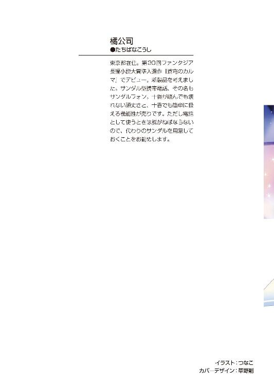
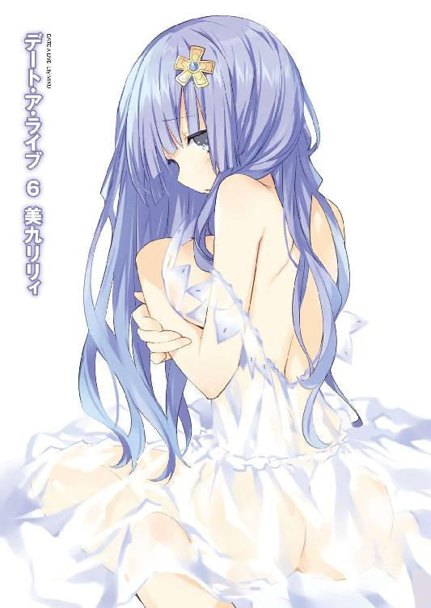
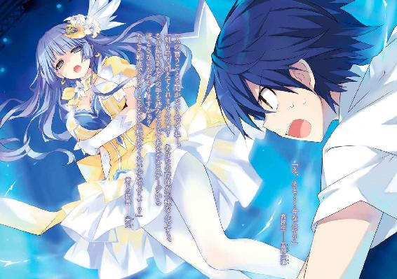
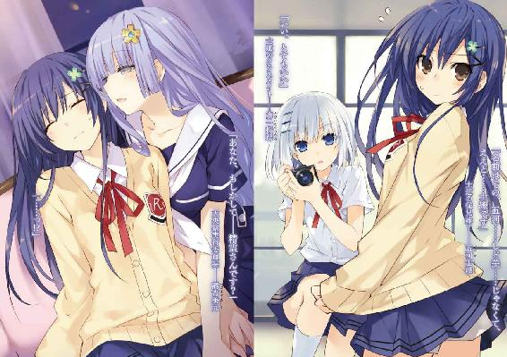
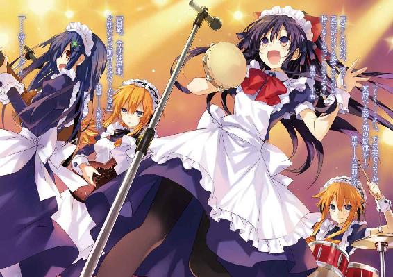
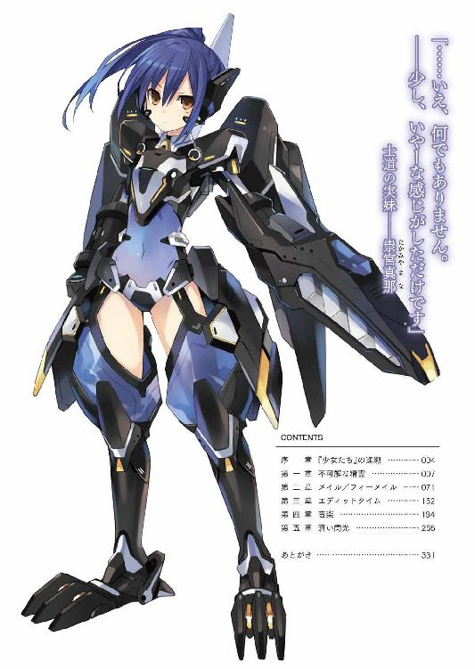
デート・ア・ライブ６
美九リリィ
橘 公司

富士見ファンタジア文庫
本作品の全部または一部を無断で複製、転載、配信、送信したり、ホームページ上に転載することを禁止します。また、本作品の内容を無断で改変、改ざん等を行うことも禁止します。
本作品購入時にご承諾いただいた規約により、有償・無償にかかわらず本作品を第三者に譲渡することはできません。
本作品を示すサムネイルなどのイメージ画像は、再ダウンロード時に予告なく変更される場合があります。
本作品は縦書きでレイアウトされています。
また、ご覧になるリーディングシステムにより、表示の差が認められることがあります。
口絵・本文イラスト つなこ
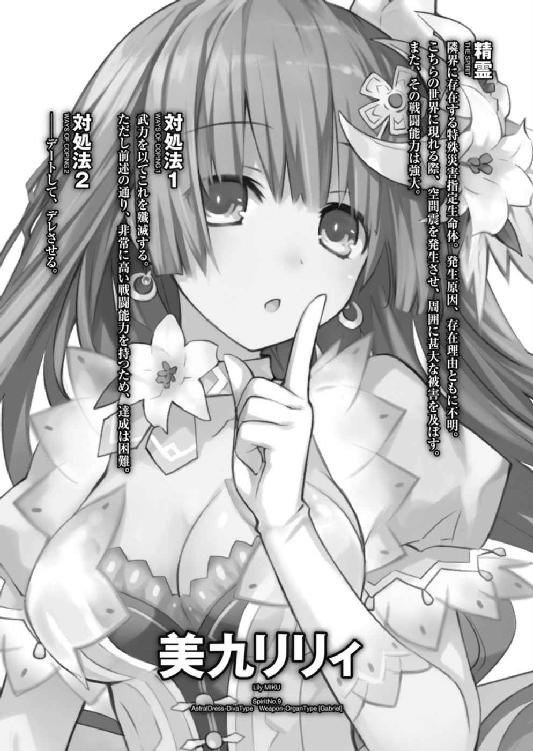
序章 『少女たち』の逢瀬
天宮スクエア大展示場の中は、若い活気に満ち溢れていた。
年に一度の天宮市高等学校合同文化祭・天央祭の会場である。辺りには様々な模擬店や展示物が並び、これまた様々な制服を着た生徒たちが大声で客を呼び込んでいる。
「うふふ、ねー、次はどこに行きましょうかー」
そんな、青春の汗と涙が凝縮したような空間の中を、五河士道は一人の可愛らしい少女とともに歩いていた。
紺色のセーラー服に身を包んだ、淑やかそうな少女である。シュシュで一つに纏められた長い髪に、朗らかな表情に飾られた美しい貌。抜群のプロポーションを持ちながら、それを誇示することもなく、膝下スカートの制服をきっちりと着込んでいる。
しかし、彼女という存在の中でもっとも印象的な要素を挙げろと言われた場合......恐らく士道は前述のどの要素も選ばなかったろう。
原因は、彼女のその『声』だった。ただ会話を交わしているだけでも、一瞬気を抜けば聞き惚れてしまいそうなほどの美しい声音が、断続的に士道の鼓膜を揺らしてくるのである。『聞く麻薬』とさえ言われる陶酔感。彼女──誘宵美九は、世が世なら、間違いなく声楽家か物語の語り部として宮廷に召し上げられているであろう美声の持ち主だったのである。
「少しお腹が空きましたねー。何か食べませんかぁ？」
しかしそんな傾国の美声を有している彼女は、さしてそれを気に留めることもなく、呑気な笑みを浮かべて首を傾げてくる。士道は思わず苦笑してしまった。
男子高校生の九割が一度は妄想しそうな、幸せ純度一二〇パーセントの文化祭デート風景である。実際、先ほどから何人もの生徒や来場客が、ちらちらと士道と美九のことを見てきていた。ひどい事例になると、許可を取らずに写真を撮ってくる者さえいる。
だが......それが嫉妬や羨望によるものからでないことを、士道はなんとなく理解していた。
理由は非常にシンプルなものである。
「......はぁ」
士道は深い溜息を吐き──自分ののどから漏れた高い声に、さらにもう一度溜息をこぼした。
「何してんだ......俺」
どう聞いても女の子のそれにしか聞こえない声で、そう言う。
今の士道の装いは、普段のそれとはまったく異なっていたのである。
背をくすぐる長い髪に、ファンデーションとチーク、マスカラ、グロスなどでナチュラルに仕上げられた顔。そしてその全身を覆うのは、濃紺のドレスとフリルのいっぱいついたエプロンという、いわゆるメイドさんスタイルだった。
もの凄く簡単に言うと、今士道の姿は、どこからどう見ても女の子にしか見えなかったのである。
「ねぇねぇ、士織さん。クレープってお好きですかー？」
士道の内心など知る由もなく、美九が朗らかな声をかけてくる。
士道はもう一度深い溜息を吐くと、それに応じるようにまたも女の子の声を発した。
第一章 不可解な精霊
夏休みが明け、九月八日。未だ夏の暑さが抜けきらない日の午後のことである。
来禅高校の体育館は今、異様な雰囲気に包まれていた。
『今からちょうど一年前......我らは多くのことを学ぶこととなった』
壇上に立ったクラスメートの山吹亜衣が、拳を握りながらマイク越しに声を絞り出す。
ちなみにその両脇には亜衣の親友である葉桜麻衣と藤袴美衣がどこぞの親衛隊かボディガードよろしく『休め』の姿勢で立っており、ついでに左右に来禅高校の校旗まで立てかけてあった。亜衣の異様な力の入り具合も相まって、まるでこれから開戦を宣言する一国の元首のようにすら見える。
『苦汁の味を、敗北の屈辱を......這い蹲らされた地の冷たさを』
拳を震わせながら憎々しげに言っていた亜衣が、バッと顔を上げる。
『さあ諸君。見るも哀れな敗残兵諸君。私は君たちに問いたい。我らは苦汁を舐めたままなのか？ 這い蹲ったままなのか？ 敗北に沈んだままなのか......!?』
ダン！ と亜衣が拳を演台に叩きつける。マイクのハウリング音が辺りに響き渡った。
『否！ 否だ！ 貴奴らは重大な失敗を犯した！ それは我らに復讐の牙を研ぐ時間を与えてしまったことである！ 悲願成就の時は来た！ 来禅に栄えあれ！ 来禅に誉れあれ！ 我らが渾身の一撃を以て、貴奴らののどを噛み千切らんッ!!』
『おおおおおおおおおおぉぉぉぉぉぉぉぉッ！』
亜衣が拳を振り上げると同時、それに呼応するように、体育館にひしめいていた生徒たちが一斉に声を上げた。体育館の窓ガラスが微かに揺れ、幾重にも反響した凄まじい声量が鼓膜を痛いほどに震わせてくる。
「はは......気合い入ってんな」
五河士道は苦笑しながら、壇上で演説ぶるクラスメートを眺めていた。
とはいえ、彼女らが熱狂する理由もわからないではない。何しろ──
「シドー、亜衣は一体何を言っているのだ？ どこかと戦争でも始めるのか......？」
と、右方から怪訝そうな声が響いてくる。
目をやると、士道の隣に立っていた夜刀神十香が視線を向けてきていることがわかった。
腰まであろうかという髪は夜色。士道を見つめる双眸は水晶。およそ自然に生まれ得たとは思えないほどに美しい少女である。
だがその表情は今、なんとも難しげな困惑の色に染まっていた。
まあ、それはそうだろう。何も事情を知らぬ者が今の演説を目にしたなら、さぞ混乱するに違いない。今の亜衣はどう見ても独立戦争の英雄か自己啓発セミナーの講師である。
「今月はあれだ、天央祭があるんだよ」
「天央祭？ なんだそれは」
「んー、まあ簡単に言うと超でっかい文化祭のことだな」
士道が言うと、十香が目をキラキラと輝かせた。
「文化祭......おお、テレビで見たことがあるぞ。学校に食べ物屋が並ぶ夢のような祭だ！」
「ん、まあ間違っちゃいないが......」
「おお......そうか、文化祭をやるのか！ それはあれだ、うん、いいと思うぞ！」
言ってひとしきり恍惚とした表情を浮かべたのち、再び首を捻る。
「ぬ......？ それで、なぜその文化祭をやるのに、このような決起集会が必要なのだ？」
「ああ、天央祭ってのはちょっと他の文化祭とは違ってな。──天宮市内の高校一〇校が合同でやる文化祭なんだよ」
「一〇校で......合同？」
十香が目を丸くする。士道は「ああ」とうなずいた。
士道たちの住む天宮市は、三〇年前の南関東大空災で壊滅的な被害を受けた東京都南部から神奈川県北部の一帯が再開発された地域である。
今でこそ最新技術のテスト都市として相応の人口が生活しているが、再開発が始まった当時は、空間震の脅威が抜けきっていなかったのも手伝ってか、地域面積や施設の充実度に比べて住民数が非常に少ないというアンバランスな時期があったのだという。
そしてそのとき行われたのが、天央祭と呼ばれる合同文化祭なのである。
「まあ要するに、当時は学校数も生徒数も少なかったもんだから、一緒にやって盛り上がりましょうって企画だったらしい。それが、住民数が増えた今も続いてるんだよ」
士道は苦笑しながら肩をすくめた。
当初、過疎地域の高校同士が肩を寄せ合って開催していたささやかな祭典が、今や天宮スクエア大展示場を借り切って三日に亘り行われる一大イベントである。
天宮市としても、今や大きなイベントとして成長してしまった天央祭を終わらせることもできず、容認しているのが現状らしい。
何しろ毎年テレビ局の取材が入り、市外からの観光客も多いうえ、天央祭を見て志望校を決める中学生が少なからず存在するというのだ。天央祭が高校の文化祭に収まりきらない経済効果を生み出してしまっているのも事実なのである。
だが、最初は各校手を取り合って文化祭を盛り上げましょうという理念のもと始まったイベントは、参加校が増えてくるにつれ、別の意味も持つようになっていった。
つまりは──
『今年こそ！ 今年こそは、我が来禅が王者の栄冠を手にするのだ！』
壇上の亜衣が高らかに叫ぶ。生徒たちが呼応する。
そう。天央祭は、模擬店部門、展示部門、ステージ部門などの優秀校を投票により決し、最優秀賞に選ばれた学校は、以後一年王者として君臨することになるのである。
如何に美しい理念に飾られようと、各校対抗というシステムが存在する以上、普段眠っている皆の闘争心と愛校心が煽られるのは当然のことだった。日頃サッカーに微塵も興味を示さない人が、ワールドカップとなると夢中で日の丸の旗を振るのと似たところがあるかもしれない。
と、士道が十香にそんな説明をしていると、背後から何やら声が聞こえてきた。
「くく......なるほどな。亜衣たちが奮起している理由がようやく知れたわ」
「納得。そういうことであれば負けるわけにはいきません」
見やると、そこにはいつの間にか瓜二つの少女が二人、立っていた。
一人は、長い髪を編み込んだ勝ち気そうな少女である。ぎゅうと抱きしめれば折れてしまいそうな華奢な肢体と、それに似合わぬ高慢そうな表情が特徴的だった。
もう一人は、髪を三つ編みに結った少女だ。無気力そうな半眼で飾られた美しい造作の顔に、モデルのようなプロポーションが、弥が上にも士道の視線を誘ってくる。
「耶倶矢、夕弦......なんでこんなところに」
そう。そこにいたのは、先々月士道が霊力を封印した精霊であり──新学期からお隣の二年三組に転入してきた八舞耶倶矢・八舞夕弦姉妹だった。
当初は彼女らも、士道と同じ四組に転入する予定だったらしいのだが、士道と一緒にいなければ不安がる十香とは異なり、二人揃ってさえいれば十分に精神状態が安定するため、隣のクラスへの編入が決められたのだという。
無論今は集会中。クラスごとに分かれて整列しているはずである。八舞姉妹も列を隔てて三組の方にいるはずだった。
だが、理由はすぐに知れた。興奮状態の生徒たちは来禅コールを繰り返しており、クラスごとの列などとうに意味をなしていなかったのである。
「ふ、とはいえまあ、我ら八舞姉妹がいる以上、来禅の勝ちは揺らぐまいて」
「同意。夕弦と耶倶矢のコンビは最強です。どんな相手が来ようと無敵です」
「くく、そういうことだ。何しろ夕弦ときたら何をしても完璧にこなしてしまうからな」
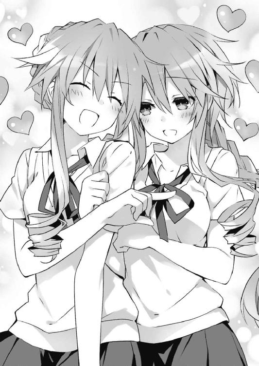
「肯定。しかも夕弦以上にパーフェクトな耶倶矢もいるのです。負ける道理がありません」
「いゃふふ......このー、なんだー、むず痒いぞ夕弦ー。つんつん」
「微笑。耶倶矢こそ。つんつん」
なんて、楽しげに微笑みながらお互いの二の腕をつつき合う。
「......はは」
そんな二人を見て、士道は力無い笑みを浮かべた。付き合って一週間目くらいのでろ甘カップル並みの仲睦まじさを披露するこの姉妹が、ふた月前に辺り一帯を巻き込む大喧嘩をしていただなんて、一体誰が信じるだろうか。
出てきて早々二人の世界を作り始めた八舞姉妹から十香に視線を戻す。
すると十香は、何やら難しげにうめいたあと、ふうむとうなずいた。
「なるほど......つまり食べ物屋もたくさんあるということだな？」
「......ああ、うん、まあ、そうだよ」
士道が力なく笑いながら言うと、十香はフンフンと鼻息を荒くしながらあごを撫でた。
「そうか、ふむ、そうか......ふふ、楽しみだなシドー。一体何屋があるのだ？」
「んー、それは......」
「説明しよう！」
士道が答えるよりも早く、今度は前方から声が響いてくる。見やるとそこには、クラスメートの殿町宏人が、特撮ヒーローのようなポーズを取りながら立っていた。
「殿町。なんだよ急に」
「助けを求めるレディの声に俺参上。天央祭でどんな出店が出るか知りたいんだろ？」
殿町が言うと、十香が目を丸くした。
「おお、知っているのか？」
「もちろんさ！ 十香ちゃんのために調べてきたぜ！」
言って殿町が懐からメモ帳を取り出し、パラパラと捲る。
「この中に、天央祭参加全一〇校の模擬店情報、約九〇ブースの全てが詰まっている！」
「おお！」
「教えて欲しいかい、十香ちゃん」
「うむ、教えて欲しいぞ！」
「じゃあおねだりしてみて！」
「お願いだ、シドーの友人よ！」
屈託のない顔でそう言う。その表情からは悪意らしきものは微塵も見受けられない。
殿町もそれを察したのだろう。なんだか複雑そうな顔をしたのち、士道の方にキッと視線を向けてきた。
士道ははあとため息を吐くと、十香に『殿町宏人』の名前を耳打ちしてやる。
「おお......なるほど。お願いだ、殿町！」
十香が元気よく言うと、殿町がパァっと表情を明るくした。
「も、もう一回！」
「お願いだ、殿町！」
「下の名前で！」
「お願いだ、宏人！」
「親しみを込めた愛称で！」
「お願いだ、ヒロポン！」
なんだか危ない薬みたいな名前になっていたが、殿町としては満足らしかった。感極まったように身を捩り、メモ帳に視線を落とす。
「そうまで言われちゃ断れねえな！ そうだな......模擬店部門でいうと、栄部西高校が毎年優秀な成績を残してるな。なんつっても家政科があるのが強い。調理部のクオリティが段違いだ。去年のドネルケバブ屋は文化祭クラスとは思えない出来だった......」
「ああ......そういえばあったなそんなの」
「今年の主力は、『肉の南北戦争！ こだわりのブラックメンチカツ』だそうだ。北海道産黒毛和牛と鹿児島産黒豚を贅沢に使った、ソースのいらない逸品だとか」
「な、なんと......」
十香が両手を戦慄かせながら声を発する。目はキラキラ輝き、口からは涎が垂れていた。
「あとは......まあ仙城大付属かな。あいつら付属校だけあって進学エスカレーターだから三年生まで出張ってきやがんだ」
「ふうん......じゃあその辺が本命なわけだ」
言うと、殿町がチッチッと指を振った。
「何言ってやがる。忘れたのか？ 王者・竜胆寺女学院をよ」
「あー......」
士道は頬をかいた。そういえば忘れていた。──昨年の優勝校を。
「あそこは今年もガチガチに仕上げてきてるぜ......市内最高と謳われる美少女偏差値を自覚しているところがタチ悪い。味や内容も一級品だが、それ以上に丁寧な接客で客数と得票数を稼いでるからな。去年の模擬店なんかよう、マジ握手会レベルの密着度でお釣りを手渡してくれるんだもんよう。もう何回並んだか覚えてねえよ」
「並んでんじゃねえよ」
士道がジトッとした視線で睨むと、殿町はコホンと咳払いした。
「ま、まあとにかく、なんとも恐ろしいお嬢様方だ。それに──今年の竜胆寺にはもう一つ、きな臭い噂がある」
「噂？」
士道が首を傾げると、殿町が「ああ」と返してきた。
「ほら、四月の頭にニュースにならなかったか？ 竜胆寺に編入生が入ったって」
「四月......ねえ」
士道はもう一度記憶を探るように眉をひそめたが......何も思い出せない。というか四月は十香の件で頭がいっぱいで、他のことに構っている余裕がなかった。
「マジかよ。覚えてないのか？ 美九たんだよ美九たん」
「......誰だ、そりゃ」
まるで記憶にない。士道は正直に言った。
だがそれは殿町にとってよほど信じがたい回答だったらしい。顔を愕然としたものに変貌させ、いきなりぱちーん！ と頬を張ってくる。
「てっ、何しやがんだよいきなり」
「それはこっちの台詞じゃー！ てっめ、ミステリアスアイドル誘宵美九たんを知らねえとは言わせねーぞ!? あぁ？ アレですかー？ みんながキャーキャー言ってるアイドルとか俺興味ありませんけど何か？ 的なクールキャラアピールですかー？」
「んなこと言ったって仕方ねえだろっ！ 別に知らねえ奴だって普通に──」
「いませーん！ いーまーせーんー!! 少なくとも俺らの年代の中には、超国民的アイドル美九たんを知らないようなヴァカは五河士道くん以外に存在しーまーせーんー！」
「言ったな!? じゃあもしその美九たんを知らない奴が同年代の中にいたらどうする!?」
「はッ！ そんときゃ土下座しながら尻でスパゲッティ食ってやんよ!!」
「本当だな!?」
「おうともよ！」
「なあ十香、誘宵美九って知ってるか」
「卑怯だぞ五河テメェ!?」
士道が十香に問いかけた瞬間、殿町が士道の肩にすがりついてきた。
だが、その必要はないようだった。十香はその口論をまるで聞いておらず──
「ぅむぅ......」
ぼうっとした顔を作りながら、何かを掴むように両手を掲げていたのである。そして口を大きく開けてパクッと虚空を食むと、んぐんぐと咀嚼して恍惚とした表情を浮かべた。
まさかのエアメンチカツである。そのあまりにリアルな仕草に、士道たちまで美味しそうなメンチカツの幻影を見てしまった。
「......おーい、十香？」
言いながら肩をつついてやると、十香がハッとした様子で身を震わせ、涎を拭った。
「ぬ、どうしたのだシドー」
「ん、いや......」
そう屈託のない目で言われてしまうと、なんだか言葉を継ぐ気もなくなってしまった。視界の端に、殿町がほうと胸をなで下ろす姿が見える。
「しかし......そうか、それはとてもいいな。なあシドー、当日は一緒に食べに行こう！」
十香が満面の笑みを浮かべながら、右手の小指をピンと立ててきた。
「ん？」
「令音に教えてもらったのだ！ 指切りというらしい」
「ああ......なるほど」
士道はぽりぽりと頭をかいてから、同じように小指を立ててやった。殿町をはじめとする周囲数名の男子たちからの視線が全身にちくちくと突き刺さる。
「よし、では──」
と、十香が士道の方に右手を近づけてきた瞬間。
人混みの中から素早く人影が飛び出してきたかと思うと、士道の小指に自分の小指を優しく絡ませ、同時に十香の小指をがっしと掴んで指取りの要領でぎりっと捻った。
「ぐぎゃっ！」
十香がぴょんと飛び上がり、慌てて右手を引く。
「お......折紙!?」
士道は目を丸くして、二人の間に現れた闖入者の名を呼んだ。
肩口をくすぐる絹の髪に、人形のように端整で──これまた人形のように表情の窺い知れない貌。それは間違いなく、士道のクラスメートにして十香の仇敵、鳶一折紙だった。
「指切りげんまん、うそついたら私の部屋で睡眠薬飲ーます」
抑揚もリズムもない声でそう言って、折紙が小指で繋がれた手を振ってくる。
「なぜ針一〇〇〇本じゃなくて睡眠薬!? 一体何するつもりだよ!?」
「男の子なら貴士、女の子なら千代紙」
「ホントに何するつもり!?」
士道が叫ぶと同時、十香が顔を上げ、鋭い視線で以て折紙を睨み付けた。
「きッ、貴様！ 何をするのだ！」
「あなたには関係ない。私と士道が天央祭当日、一緒に模擬店を回るのを約束したことは」
「な、なんだとっ!? ふざけるな！ その約束は私のものだ！」
十香が叫ぶと、折紙は勝ち誇ったようにフスー、と鼻から息を吐き、士道の小指と自分の小指の接合部を示すようにあごをしゃくった。ちなみに、折紙の小指は万力のような力でホールドされており、容易には外せそうになかった。
「ぐッ、は、離さんか貴様ッ！」
十香が顔をしかめ、士道と折紙の手を引き離そうと二人の手首を掴む。だが、
「今この指を離すということは、『指切った』──つまり約束の完成を示すことになる」
「な......っ！ は、離すな！ 離しては駄目だ！」
「そう。あなたにそこまで言われては仕方ない。もうずっと離さない」
折紙は無表情のままそう言うと、小さくうなずいた。
「う、うむ。そうすれば約束は完成しないぞ。これで......」
十香は安堵の息を吐いて胸をなで下ろし──すぐに「んん？」と眉の間にしわを拵えた。
「ちょっと待て！ それではシドーが貴様と離れられないではないか！」
「それは不可抗力。仕方のないこと」
「!? き、貴様、謀ったな!?」
愕然とした様子で十香が憎々しげに言う。
「おい、おまえら......」
士道は小指と手首から段々と感覚がなくなっていくのを感じながら頬をぴくつかせた。
と、そこで。体育館を包んでいた熱狂に微かな変化が現れた。
『静粛に、諸君。諸君らの思いはしかと受け取った。──そこで、一つ願いがある』
言って亜衣がマイクを手に取り、続ける。
『親愛なる同胞、桐崎生徒会長以下数名が、志半ばで英霊となられた。そこで、会長らの理念を継いでくれる同志を募りたい。我こそはという者があらば名乗りを上げてくれ！』
生徒たちがざわつきだす。たぶん皆、言っている意味がよくわからなかったのだろう。
ほどなくして、前の方に立っていた生徒が手を挙げる。
「えーと、つまりどういうことですか？」
亜衣はぽりぽりと頭をかくと、今までの芝居がかった調子を忘れたように続けた。
『うーん......まあぶっちゃけると、会長たちがみんなストレスと過労でぶっ倒れちゃったもんだから、代役を決めないといけないのよ。誰か天央祭の実行委員やってくんない？』
瞬間──
つい数瞬前まで地鳴りのような声を響かせていた生徒たちが、一斉に静まりかえった。
これはまずいと思ったのだろう、亜衣が身振りをしながらフォローを入れてくる。
『いや、っていってももう大体の仕事は終わってるのよ？ ホントホント。会議のとき座っててくれるだけでいいからさ！ マジもう超アットホームな委員会だから！ スキルアップに繋がるから！』
なんだか後半はブラック企業のアルバイト募集みたいな誘い文句になっていた。
先ほどあそこまで熱狂していた生徒たちの熱が、急激に冷めていくのがわかる。皆壇上の亜衣たちと目を合わせないよう、視線を逸らし始めた。
だが、士道にそんな体育館の空気の変化を気遣っている余裕などはなかった。
「！ そうか！」
十香が何かを思いついたように目を見開くと、折紙の反対側──士道の左手の小指に自分の小指を絡ませてきたのである。
「どうだ！ これであいこだ！」
「左手で行う指切りは絶縁を意味し、もう二度とその人と関わらないことを示す」
「な、何......ッ!?」
十香は戦慄に染まった声を発し、士道の顔と結んだ指を交互に見てから、今にも泣き出してしまいそうな顔を作った。
「し、シドー！ ち、違うのだ、私はそんなつもりでは......！」
「......いや、聞いたことないぞ、そんなの」
士道が言うと、十香はキョトンと目を丸くし──
「お、おのれ貴様っ！ 一度ならず二度までも！」
そう叫んで、士道の小指をぐいと引っ張ってきた。折紙も負けじと、小指のみを支点に士道を引っ張ってくる。
「あたたたたたたたっ！ や、やめろって！」
これが大岡越前の子争いならばどちらかが手を離してくれるところなのだろうが、どっこい現実は甘くなかった。二人ともさらに力を込めてくる。と、
「くく......御主ら、我らを差し置いて何を勝手なことをしている？ 斯様に愉快な祭よ、士道は我らとともに享楽に耽りたいに決まっておろうが」
「警告。士道は夕弦と耶倶矢の共有財産です。マスター折紙とて例外ではありません。使用したい場合は最低一週間前に書面にて申請してください」
二人でいちゃついていた八舞姉妹が騒ぎを聞きつけ、話に乱入してきた。士道が動けないのをいいことに、前後からぴたりと寄り添うようにしてくる。
「う、うぬっ！ 耶倶矢に夕弦、おまえらもか！」
「......、死にたくなければ今すぐ離れるべき」
さらにぎりぎりと、両手が引っ張られる。
「ぎゃぁぁぁぁッ!?」
「この......っ！ シドーが痛がっているではないか！ 離さんか！」
「それはこちらの台詞。一刻も早く彼を解放すべき」
「くく、ぬしらは不毛な争いを続けているがいい」
「同意。その間に夕弦と耶倶矢がいただいていきます」
しかも最悪なことに、先ほどとは異なり周囲が静まりかえっていたものだから、やたらと生徒たちから注目を集めてしまっていた。殿町をはじめとする男子生徒たちがギリギリと歯ぎしりをしながら鋭い視線を寄越し、女子生徒たちがひそひそ話を始める。
と、士道を恨めしそうに睨んでいた殿町がぐるりと身体の方向を変えたかと思うと、不意に大声を発しながら手を高く掲げた。
「議長！」
『はい、殿町くん』
「天央祭の実行委員に、五河士道くんを推薦しますッ！」
「な......っ！」
急な友人の裏切りに目を見開く。
「て、てめぇ殿町っ！ 何言って......あたたたたたッ!?」
抗議の声は、しかし左右からの強力なウインチによって遮られた。
そうこうしている間にも、殿町に賛同した男子たちが次々と声を上げる。
「賛成！ 頼んだよ、五河くん！」
「賛成！ 俺たちの意思を託せるのは五河しかいない！」
「賛成！ せいぜいこき使われて病院送りになってくれドチクショウ！」
「おい最後本音出やがったな!?」
叫ぶも、同調を示す男子生徒は後を絶たなかった。ついでにそれに乗っかるように、女子も一緒に五河コールを送ってくる。
『静粛に！』
と、それを制するように亜衣が壇上から声を響かせた。
一瞬、亜衣が皆をなだめてくれるのかと思ったが......さすがにその思考は甘すぎた。
『諸君らの声、しかと受け取ったぁッ！ 二年四組五河士道くんを、他薦・賛成多数により、天央祭実行委員に任命しまッす！』
「ちょ......ッ！」
『おおおおおおおおおおおおおおおおおおおおおおおおおおおおっ！』
士道の声は、体育館を揺るがす大歓声に呑み込まれた。
◇
インペリアルホテル東天宮の最上階スイートルームで悠然とソファに腰掛けながら、アイザック・ウェストコットは小さく息を吐いた。くすんだアッシュブロンドの先を微かに揺らしながらあごを上げ、研ぎ澄まされた刃のように鋭い目をさらに細める。
今ウェストコットの視線の先にあるのはダブルクリップで留められた書類束だった。ニッと唇の端を歪めてから、左方に視線を移す。
「──なるほど。ＡＡＡランク精霊〈プリンセス〉に、精霊の力を扱う少年、か。そんな二人が同じ学校に通っているとは、確かに興味深い」
「は」
そこに控えていたのは、まさにその資料を作成した少女だった。
エレン・Ｍ・メイザース。ＤＥＭインダストリーが誇る、人類最強の魔術師である。
「しかもそれに加えて、現場には〈ラタトスク〉の空中艦がいた、ときたものだ」
〈ラタトスク〉。その名はウェストコットとエレンにとって因縁深いものだった。
空間震の発生を平和的手段で以て抑制し、その原因たる精霊を保護しようなどという、酒でも呷っていなければ吐けないような世迷い言を理念として掲げる組織である。
ウェストコットは笑みを隠しきれず、口元に手を置いた。
「くく、なぜだろうな、少し嬉しいよ。──あの若造が、まさか私を出し抜くだなんて」
「そうでしょうか。私は不快感しかありませんが」
エレンが間を置かずに返してくる。ウェストコットはそんなエレンの様子がまたおかしくて、口元を隠していた手で顔を覆ってくつくつと笑った。
エレンはそんなウェストコットの反応が不満だったのだろう、表情は変わらないものの、少しムスッとした様子を覗かせてきた。
ウェストコットは詫びるように手をひらひらさせると、言葉を継いだ。
「それで、あちらの方はどうかな」
「滞りなく。アデプタス３以下一〇名、今日付で実働部隊に配属となりました」
「けっこう」
満足げにうなずく。この無理矢理な編制を通すために幾つもの鼻薬を必要としたが──まあ些細なことだろう。
確かに新たなシステムや機構を設置してしまった方が効率的に己の手足である魔術師を動かせはするだろう。だがそれには膨大な資金と時間が必要となる。日本国内で公的に武力を振るうためには、これが最も確実で手っ取り早いのである。
「イツカ──シドウ」
再度資料に視線を落とし、そこに記されていた名を読み上げる。
そこでウェストコットは大仰に肩をすくめた。
「しかしながら、肝心の写真がないとはね。君らしくないな」
そう。〈プリンセス〉夜刀神十香の資料には望遠で撮られた写真が数点添付されていたのだが、こちらの少年の方にはそれがなかったのである。
「まさか精霊以外の資料が必要になるとは思わず。すぐに手配させます」
「いや、いいさ。──その代わり、早く本物の彼と対面してみたいな」
言うと、エレンが小さく吐息した。
「了解しました。必ず」
「ああ、期待しているよ」
ウェストコットはそう言うと、資料をテーブルの上に放ってソファから立ち上がった。
「──そうそう、もう一つ」
そしてゆっくりとエレンの方に歩いて行き、その肩に手を掛ける。
「もし〈ラタトスク〉が彼らに関与しているというのなら......盛大に挨拶をしておかねばならないとは思わないか？」
「挨拶、ですか」
「ああ、そうだ。不遜な平和主義者たちの頭を殴りつけて目を覚まさせるような、とびきりの挨拶さ」
そう言って、ウェストコットは含み笑いを漏らした。
◇
すっかり日も落ちた一九時三〇分。士道は薄暗い道をフラフラと歩いていた。
「つ、疲れた......」
結局あのあと、数の暴力に抗うこともできず、正式に天央祭実行委員に任命されてしまった士道は、半ば強制的に仕事の引き継ぎに付き合わされていたのである。
ブース設営の決まりごとから始まり、予算の分配に各種伝達事項その他諸々の情報を一気に詰め込まれたため、身体の疲労よりも頭と精神の疲弊が深刻だった。なるほど、こんな量の情報を処理していたのではストレスで胃を痛めるのも無理からぬことである。よく亜衣麻衣美衣はピンピンしているものだ。
通学鞄を右手に、買い物袋を左手に揺らしながら、のったのったと道を歩いていく。
今日はスーパーマーケットではなく、近所の商店街で買い物を済ませてきた。疲れていたためスーパーの方に回りたくなかったというのもあるが、どちらかというと......
（そろそろ天央祭の時期ねえ、今年も頼むわよー？ ほら、ピーマン持ってきなさいな）
（挽肉のグラム数多くないかって？ はっは、たっぷり食って体力つけてもらわにゃな）
（これ！ 持ってきな。いーのいーの。ほら、いつも一緒に来る子にでもあげて）
なんて、顔なじみの面々からいろいろとおまけを付けてもらえるのである。
天央祭の際には市内外から人が集まるため、近隣の商店街もにわかに活気づくのだ。実際、年末年始に次ぐ稼ぎ時という話である。
通りの塀に並んで張り付けられている天央祭のカラフルなポスターを見ながら、小さく笑う。このお得週間が存在するだけでも、天央祭は五河家の家計に多大なる貢献をしてくれているのだった。
「......ん？」
と、そこで士道はふと足を止めた。
士道の前方──街灯に照らされた道の上に、小さな人影が見受けられたからだ。
つばの広い麦わら帽子を被り、淡い色のワンピースを纏った小柄な少女である。綺麗な青い瞳と、左手に着けられたウサギのパペットが印象的だった。どうやら、塀に貼られているポスターを見ているらしい。興味深げに、大きな目をさらに大きく見開いている。
「四糸乃？」
「......！」
名を呼ぶと、少女──四糸乃はぴくりと肩を揺らして士道の方に視線を向けてきた。
「あ......士道、さん」
『おー、見ぃーつーけたー』
四糸乃が小さな声を発し、次いで左手のパペット『よしのん』が甲高い声を上げる。
「どうしたんだ？ こんなところで。もう暗いのに......」
「あ、あの......私、士道さんのおうちに、お邪魔してたんです、けど......士道さんの帰りが遅くて、琴里さんが心配してたから......それで......」
どうやら様子を見に来てくれたらしい。士道はぽりぽりと後頭部をかいた。
「そっか。でも、もう暗いぞ。二人だけで出てきたのは感心しないな」
士道が言うと、四糸乃は申し訳なさそうに肩をすぼませた。
「あ、あぅぅ......」
『怒らないであげてよー。四糸乃にも悪気はないのよー。士道くん心配だったのよー』
「わかってるよ。ありがとな、四糸乃」
「は、はい......！」
言って、四糸乃が大きくうなずく。大きな麦わら帽子のせいか、士道の位置からだと顔が見えなくなってしまっていた。
「夕飯まだだろ？ ちょっと遅くなっちまうけど、食べてけよ」
「はい......ありがとうございます。それと、えっと、一つ訊きたいんですけど......」
と、四糸乃がそろそろと右手の人差し指を、今し方見ていたポスターの方に向けた。
「これって......一体......」
「ん？ 天央祭だよ」
士道は小さくうなずくと、十香に話したように簡単に天央祭の説明をしてやった。
すると、四糸乃が何やら興味深そうにうなる。
「そんなのが......あるんですか......」
『はー、楽しそうだねー』
「ああ、楽しいぞー。良かったら四糸乃たちも来いよ」
言うと、四糸乃が驚いたように目を丸くした。
「！ い、いいん......ですか......？」
「もちろん。うちの学校でもいろいろ出展するから、遊んでいってくれよ」
『あっらー、よかったねー、四ー糸乃』
「う、うん......！」
『よしのん』がぷにぷにと四糸乃の頬をつっつく。四糸乃は嬉しそうに首肯した。
そんなに喜んでもらえると悪い気はしない。士道はなんとなく明るい気持ちになりながら、四糸乃を伴って家に向かっていった。
「──ただいまー」
両手が塞がっているため、四糸乃に扉を開けてもらいつつ、廊下の奥に向かって声を張り上げる。
それから玄関に荷物を置き、靴を脱いでいると、バターン！ とリビングの扉が開け放たれ、長い髪を黒いリボンで二つに括った少女が飛び出してきた。そして、
「遅ぉぉぉいッ！」
そんな叫び声を上げると同時、士道の鳩尾に見事な跳び蹴りを放ってくる。
「うが......ッ!?」
突然の攻撃に、その場に尻餅を突いてしまう。鈍く痛む腹をさすりながら立ち上がると、そこには不機嫌そうな顔で仁王立ちする妹様の姿があった。
「ふん......うがだって。カラオケでもしてなさいよ」
「な、なんだよ、いきなり......」
「......それはこっちの台詞よ。なんでこんなに遅いのかしら？ 一本の電話もなしに」
士道はぽりぽりと頬をかいた。確かに遅いことは遅いが、まだ八時前である。
「悪かったよ。突然文化祭実行委員にされちまったんだ」
「実行委員......」
琴里は士道の言葉を聞くと、なぜだろうか、ほうと息を吐いた。
「......体調が悪くなったりだとか、そういうことはないのね？」
「え？」
「......なんでもないわ。──それより、四糸乃を迎えに呼ぶなんてどういう了見よ。もう日も落ちてるってのに」
「いや、それは......」
反論しようとして......言葉を止める。
「ん、そうだな、すまん。今後気を付けるよ」
「あ......そ、その、琴里さん、士道さんは......」
「いいから」
士道を擁護しようとしてくれた四糸乃を制止する。なぜかそんな様子を見て、琴里が一層不機嫌そうに顔を歪めた。フンと鼻を鳴らし、リビングの方に歩いていってしまう。
その後ろ姿が見えなくなってから、四糸乃が申し訳なさそうに頭を下げてくる。
「すいません......私のせいで......」
「気にするなって」
呟いてから、士道はふうむとうなった。今日のことは極端な例にしても、そういえば先月、士道が修学旅行から帰ってきたあたりから、何やら琴里の様子がおかしい気がする。
別に普段は何も変わらないのだが、士道が少し怠そうにしていたりすると、なぜか妙に落ち着かない様子になるのである。
士道はぽりぽりと頭をかいてその場から立ち上がると、荷物を持ってリビングに歩いていった。四糸乃もそれに続いてくる。
と、そこで、リビングの扉が微かに開いていることに気づく。そしてその隙間から、ジトッとした視線を放つ目が覗いていた。......先ほど扉の奥に消えたはずの琴里である。
「な、なんだよ。まだ何かあるのか？」
士道が言うと、扉の奥からコロコロコロ......という可愛らしいお腹の音が聞こえてきた。
「............」
琴里が頬を赤く染める。士道は鞄を下ろすと、ほうと息を吐いてから表情を緩めた。
「何か食べたいものはあるか？」
「......ハンバーグ」
「今からかあ......？」
それなりに時間のかかるメニューである。士道は携帯電話で現在時刻を確認してみた。
すると画面上に、琴里からの不在着信が表示されていることがわかる。......どうやら、随分と心配してくれていたらしい。
「............」
士道は携帯電話をしまい込むと、肩を回しながらリビングの方に歩いて行った。
「ちょっと時間かかるけどいいか？」
「......ん」
琴里はムスッとした顔のままリビングの方に走っていき、ソファにダイブした。
そちらに目をやると、リビングに琴里以外の姿があることがわかる。隣のマンションで着替えを済ませた十香が、テレビの前でゲームのコントローラーを握っていた。
士道の委員会が終わるのを待っていると言って聞かなかったのだが、さすがに遅くなってしまいそうだったため、先に帰らせていたのである。
「おおシドー、おかえりだ！ というか琴里！ 早く手伝ってくれ！」
画面に合わせて身体を左右に動かしながら十香が叫ぶ。しかし琴里はクッションに顔を埋めたままくぐもった声を発した。
「んー......四糸乃、お願い」
「えっ、ええ......っ？」
急に後任に任命された四糸乃は、焦った様子で十香の横に走っていった。
「え、えと......これ、どうすれば......」
「ズガッとやってビッとやればバーンとなる！ そこだ！」
「あ、あの......その......」
『まあ、習うより慣れろだよー。左はよしのんが担当するから右は四糸乃がお願いねー』
「わ、わかった......」
四糸乃と『よしのん』が同時にコントローラーを握り、ゲームに参戦する。
「......はは」
士道はそんな様子を見てから鞄を適当に放ると、手洗いうがいを済ませてから、椅子の背もたれに掛けてあったエプロンに手を伸ばした。
と、士道がタマネギの皮を剥き始めたところで、ソファに突っ伏していた琴里が不意に顔を上げ、声をかけてきた。
「......ねえ、士道。本当に何でもないのよね？」
「んー？ なんだよー、心配してくれてんのかー？」
「ち、違うわよ！ そう......十香よ、十香！ 士道に何かあったら十香の精神状態が崩れて大変なことになるの！ だからちゃんと体調管理しなさいよねって言ってるのよ！」
「へえへえ」
士道が笑いながら言うと、琴里は身体を起こし、ぶすっとした様子で視線を送ってきた。
名を呼ばれたことに気付いたらしい十香が「なんだ!?」と声を上げてきたが、どうやらその瞬間ボスキャラが出現したらしい。すぐにゲームの方に戻っていく。
琴里が、はあと息を吐き出し、ソファの背もたれに身体を預け、十香たちに聞こえないくらいの音量で言葉を続けてきた。
「......でも、本当に気を付けて。いろいろと厄介な状況になってきたし」
「厄介な状況？」
問うと、琴里は「ええ」とうなずいた。
「いくつかあるけど......まあさしあたっては〈ファントム〉ね」
「〈ファントム〉......？ なんだそれ。精霊の識別名か？」
「五年前、私たちの前に現れた『何か』のことよ。いつまでも『何か』のままじゃ不便だしね。この前の会議で便宜的に識別名が付けられたの」
「ああ......あの」
五年前。琴里に精霊の力を与え、士道と琴里の記憶を封印していた、精霊であるかどうかさえもわからない、正体不明の存在。
確かにあの存在は懸案事項だった。未だその実像や目的など、一切が謎に包まれているというのだからなおさらに。
「そしてもう一つは──例の会社ね」
「ＤＥＭ社......か？」
士道が言うと、琴里が首を前に倒すのが見えた。
先月のことである。修学旅行でとある島に赴いた士道は、二人組の精霊・八舞耶倶矢と八舞夕弦に遭遇した。そしてその際、魔術師エレン・メイザースと、ＣＲ─ユニットを使う機械人形、さらには巨大な空中艦の襲撃を受けたのである。
その犯人が、ＤＥＭ──デウス・エクス・マキナ・インダストリーであるというのだ。
様々な分野に進出している会社ではあるが、元を辿れば軍需産業で急成長したという話である。一般には公開されていないが、自衛隊ＡＳＴが用いている顕現装置を製造しているのも、このＤＥＭ社であるらしい。
「しっかし......なんか未だに現実感がないな。あのＤＥＭ社があんなことを......」
「眠たいこと言ってんじゃないわよ。連中にそんな倫理観があれば真那だって──」
「え？」
琴里の言葉に、士道は眉をぴくりと動かした。
「真那......？ 真那がどうかしたのか？」
その名は、以前士道たちの前に現れた、士道の実妹を名乗る少女のものである。だが、彼女は今精霊との戦いで深手を負い、病院で治療を受けているはずだった。
琴里は「しまった」という顔を作ると、唇を引き結んで視線を逸らした。
「お、おい、どういうことだよ。真那に何か......」
さすがにそれは無視できなかった。手にしていたタマネギをまな板の上に置き、エプロンで手を拭いながらダイニングテーブルを迂回してリビングの方に歩いて行く。
だが、士道が琴里の前に立った瞬間。
ウウゥゥゥゥゥゥゥゥゥゥゥゥゥゥゥゥゥゥゥゥ────────
「......！ な──」
リビングの大きな窓ガラスを微かに震わせ、街中に空間震警報が鳴り響いた。
刹那、琴里が立ち上がり、スカートを翻して士道の脇をすり抜けていく。
「あ、お、おい！ 話はまだ──」
「あとにしてちょうだい。士道も支度をして。──仕事よ」
そう言って、琴里はレッグホルスターのごとくスカートの中に装着していたキャンディホルダーからチュッパチャプスを一本取り出し、一瞬で包装を解いて口に放り込んだ。
◇
ときは少し遡り、陸上自衛隊天宮駐屯地。
「──鳶一折紙一等陸曹。今日付で君に課せられていた謹慎は解除となった。ＡＳＴの一般任務、及び訓練に復帰してもらうよ」
「は」
基地の一室で上官に告げられた言葉に、折紙は敬礼を以て返した。
そう。折紙は六月に致命的な不祥事を起こしてから今までの間、顕現装置の使用及び陸上自衛隊での活動を禁止されていたのである。
無論その間も基礎トレーニングは欠かさなかったが、顕現装置が使えないのでは精霊に対する戦闘訓練など出来ようがない。折紙は二ヶ月以上もの間、言い知れぬ焦燥感と無力感を噛みしめながら過ごしてきたのである。
とはいえ、本来懲戒免職の上何らかの刑事罰を受けていてもおかしくない状況であったことを考えれば、再び部隊に復帰することができただけでも奇跡のようなものだった。
「次はないぞ。もしまた同じことがあれば、二度と復隊はないと肝に銘じたまえ」
「承知しています」
と、折紙が短く答えたところで、部屋の扉がノックもなく開かれた。
「......？」
折紙は後方に首を回し、その犯人の姿を認めて怪訝そうに眉をひそめた。
「......日下部一尉？」
そう。やたらと興奮した様子で部屋に入ってきたのは、予算と礼儀にうるさいＡＳＴ隊長、日下部燎子だったのである。
しかし燎子はそんな折紙の思案とは裏腹に、苛立たしげにのしのしと歩みを進めると、上官の机に手にしていた書類束を叩きつけた。
「どういうことですか、これは！」
「な、なんだね、一体......」
塚本三佐も燎子の剣幕に押され、非礼を注意することもせずに身を反らした。
「どうかしたの？」
問うと、燎子はようやく折紙の存在に気付いたらしかった。
「ああ......折紙。そういえばあんた今日復隊か。──ちょうどいいわ。これ、どう思う？」
言って、今し方机に叩きつけた書類束を放ってくる。折紙は紙面に視線を落とした。
「これは......」
そこに記されていた信じがたい内容に、微かに眉根を寄せる。
「こんな編制、無茶苦茶過ぎます！ 外国籍の隊員を一〇名......しかもその独立分隊に非常時における特別裁量権を付与......!? 一体上層部は何を考えているんですか！」
言って、燎子が再び机をバン！ と叩く。塚本三佐がビクッと肩を震わせた。
その書類に記されていたのは、ＡＳＴへの補充要員の情報だった。
別に、それ自体にそこまで問題があるわけではない。
だが、その補充要員の数が一〇名にも上り──あまつさえその全てがＤＥＭインダストリー社の出向社員、しかも全員が外国人であるというのであれば、話は別だった。
その上、必要に応じて燎子の指揮下から自由に外れる権限を有するというのである。こんなもの、株を買い占められ、会社が乗っ取られるのと何ら変わらない。
「ＡＳＴは野球チームじゃないんですよ!? 外国籍の人間が入隊できるはずがないでしょう!? その上こんな権限を与えるだなんてどうかしているとしか思えません！」
「そ、それは......」
塚本が口ごもる。燎子は焦れたように頭をかくと、もうあなたでは話にならないとばかりに踵を返そうとした。
が、そこで再び、部屋の扉が、こんどはゆっくりと開かれる。
そして──一〇名ほどの外国人が次々と部屋の中に入ってきた。
「──あラ？」
と、先頭にいた赤毛の女が燎子と折紙の姿を見てか、唇を歪めてくる。歳は燎子と同じくらいだろうか。釣り目がちの双眸のためか、どことなく狐を思い起こさせる女だった。
「資料で見た顔ネ。ＡＳＴの隊長さんに──そう、トビイチオリガミだったかしラ？」
独特のイントネーションでそう言って、女がさらに笑みを濃くする。
「......あんたは？」
燎子が問い返す。すると女は大仰にうなずいてから右手を差し出してきた。
「今日付でＡＳＴに配属になったジェシカ・ベイリーでス。以後よろしク」
「......ふん」
燎子は不快そうに顔を歪めると、手を弾くように押し付け、握手を交わした。
「一体あんたらが何しに来たのか知らないけど、ここで好き勝手な真似はさせないわよ。ＡＳＴに所属する以上、私の命令に従ってもらうわ」
言うと、ジェシカは目を丸くし、背後の部下たちと目を見合わせてから肩をすくめた。
「あなたの命令に従えば、精霊は倒せるのかしラ？」
「......なんですって？」
「ＡＳＴのことはいろいろ聞いてるワ。ここ数年、空間震が世界で最も多い地域の対精霊部隊でありながら、未だに一体の精霊も狩れていないオママゴトチームってネ」
「な──」
ジェシカが眉を歪める燎子から、折紙の方に視線を移してくる。
「アナタのことも聞いてるわヨ？ なんでも勝手に精霊を殺しに行って、謹慎を食らったそうじゃなイ。あはは、アナタは少しだけ私たちに近いかもネ」
折紙が無言でいると、ジェシカがずいっと顔を寄せてくる。
「でも、駄目ヨ。お話にならないワ。〈ホワイト・リコリス〉なんて欠陥品を無理に使おうとして、結局何の成果も上げられなかったんでしょウ？ ふふ、無様ねェ」
ジェシカがニヤニヤしながら言うと、後方の隊員たちが含み笑いを漏らし始めた。
「隊長、いくらなんでも可哀相ですよォ」
「極東の木っ端隊員を、私たちの基準で測っちゃいけませんってばァ」
「そうですよ。彼女だって好きで弱いわけじゃないんですから」
そばかす顔の女と、唇の厚い女、そして目の細い女が、順に嘲るように言う。折紙は表情を変えぬままギリと奥歯を噛みしめた。
「あら、怒っちゃっタ？ きゃはは、怒ったらどうするノ？ 精霊すらまともに倒せないアナタたちが、ＤＥＭのアデプタス・ナンバーである私たちに敵うとでも思ってるノ？」
「......ちょっと、あんた大概に──」
と、燎子がジェシカを止めようとしたところで。
辺りに、甲高い警報が鳴り響いた。
「......！ 折紙、出動準備よ！ 腕は鈍ってないでしょうね!?」
「当然」
折紙が答えて駆け出そうとすると、またもジェシカたちが笑みを浮かべてきた。
「鈍っていようがいまいが、精霊を殺せないのであれば同じことなんじゃないノ？」
「............」
「やめなさい、折紙。今はそんな場合じゃないでしょ」
折紙がジェシカを睨み付けると、燎子がそれを止めるように間に入ってきた。
「私たちは出動するわ。何を言われようが、この街を守らなきゃいけないもんでね。......あんたたちは一体どうするのよ」
「ああ、私たチ？ そうねェ......いいわ、ちょうどいいタイミングだし、私たちも出撃しましョ。アナタたちに戦い方を教えてあげるワ。ただシ──」
ジェシカが指を一本立ててから、言葉を続けてくる。
「私たちは特別な任務を帯びてるノ。場合によってはそちらを優先させてもらうワ」
「......特別、任務？」
折紙は言いながら眉を歪めた。
なぜだろうか、その言葉から、不穏な響きを感じ取ってしまったのである。
◇
「く......」
士道は思わず顔をしかめた。高速のエレベーターに乗っているかのような奇妙な浮遊感が身体を包むと同時、視界に映る景色が、仄暗い艦内から夜の道へと変貌する。
〈フラクシナス〉に搭載された装置によって、一瞬のうちに半ば瞬間移動のような転送をされたのである。酩酊するように歪む意識をどうにか保つため額を押さえながら、士道は踵で地面を踏みしめた。
視界の靄が消えてから、改めて辺りを見回す。
士道が降り立ったのは、天宮市の西部に位置する立浪駅前の広場だった。
多目的イベントホール・天宮アリーナの最寄り駅であるため、ライブやイベントなどが行われる日は、人で埋め尽くされる場所である。以前士道も、人気バンドのライブがやっていることを知らずに通りかかったとき、あまりの人の量に驚いたのを覚えている。
だが、そんな駅前広場には今、人の姿はまったく見受けられなかった。
それもそのはずである。士道の視界に広がる景色は、その大部分がすり鉢状に抉り取られ、クレーターのようになっていた。駅前広場もその大部分が失われ、柵の一部を残しているだけである。
空間震。世界を、人類を蝕む突発性災害。
一瞬のうちに「そこにあるもの」を消し飛ばしてしまう広域震動現象である。
『無事現場に着いたみたいね』
右耳に装着した小型のインカムから、琴里の声が聞こえてくる。
〈ラタトスク〉の司令官たる琴里は今、ここから一万五〇〇〇メートル上空に浮遊する空中艦〈フラクシナス〉で、士道の様子をモニタリングしているはずだった。
『精霊の反応は空間震発生地点から南の方に移動しているわ。急いでちょうだい』
「了解......！」
答えて、その場から駆け出す。
──精霊。世界を殺す災厄と呼ばれる、特殊災害指定生物。
空間震とはこの精霊が『隣界』と呼ばれる空間から現れる際の余波なのである。
「......っとと」
足を滑らせそうになりながらも、なんとか走り続ける。ちょうどライブかイベントでも行われていたのだろう、街頭に照らされた道にはカラフルなチラシや写真の貼り付けられたうちわなんかが散乱していた。一瞬マナーの悪い観客たちだとも思ったが、急に空間震警報なぞ鳴れば、手にしてたチラシなんて放って逃げざるを得ないだろう。
「琴里、精霊の反応はどこだ!?」
『ちょっと待って、今正確な位置を──』
と、琴里が言いかけた瞬間。士道はぴくりと眉を動かした。
前方──天宮アリーナの方から、何かが聞こえてきたのである。
「これは......歌......？」
そう。壁に阻まれて微かにしか聞こえないが、それは紛れもなく『歌』だった。
まさか空間震警報が鳴り、観客も皆避難したというのに、一人残ってステージで歌い続けているシンガーでもいるというのだろうか。一瞬そんな想像が頭に浮かび──すぐにかぶりを振る。
士道は半ば呆然と大きな扉を押し開け、アリーナの中に足を踏み入れていた。
そして、ステージが一望できる位置まで歩みを進める。
瞬間──士道は身体を射すくめられるかのような感覚に襲われた。
アリーナの中央。恐らく出演者やスタッフが舞台装置を放置したまま避難してしまったのだろう、暗い会場の中、櫓のようにせり上がった舞台だけが、下方から幾つものスポットライトに照らされ、光に溢れている。
その、真ん中に。
光の粒子で縫製されたかと見まごうような煌びやかな衣を纏った少女が立ち、会場中に声を響かせていた。聞き慣れない言語で構成された、まるで子守歌のように静かな曲調が、士道の鼓膜を震わせる。
「ぁ──」
意図せず、士道ののどからは、感嘆のような声が漏れてしまっていた。
楽器の演奏が伴うわけでもない。マイクや拡声器を使用しているわけでもない。完全な無伴奏の独唱。
だがその声のみで形作られた曲調は、まるで耳を通って脳幹に染み渡るかのような錯覚を覚えるほどに、圧倒的な力を有していた。
『あれはまさか──〈ディーヴァ〉......!?』
「......！」
不意に右耳に響いた琴里の声に、意識を取り戻させられる。士道は目を伏せて小さく首を振った。ついでに軽く頬を張って気合いを入れ直す。
──そうだ。歌に聴き惚れている場合ではない。
何しろ士道には今から、非常に困難を極める大仕事が待っているのである。
「〈ディーヴァ〉......それがあの子の識別名なのか？」
『ええ......半年くらい前に一度だけ出現が確認された精霊よ。一応データベースに存在は記録されているものの、性格や気性をはじめ、能力や天使の詳しい情報もほとんど無いに等しいわ。十分注意しながら接触を試みてちょうだい』
「わ、わかった」
士道はこくりとうなずくと、顔を再び少女の方に向け、足を踏み出した。
と、そこで、会場内にカーン、という乾いた音が響き渡る。
「あ......」
士道は一歩足を前に出した状態のまま。再びそこに固まった。
足を動かした瞬間、床に放置されていた空き缶を蹴飛ばしてしまったらしい。
少女もその音に気づいたのだろう。不意に歌声を止める。
「──あらー？」
そして、今まで響かせていた歌声とはまた違う、間延びしたような声音をこぼす。
『馬鹿、何やってんの』
「すまん......足下が暗くてよく......」
だが士道は、その弁明の言葉を最後まで発することはなかった。
舞台上の少女が会場を見回すように視線を巡らせてから、言葉を継いできたからだ。
「お客さんがいたんですかぁ。誰もいないと思ってましたよー」
優しげな、のんびりした声を響かせてくる。どうやら客席は暗いため、士道の姿を見つけられてはいないらしい。
「どこにいるんですかー？ 私も一人で少し退屈をしていたところなんですよぉ。もしよければ少しお話をしませんか？」
「琴里──」
『ん......どうやら、問答無用で攻撃をしかけてくるような精霊ではないみたいね。会話はこっちでサポートするから、直接会話が交わせるくらいの位置に行ってみてくれる？』
「了解、行ってみる」
士道はぐっと拳を握りながら首肯すると、舞台上に上がるための階段を上っていった。
が、舞台に上がる寸前で、右耳に琴里の制止の声が聞こえてくる。
『ストップ。選択肢が出たわ。──ふむ、登場と同時に声をかけるパターンみたいね』
薄暗い半楕円形の空間に、幾つものディスプレイの光が浮かんでいる。
琴里がいるのは、士道たちのいる天宮アリーナから縦方向に距離を隔てること一万五〇〇〇メートル、夜闇の中に浮遊する空中艦〈フラクシナス〉の艦橋だった。
その直中。チュッパチャプスをくわえながら艦長席にふんぞり返っていた琴里は、真紅のジャケットとスカートの裾を揺らしながら立ち上がると、艦橋内に声を轟かせた。
「総員、選択ッ！」
琴里の指示に従い、艦橋に居並んだクルーたちが手元のコンソールを操作し始める。
今、艦橋のメインモニタには、三つの選択肢が並んだウインドウが表示されていた。
①「君があまりに美しいものだから、見とれてしまったよ」
②「君の歌──すごく、綺麗だね」
③「下からの眺めは最高だったよ」
それは、精霊の精神状態をモニタリングしている〈フラクシナス〉のＡＩが導き出した、精霊攻略のための手段である。
琴里がペロリと唇を舐めると同時、小型ディスプレイに皆の回答が表示される。
最も多いのは──②。
「なるほど。......悪くないわね」
琴里が言うと同時、艦橋下段のクルーたちが声を上げてきた。
「①でもいいんですけどね、ちょっと露骨過ぎるのでここは②でしょう」
「こんなところで歌っているくらいです。褒められて悪い気はしないでしょう」
確かにその通りである。琴里は小さくうなずいた。
「そうね......令音はどう思う？」
言うと、琴里の左方の席に着いていた女性が、分厚い隈に彩られた双眸を向けてきた。
「......ん、そうだね。妥当なところだろう。何しろ〈ディーヴァ〉は情報が極端に少ない精霊だ。この質問の反応を元に、次からの傾向を探るのは悪くない」
「なるほど。いいわ、②でいきましょう。──ところで神無月」
士道に指示を出す前に、ちらと画面に目をやる。票のほとんどが②、残りが①に流れている中、一人だけ③を選んだクルーがいたのである。
琴里の背後には、マネキンのような顔立ちをした長身の男が直立不動の姿勢で控えていた。この艦の副艦長にして琴里の副官、神無月恭平である。
「はっ」
「あなた海と山、どちらが好き？」
「え？ 司令との旅行とかそういう話ですか？ ならやはり露出度の高い海で......」
「よろしい。ならお魚さんのエサコースにしてあげる」
琴里が指を鳴らすと、背後の扉から屈強な男が二人現れ、神無月の両腕を掴んだ。
「ぬ、濡れ衣です！ ウェットクローズです！ 今回私は②を選択しましたっ！」
「......何ですって？」
琴里はコンソールを操作して選択の内訳を表示させた。
すると確かに、神無月からの票は②に入っていることがわかる。
「じゃあ一体誰が......」
怪訝に思い③の箇所を見やると、そこには『中津川』の名が記されていた。
「あんたか中津川っ！」
「ひえッ!?」
琴里が声を荒らげると、〈次元を超える者〉中津川がビクッと肩を震わせた。
「え......な、なんでござりますか、司令......」
「なんでござりますかじゃないわよ。別に③を選ぶなとは言わないわ。いろんな意見が欲しいわけだしね。──ただ、どんな理由で選んだのかくらいは説明してもらうわよ」
「え？ ③って......え？」
中津川は自分が何を言われているのかわからないといった様子で首を捻ったのち、パーソナルディスプレイに目をやり、「うわっ!?」と意外そうな声を発した。
「も、申し訳ありませんっ、まったく選択肢を見ないでキーを押しておりました......！」
琴里は不快そうに眉を歪めた。
「中津川、あなた自分が何をしているのかわかってるの？ あなたの選択によって士道が危険に晒される可能性だってあるのよ？」
「す、すいません！ 如何な処分も受ける覚悟はございますッ！ で、ですが......」
「ですが、何よ」
琴里が言うと、中津川はちらとメインモニタの方を見てから言葉を続けてきた。
「この精霊......〈ディーヴァ〉の声を、どこかで聞いたことがある気がしまして......」
「......なんですって？ どういうことよ」
と、琴里が訝しげに眉根を寄せた瞬間、スピーカーから士道の声が聞こえてきた。
『お、おい......っ、選択肢はまだか？』
「！ ああ、ごめんごめん。②よ。彼女の歌声を褒めてあげなさい」
琴里が言うと、画面内の士道がうなずいてから階段を上り、舞台に上がっていく。
琴里は気分を改めるように息を吐き、艦長席に座り直した。
「──ま、いいわ。とりあえず今は攻略が先よ。中津川はあとで話を聞かせてちょうだい」
「りょ、了解いたしました！」
中津川がビシッと敬礼をして、コンソールに向き直る。
するとそれと同時に、背後から弱々しい声が聞こえてきた。未だ筋骨隆々の男たちに両腕を固められている神無月である。
「ふぅ......誤解が解けて助かりました」
「悪かったわね。日頃の行いが悪すぎるものだから」
「いえ、人間誰しも間違いはあるものです。大事なのはきちんと反省をすることです。そうですね、とりあえず今回は、司令の脱ぎたて靴下で手を打ちましょう」
琴里が指を鳴らすと、男たちが神無月の腕を取ったまま、艦橋の外に連れ出していった。
「司令ッ！ わ、わかりました！ 中敷きで！ 靴の中敷きでいいですからっ！」
電子音とともに扉が閉まり、それきり声は聞こえなくなった。
「......なんだか騒がしいけど、なんかあったのか？」
『なんでもないわ。士道は目の前の精霊に注力してちょうだい』
琴里が本当になんでもなさそうな調子で言ってくる。......神無月の悲鳴が聞こえた気がしたが......まあ、あまり気にするまい。士道は額に汗を滲ませながら頬をかいた。
今はそんなことに気を割いていられるような状況ではない。士道は大きく深呼吸をすると、階段を駆け上がり、舞台の上に躍り出た。
大量のスポットライトが浴びせられた舞台上は、昼間と見まごうほどに眩しく、熱気に満ちている。だが、目を瞑ってしまうわけにはいかなかった。しっかと目を見開き、舞台に立った少女の背を見つめる。
どうやら少女も、背後から響いた音に気づいたらしい。ゆっくりと振り向いてくる。
「ああ、わざわざ上がってきてくれたんですかぁ？ こんばんは。私は──」
と。にこやかな笑みを浮かべながら身体を回転させた精霊は、士道の姿を目にすると同時に、ぴたりと言葉と身体の動作を止めた。
「え......？」
『士道。何してるのよ』
一瞬面食らったが、無言の状態を続けてしまうわけにはいかない。士道はコホンと咳払いをしてから口を開いた。
「やぁ、こんばんは。盗み聴きするつもりはなかったんだが、綺麗な歌声で──」
だが、士道の言葉の途中で。
インカムの先からビーッ！ ビーッ！ というけたたましい警告音が響き渡った。
『こ、これは......好感度、機嫌、精神状態──あらゆるパラメータが急下落してるわ！ 一体どういうこと......!? 士道、あなた下半身露出とかしてないでしょうね!?』
「な、してねえよ！」
言いながらも一応下方に視線を落とす。別にどこかに服を引っかけて股間が丸出しになっているだとか、そういうことはなかった。──しかし、ならば一体......!?
『仕方ないわ、別の選択肢を試してみましょう。①よ！ 彼女の容姿を褒めてみて！』
「や、やあ君、すごい綺麗だね、驚いたよ！」
ビーッ！ ビーッ！
『好感度、さらに低下しました！』
『もう士道くんに嫌悪感すら感じている領域です！』
『な、なんですってぇ!?』
緊急事態通告のブザーに次いで、クルーと琴里の慌てた声が聞こえてくる。
『じ、じゃあもう最終手段よ！ ③、「下からの眺めは最高だったよ！」』
「下か」
ビーッ！ ビィィィィィッ!!
『こ、こんな低い数値見たことがありませんッ！』
『ゴキブリ以下の好感度です！』
『最後まで言い切ってすらいないじゃない！』
悲鳴じみたクルーたちの声が右耳の鼓膜を痛いほどに叩く。
と、そうこうしていると、凍ったように固まっていた少女に変化が現れた。
ギギ......と錆びた機械のように首を回したかと思うと、すぅ......っと身体を反らしながら大きく息を吸い始めたのである。
「あ、あの......」
士道が声をかけてみるも、彼女は何ら反応を示そうとはしなかった。右耳には未だ、甲高いブザーが鳴り響いている。
そして彼女が息を吸い終え、ギロリと士道を睨み付けてきた。すると次の瞬間──
「わッ!!」
少女が、凄まじい大声を発した。
「ぐあッ!?」
それと同時、胸が、腹が、手足が、顔面が、一斉に衝撃波に襲われた。『音の壁』とも形容するべき不可視の圧力が、士道の全身に叩き付けられる。士道は喀血するように息を吐きながら、その身体を軽々と吹き飛ばされた。
『士道っ！』
「......！」
琴里の声に弾かれるように手を伸ばし、舞台から落ちる寸前でステージの縁にしがみつく。音の圧力がビリビリと全身を震わせながら通り抜けていくがどうにか耐えきり──上半身のみであるが、ステージ上に残ることに成功した。
「ひ、ひえぇ......っ」
ちらと下方を見ると、存外ステージが高い位置にあることがわかった。こんなところから落下したなら複雑骨折は免れまい。琴里の加護があろうと、痛いものは痛いのである。
士道はなんとかステージ上に戻ろうと、必死に足をもがかせた。
だが、そんな士道の目の前に、ゆらりとした歩調で、〈ディーヴァ〉が近づいてくる。
そして彼女は士道のすぐ前まで来ると、まるで女神のように穏やかな微笑みを浮かべた。
だが。
「え、なんでしがみついてるんですかぁ？ なんで落ちてないんですかぁ？ なんで死んでないんですかぁ？ 可及的速やかにこのステージからこの世界からこの確率時空から消え去ってくださいよぉ」
「へ......？」
彼女の表情と言葉のギャップに、士道は思わず目を丸くした。
「え、えと......今なんて？」
「何喋りかけてるんですかぁ？ やめてくださいよ気持ち悪いですねぇ。声を発さないでくださいよぉ。唾液を飛ばさないでください。息をしないでください。あなたがいるだけで周囲の大気が汚染されてるのがわからないんですかぁ？ わからないんですねぇ？」
「............」
もしこれが無声映画だったならどんなによかったろうか。こんな危機的状況においてそんな馬鹿げたことを考えさせてしまうくらいには、凄まじい違和感を放つ少女である。
「えっと、き、君は......」
「人の言うことを聞かない人ですねー。一刻も早く消えてくれませんかぁ？ あなたの存在が不快なんですぅ。なぜ私があなたの手を踏みにじってあなたをステージから落とさないかわかりますかぁ？ たとえ靴底であろうとあなたに触れたくないからですよー？」
優しい表情。美しい声音。歌のような語調。言葉の内容だけがモーニングスターだった。
と──そのとき。
「......！」
アリーナの天井が一瞬ベコっとうねったかと思うと、凄まじい炸裂音と衝撃を伴って爆発した。天井に設えられていた巨大な照明装置が、バラバラと崩落する。
「う、うわ......ッ!?」
「あらー？」
微かな震動が伝わってくる。士道は振り落とされないようステージにしがみついた。
「な、何が......」
上を見やる。そこにはもう、天井と呼べるようなものは存在していなかった。その代わり、月明かりと雲に彩られた夜空が顔を覗かせている。
否──それだけではなかった。闇に紛れるように、機械の鎧を纏った幾人もの人間の姿が確認できたのである。
「ＡＳＴ......！」
士道は戦慄を声に乗せて叫んだ。どうやらタイムリミットが来てしまったらしい。
ＡＳＴ隊員たちが軽やかに空を舞い、アリーナ内に舞い込んでくる。基本的にＣＲ─ユニットは屋内での戦闘に向かないと聞いたことがあったが、これだけの広さがあればその限りではないのだろう。すぐに、〈ディーヴァ〉と士道のいるステージを囲うように何人もの魔術師が武器を構えながら展開する。
だが、士道は小さな違和感を覚えた。確かにＡＳＴには変わりない。だが、その中になぜか見知らぬ欧米人が多数含まれていたのである。
『士道！ 仕方ないわ、一旦離脱よ！』
「あ、ああ......」
インカムから響く琴里の声にうなずき──またも違和感に眉をひそめる。
先ほどからひっきりなしに響いていた緊急事態通告が、ぴたりと止んでいたのである。
「え......？」
不審に思い、〈ディーヴァ〉の方を見やる。するとそこには──
「まぁ、まぁっ！」
先ほどとは打って変わって、手を組みながら目を輝かせる〈ディーヴァ〉の姿があった。
「いいじゃないですかー。すばらしいじゃないですかー。そうですよぉ、お客様といったらこうじゃないとぉ！ ああ、そうですねー、特に──」
と、耳鳴りのような音を残して、〈ディーヴァ〉の姿がその場から掻き消える。
次の瞬間、〈ディーヴァ〉はＡＳＴ隊員の一人──折紙の背後に音もなく出現していた。
馴れ馴れしく肩に手を置き、仲むつまじい恋人のように耳元に口を寄せる。
「ああ......いい、いいですー。ねえあなた、私の歌を聴きたくないですかー？」
「......ッ！」
折紙がハッと肩を揺らし、レイザーブレイドを振るう。
「ああん、いけずぅ」
〈ディーヴァ〉が折紙の一撃を避けながら、甘ったるい声を発する。
折紙はそんなリアクションに大層気分を害したようだった。追撃をかけるように幾度もレイザーブレイドで〈ディーヴァ〉に斬り付ける。だが、それらの攻撃は全て〈ディーヴァ〉に届く寸前に見えない壁のようなものに阻まれていた。
「埒が明きませン。退いて──」
と、ステージを隔てた反対側に浮遊していた赤毛の女性がそう言いかけたかと思うと、士道の方に目を向けて言葉を止めた。
「あれハ......」
そして通信機越しに仲間と言葉を交わすような仕草を見せたあと、なぜか精霊ではなく士道の方に向かってスラスターを駆動させてくる。
「へ──？」
士道は素っ頓狂な声を発した。一瞬戦場に紛れ込んだ一般市民を保護しようとしているのかとも思ったが、どうも様子が違う。腰から巨大なスタンロッドを抜き、士道に向かってくるのである。まるで、士道を気絶させて捕獲でもしようとしているかのような──
「............！」
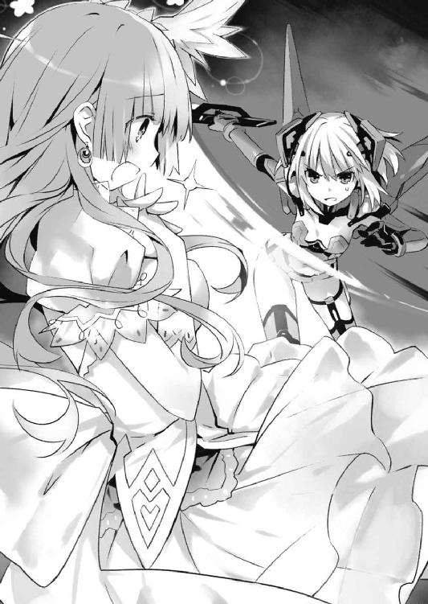
と、赤毛の女が士道に肉薄する寸前で、士道の前に折紙が現れた。
どうやら異常に気付き、〈ディーヴァ〉を放って飛んできてくれたらしい。折紙のレイザーブレイドと女の武器がぶつかり合い、激しく火花を散らす。
「あらラ？ 一体なんの真似？」
「それはこちらの台詞。彼は精霊ではない。一体何をしようとしていたの」
「アナタには知る権利がありませン。上官命令でス。そこを退きなさイ」
「......了承しかねる。納得のいく説明を」
「わからない人ねェ」
再び、女が武器を振り上げる。折紙も応戦するようにレイザーブレイドを振るった。
先ほどとは比べものにならない衝撃波が、周囲に撒き散らされる。
「う、うわ......ッ！」
次の瞬間士道の視界は暗転し──
気づいたときには、仄暗い艦内に戻っていた。
第二章 メイル／フィーメイル
いつの間にか士道の姿が消えてから、およそ一時間後。
結局いつも通り精霊を倒すことも捕獲することもできないまま逃げられ、ＡＳＴの面々は駐屯地に舞い戻ってきていた。
「............」
だが......なぜだろうか。折紙は妙な違和感を覚えていた。
通常、精霊に逃げられるというのは、精霊が隣界に消失することを示す。だが、今日に限っては、精霊〈ディーヴァ〉の身体が虚空に消えていく瞬間を目撃した者が一人もいなかったのである。
凄まじい大声を発され、皆が一瞬怯んだ隙に、精霊の姿が見えなくなっていたのだ。辺りに霊波反応がなかったため消失したと判断されたが......それはまるで、こちらに隙を作り、自分の意思で身を隠したように思われてならなかったのである。
だが。折紙は小さくかぶりを振ると視線を鋭くした。
今はそれよりももっと、重要なことがあるのである。
随意領域解除後の倦怠感が薄れてから、折紙はゆっくりと足を進めると、何やら部下と話をしていたジェシカの前に立った。
「一体どういうつもり？」
ジェシカが片眉を上げ、折紙に視線を返してくる。
「どういうつもりって言うト？」
「とぼけないで。なぜあのとき士道を攻撃しようとしたの」
「あラ。お知り合いだったのかしラ？」
「答えて」
折紙が詰問すると、ジェシカは大仰に肩をすくめた。
「一般人が戦場に紛れ込んでいたから保護しようとしただけヨ。何か問題でモ？」
「............」
折紙は射貫くような視線でジェシカを睨み付けた。それが嘘であることは明白だった。折紙が、ジェシカの挙動を見誤っていたとは思えない。
実際、ジェシカも折紙に自分の言葉が信じて貰えるだなんて最初から思っていないのだろう。だが、そう言いさえすれば、折紙がそれ以上ジェシカのことを追及できないこともわかっている様子だった。実際、ジェシカが士道に攻撃を加えようとした証拠など何も残っていないのだ。
「話は終わりヨ。消えなさイ。私たちは忙しいノ」
ジェシカが鼻を鳴らしながら言ってくる。しかし折紙はそのまま言葉を続けた。
「あなたたちが帯びている特殊な任務に関係があるの？」
「............」
折紙が言うと、ジェシカとその部下がぴくりと表情を動かした。
そして、鬱陶しげに舌打ちをし、ぐいと折紙の前髪を掴んでくる。
「く......」
「──小娘ガ。小賢しい知恵回そうとすると長生きできないわヨ？」
吐き捨てるように言って、折紙を突き飛ばしてくる。未だ疲労が抜けきっていない折紙は、その場に尻餅を突いてしまった。ジェシカの部下たちがくすくすと笑う。
「あんたら！ 何してんのよ！」
そこで騒ぎに気付いたのだろう。燎子が泡を食って駆けつけてくる。
ジェシカはとぼけるように顔を逸らすと、部下を伴って歩き去っていった。
「ちょっと、大丈夫？ 折紙」
「......問題ない」
折紙は差し出された燎子の手を取って立ち上がると、小さくなっていくジェシカの背中を憎々しげに睨み付けた。
◇
「なんで土曜に......こんな......」
両脇を十香と折紙に挟まれ、連行されるように歩みを進めながら、士道は眠たげなあくびをこぼした。
九月九日。精霊〈ディーヴァ〉との遭遇から一晩が経過した日である。
あのあと〈フラクシナス〉では、不可解な精霊の好感度低下についての会議が行われていた。どうせ明日は学校が休みだからと、士道も深夜にまで及ぶその会議に参加させられていたのだが......
士道はしばしばする目を擦りながら、もう一度あくびを漏らした。
そう。今日の朝になって急に亜衣から電話があり、今日は天央祭の各校合同会議があるからよーろしーくねー！ と告げられたのである。
「おい貴様、シドーに寄りすぎだぞ、少し離れろ」
「あなたこそ離れるべき。あなたの体臭は耐えがたいレベルと士道も言っている」
「な、なんだと!?」
右から十香、左から折紙の声が響き、寝不足で気怠い士道の頭をビリビリと震わせる。
「十香......折紙、ちょっと静かにしてくれ......頭に響く」
「うむ、静かにしろ鳶一折紙。シドーも貴様がうるさいと言っているぞ」
「あなたの呼吸音と心臓の鼓動が耳障り。今すぐ静かにするべき」
「いや、だから......」
士道は大きなため息を吐いた。
ちなみに今、目的地である合同会議会場に向かっているのは士道、十香、折紙の三人のみであり、実行委員であるはずの亜衣麻衣美衣の姿はない。なんでも三人は一日目のステージ部門でバンド演奏をする予定らしく、その練習で来られないのだという。
大丈夫大丈夫、ちゃんと代役立てといたからー、と言われて待ち合わせ場所に行ってみたところ、そこには縄張り争いをする猫のように睨み合った十香と折紙がいたのである。
と、士道が頭中で愚痴りながら背の高い石塀を過ぎたところで、合同会議の会場である学校が見えてきた。
赤煉瓦で構築された荘厳な校門から、鉄製の飾り格子が左右に広がり、その合間から青々と茂った生け垣を覗かせている。
そしてそこから、これまた赤煉瓦が敷き詰められた道が一直線に伸び、その先に、まるでお城とも見まごうような立派な校舎が見て取れた。部活動や天央祭の準備のためだろうか、休日だというのにちらほらと生徒の姿も見受けられる。
私立竜胆寺女学院。名家の子女も数多く通う、天宮市屈指の名門校である。
と、左右から休みなく響いていた口喧嘩が不意に途絶えた。見やると、十香が校舎を見上げていることがわかる。
「おお......凄いなシドー。これも学校なのか？」
「ああ、そうらしいな。まあ、とにかく入ってみようぜ」
「うむ！」
「............」
十香が元気よく返事をし、折紙が無言でうなずく。
士道たちは守衛さんに生徒手帳を見せてから敷地内に入った。来賓用の昇降口から校舎内に入り、事務局で入校許可証を受け取ってから廊下を歩いて目的の会場に向かう。
「第二会議室。ここか」
言って、扉を開ける。部屋の中には既に様々な制服の生徒たちが何人も揃っていた。まだ会議の開始まで時間があるのだろう、長机が四角く組まれ、高校の名前が書かれたプレートが立てられてはいるものの、席に着かず談笑している生徒も多い。
とはいえ、昨日実行委員に就任したばかりの士道に顔見知りがいるはずもない。手早く自分たちの席を探して椅子に腰掛ける。
と、それからすぐに、コンコン、と会議室の扉がノックされた。
「ん？」
士道が首を捻っていると、部屋にいた各校の生徒たちが一斉に顔を上げた。
「な、なんだ、一体」
皆の反応に、思わず身構えてしまう。一体何がやってきたというのだろうか。
だが、扉の向こうから聞こえてきたのは、拍子抜けするような優しげな声だった。
『失礼しまぁす』
そんな一言が聞こえてから、ゆっくりと扉が開いていく。
静々と入ってきたのは、濃紺のセーラー服に身を包んだ少女たちの一団だった。
そして、まるで大名行列を出迎える民衆のように、二列に並んで頭を垂れていく。
士道が呆気に取られていると、その少女たちが作った道の真ん中を、一人の生徒が女帝のごとく悠然と歩いてきた。
長い髪をゆったりと一つに纏めた少女である。光に透けて紫紺に輝く、色素の薄い髪。銀色に輝く瞳。周囲の少女たちと揃いのセーラー服に身を包んではいるものの、その身から放つ圧倒的な存在感が、彼女の輪郭をくっきりと浮かび上がらせていた。
「な......」
「............っ！」
その姿を見て、士道と折紙は息を詰まらせた。
確かに美しい少女ではあった。町中でこんな美人とすれ違ったなら、思わず振り向いてしまうかもしれない。
だが、違う。そんなことではない。
「──こんにちわー。よく来てくれましたねー、皆さん」
少女がのんびりとした口調でそう言って、ぺこりとお辞儀をする。
その声を聞いて、士道は確信した。
その、少女は。
「竜胆寺女学院、天央祭実行委員長、誘宵美九ですぅ」
昨日士道が遭遇した精霊──〈ディーヴァ〉だった。
◇
『さー、いきますよぉー。皆さんついてきてくださーい』
〈フラクシナス〉艦橋のスピーカーからそんな間延びした声が聞こえてくると同時、軽快な伴奏と甲高い歓声が鳴り響いた。
艦橋正面のメインモニタには今、フリルに飾られた衣装を纏ってステージで歌い踊る少女の姿と、その前方に広がった紫色のサイリウムの絨毯が映し出されている。
映像は粗く、どう見ても公式販売されているライブＤＶＤなどではなかった。それもそのはず、どうやら中津川が様々なツテを駆使して手に入れた盗撮映像であるらしい。
「............」
艦長席の隣に立った士道は、呆然とその映像を見つめていた。
正しくは、画面中央で楽しげに舞い踊り、美しい声音を響かせる少女の姿を。
それは、間違いなく今日顔を合わせた竜胆寺の女子生徒であり──昨日遭遇した精霊〈ディーヴァ〉のものだった。
「誘宵美九......ね。まさか彼女が精霊だったなんて」
士道の隣──艦長席に座りながら映像を眺めていた琴里が、ぽつりと呟く。
「誘宵美九のこと知ってたのか？」
「まあ、名前くらいはね。あとはＣＭやドラマの主題歌なんかで曲もいくつか」
「そ、そうか......」
士道は頬をかいた。殿町が言っていたこともあながち間違いではなかったらしい。
しかし琴里はそんな士道の様子に気づいたふうもなく、手元に置かれていたプロフィールシートに視線を落とし、難しげに眉を歪める。
「......デビューは今からおよそ半年前。『聞く麻薬』とさえ言われる美声と圧倒的な歌唱力で驚異的なヒット曲を連発するも......テレビや雑誌等には一切姿を現さない謎のアイドル......って、こういうのも偶像っていうのかしらね？」
そこまで読み上げたところで、琴里は額に手を置いてふうと吐息した。
「精霊がアイドル......しかも最低でも半年以上前からこっちの世界に溶け込んで生活してたっていうの？ こんな活動をしながら？ はっ、狂三なんて目じゃないわね」
琴里が発した狂三の名に、士道はぴくりと頬を動かした。以前、人間として士道のクラスに転入してきた精霊である。
だが、今はあのときにはなかった選択肢が一つ、増えていた。
「なあ、琴里みたいに、〈ファントム〉に霊力を与えられた元人間ってことはないのか？」
「......ふむ」
士道の言葉に、琴里がぴくりと眉を動かす。
「可能性は否定できないわ。確かにそれなら、こちらの世界にとどまっていても不思議じゃないし。──ただそうなると、昨日の空間震の理由がわからなくなってくるわね」
「あ......」
言われて、士道は目を見開いた。
空間震とは、精霊が隣界からこちらの世界に出現する際の余波だ。狂三などのように、自分の意思で空間震を発生させることのできる精霊も存在するようだが......こちらの世界で生活を営んでいるはずの美九に、そんなことをする理由があるとは思えなかった。
後頭部をかきながらむうとうなる。
士道自身、自分の意見にそこまで自信があったわけではないが、それが否定されてしまうとまた振り出しである。
それに......最大の問題は他にあった。
「結局まだ、好感度が急下落した理由もわかってないんだもんな......」
そう。結局夜通しの会議の甲斐もなく、その原因は未だ掴めていないのだった。
だが、そんな士道の懸念に、琴里は小さく首を振って見せた。
「実はそっちについては、確実とは言えないまでも、一つ仮説が立ったの」
「え？ そうなのか？」
「ええ。昨日のモニタリング結果を見て気にはなっていたのだけれど、今日〈ディーヴァ〉イコール誘宵美九の情報を得て確信に変わったわ」
「い、一体何が原因だったんだ？」
士道が食い入るように問うと、琴里がそれを落ち着けるように手を広げてきた。
「順を追って説明するわ。──令音」
「......ああ。これを見てくれ」
と、琴里の左方に座っていた令音が答えたかと思うと、メインモニタで上映されていた美九のライブ映像の上にグラフのようなものが表示された。曲に合わせて小刻みに身体を動かしていた中津川が「ああっ！」と悲鳴じみた声を発し、琴里に睨まれて黙りこくる。
士道はそんなやりとりに苦笑してからグラフに目を向けた。
「これは？」
「......ああ、昨日の美九の精神状態を表したものだよ。真ん中くらいまでの位置が、君と会話していた際のものだ」
言われた箇所を見やる。......ジェットコースターもかくやというような急降下っぷりだった。最後の方などもう目盛りが見えなくなっている。
「......想像以上に嫌われてますね、俺」
「......まあ、とりあえず今それはおいておこう。その続きを見てくれ」
令音の指示に従ってグラフの続きに目をやると、一度はストップ安状態にまで落ち込んだ機嫌が、急に上昇し始めていた。
「これは......」
「......ちょうどＡＳＴが現れたときだ」
「この最高値に達してるのは」
「......鳶一折紙に触れた瞬間だね」
「ええと......それって」
士道が考えを巡らせていると、琴里が口から飴を取り出し、ビッと艦橋下段に向けた。
「中津川」
名を呼ばれた中津川が、ビシッと直立する。
「はっ！ 彗星の如く登場した革命的アイドル・誘宵美九たんですが、本当に人前に姿を現さないのです。活動といえば、定期的にリリースされるＣＤと、一部のファンだけを集めて行われるシークレットライブのみ......今日本でも屈指の有名人だというのに、その顔を見たことがある人はごく僅かなのです。それこそ──実在が疑われるくらいに」
「はあ......徹底してますね」
「徹底なんてものじゃありませぬ。この情報化時代の中、顔写真の一枚すら出回っていないのですよ？ これはもう異常なレベルです。このライブ映像を手に入れるのにどれだけ苦労したと思っているのですか」
中津川が熱っぽく言ってくる。士道は辟易するように頬をかいた。
「でも、アイドルなんですよね？ なんでまたそんなに人目を避けるような真似を......」
「ネット界隈の情報になりますが......なんでも、美九たんは凄まじいほどの男嫌いであり、握手なんて耐えられないレベルらしいのですよ。例のシークレットライブは女性ファンしか入れないという話でござります」
「女性ファンしか......？」
士道が聞き返すと、中津川が熱っぽく鼻息を荒くしながら続けてきた。
「そう。しかも噂によると、ライブ後、お気に入りの女性ファンをお持ち帰りしていたこともあるそうなのですよ」
「そ、それって......」
「そう。つまり」
琴里がチュッパチャプスを口に戻し、ピンと指を立てる。
「誘宵美九は──女の子が大好きな、いわゆる百合っ子である可能性があるわ」
「......な──」
士道は絶望的な心地でのどを絞った。
いや、別に個人の嗜好をどうこう言うつもりはないのだ。士道ももう高校二年生。脊椎反射的に自分と異なるものを排斥するような幼稚な真似はしないし、この世の中に様々な愛の形があることも理解はしている。
だが、精霊が女の子にしか興味がないのはまずい。非常にまずい。
単純な理由だ。士道は、〈ラタトスク〉は、精霊の力を封印して安全な状態にすることによって、空間震を防ぐと同時に精霊を保護しようとしている。
その際必要なのが士道の力──接吻を介して霊力をその身に封印する能力なのである。
しかも、ただ唇と唇を触れさせるだけでは意味がない。少なくとも、キスを拒まれないくらいまで好感度を高めなければならないのだ。
「そ、それじゃあどうしようもないじゃねぇか......！」
士道は絶望的な心地でうめいた。今まで攻略が困難な精霊は何人もいたが、さすがに生物学的な隔たりを持ち出されては手の施しようがない。
しかし、そんな士道の反応に、琴里は不思議そうに目を丸くした。
「何言ってるのよ。あなた天央祭の実行委員なんでしょ？ っていうことは、天央祭開催までの間は美九と会話する機会があるってことじゃない」
「そんなこと言ったって、美九は男に興味がねえんだろ？」
「興味がないというより、嫌悪感を抱いていると言った方が正しいわね」
「余計駄目じゃねえかよ！」
士道が叫ぶと、琴里はやれやれと肩をすくめてきた。
「私が何の考えもなくそんなことを言うと思ってるの？ 対策くらい考えてあるわ」
「対策......？」
士道の言葉に琴里がうなずき、パチンと指を鳴らす。すると、どこからともなく神無月が現れた。......なぜか、ずぶ濡れの状態で。
「神無月さん......？ なんで濡れてるんですか？ しかもなんか生臭いんですけど」
「いやはっは、少々スイミングを」
あっけらかんとした調子で神無月が笑う。士道は頬をかきながら話を戻した。
「で、対策ってのは......」
「これです」
答えたのは神無月だった。背後に手を回していた手をバッと士道の方に出してくる。
「............」
その手に握られていたものを見て、士道は一瞬その場に凍り付いた。
神無月が持っていたのは、士道の通う来禅高校の制服だった。
──ただし、女子の。
一瞬「おいおい神無月さんついにやっちまったか......」と思った士道だったが、すぐ違和感に気づく。その制服は新品であり──随分とサイズが大きかったのである。
そう。士道くらいの身長の女の子が着たならば、ぴったりかもしれなかった。
「......ええと」
何やら不穏なものを感じて、士道は一歩後ずさった。が、そこで背中が何かに触れる。
次の瞬間、士道はガッと両腕を拘束された。首を回して見やると、背後に〈早すぎた倦怠期〉川越と、〈社長〉幹本がいることがわかる。
「ちょ......っ、な、何してるんですか......？ は、離してくださいよ」
士道が顔中に脂汗を浮かばせながら言うと、今度は前方──神無月の両サイドに、両手の指に様々な化粧道具を投擲武器のごとく挟み込んだ〈藁人形〉椎崎と、数種類のウィッグを手にした〈保護観察処分〉箕輪が現れた。
「な、なんですかそれっ！」
たまらず叫ぶ。だがそんな士道の声には構わず、神無月が二人を引き連れながらジリジリと距離を詰めてきた。
「大丈夫、怖くありませんよ。最初は少し足下がスースーするかもしれませんが、なに、そのうち快感に変わります。先輩が言うのですから間違いありません」
言って、ニィ、と唇を歪める。
「こ、琴里......？」
士道は命乞いをする敗残兵のような調子で琴里に目を向けた。
すると琴里はにっこりと愛らしい笑みを浮かべ、
「グッドラック。──おねーちゃん」
なんの躊躇いもなく死刑宣告を下し、ビッと親指を立ててきた。
三時間後。
「......だ、誰だおまえ！」
鏡を見ながら、士道は思わず声を上げていた。
それはそうだ。鏡の中で自分を見返してきているのは、まるで見覚えのない少女だったのだから。
髪は背をくすぐるくらいに長く伸ばされ、可愛らしい髪飾りなぞつけられている。顔にはうっすらとファンデーションが施され、マスカラとビューラーでボリュームアップされた目は、桜色に色づけられた唇と相まって、もはや男のものとは思えない。
ちなみに胸には詰め物をし、ブラも着装させられている。手足はうぶ毛に至るまで完全に脱毛されており、つるつる美肌にされていた。
確かに女の子にしては長身かもしれなかったが、もともと士道が比較的女顔だったのも手伝ってか、もはやもとが男などとは言われなければわからなかった。否、人によっては言われても冗談と笑う者もいるかもしれない。
少なくとも、一目で士道と見抜ける者はそういないだろう。
「ひゅう、存外似合ってるじゃないの」
琴里が目を丸くしながら言ってくる。士道は恨みがましい視線を返した。
「......てめえ、覚えてろよ」
「女の子はそんな言葉遣いしちゃ駄目よ。そうそう、仕上げにこれをつけてちょうだい」
「あ？」
士道は眉をひそめながら、琴里から絆創膏のようなものを受け取った。
「それをのどに貼り付けてみて」
「ん......？ こうか？」
言われるがままにそれをのどにぴたりと貼り付ける。すると、
「これがどうか......って、な、なんだこの声!?」
士道は混乱に思わずのどを押さえた。
シールを貼った瞬間、士道の声が可愛らしい女の子のそれに変化したのである。
「どうよ。〈ラタトスク〉の先端技術が可能にした超高性能変声機よ。数値を弄れば、名探偵の声真似だってできるわよ」
「いや用途がわかんねえけども」
「まあ、何はともあれ上出来よ。これなら少なくとも、士道を男だと思う人はそういないでしょうよ」
琴里がふふんと鼻を鳴らすと、次いで居並んでいた他のクルーたちもうんうんとうなずき始めた。
「いや、我ながらいい仕事しました。可愛いわよ士道くん」
「くっそ、男の子なのになんでこんなに化粧乗りいいのよ。これが若さか......」
「はっはっは、息子の嫁に欲しいくらいですよ」
「ね、ねえ、五万円でどうかな？」
「予想以上です士道くん。今度いいお店を紹介してあげましょう。何、心配はいりません。スタッフは皆仲間です」
すぱん、すぱん！ と幹本と神無月の頭を叩き、琴里がメインモニタに映し出された誘宵美九を一瞥する。
「さ、あとはこの士道を美九が気に入ってくれるかどうかだけれど......士道、次に彼女と会えるのはいつ？」
「え？ あ、ああ......」
士道は指を折って日付を数えた。
「確か次の月曜から、放課後に設営準備が始まるはずだから、そのときには多分......」
「そ。ふむ......あんまり猶予はないけど仕方ないわね」
琴里はバッと身を翻すと、士道とクルーに手をかざした。
「明日一日で士道は、自分一人で女の子モードに変身できるように訓練なさい！ 椎崎、箕輪は化粧を教えてあげて。それと、会話法と女の子らしい仕草も学ぶこと！ 月曜の放課後からは本格的な攻略に入るわ！」
そして、高らかに宣言する。
士道は大きなため息を吐いてから、「了解」と呟くように言った。
◇
幾度となく聞いた終業チャイムの音が、士道の鼓膜を震わせる。
いつもなら授業からの解放を示す合図であるそれは、しかし今の士道にとっては空間震警報と同ランクの警戒音にしか聞こえなかった。
なぜなら今日は九月一一日、月曜日。
これから一般の生徒たちは各校で天央祭の準備に入り──実行委員は、会場である天宮スクエアに赴いてエリアの確認をせねばならないのである。
『──さ、時間ね。早速準備してちょうだい』
右耳に装着していたインカムから、琴里の声が聞こえてくる。
「......あいよ」
士道はのろのろと椅子から立ち上がると、ロッカーに向かって歩き出した。
「ぬ？ シドー、どこへ行くのだ？ 天央祭の会場を見にいくのではないのか？」
と、そんな士道の行動を不思議に思ったのか、十香が声をかけてくる。
「ああ......ちょっとな。先に準備しててくれ」
「む？ う、うむ......」
十香は今ひとつ腑に落ちない様子だったが、とりあえずはうなずいて、士道の背を見送ってくれた。
同じように折紙がジッと視線を送ってきていたが、気づかないふりをして教室から出、ロッカーから大きな荷物を取り出して校舎の奥へと歩いて行く。
「ここなら......大丈夫だろ」
そして校舎の最奥に位置する男子トイレに足を踏み入れると、個室に入り鍵を掛けてから、肩掛けにしていた鞄の口を開ける。
中には、綺麗に畳まれた女子の制服が収められていた。......こんなところを誰かに見られたらマジで人生終わるなあ、なんてことを考えながら、それを取り出し、いそいそと着替え始める。ちなみに、少しでも身体のラインが隠せるようにカーディガン装備である。多少暑いが背に腹は代えられない。
次いで、鏡を取り出し、昨日一日でたたき込まれた化粧術を駆使して顔を飾っていく。
そして最後にウィッグと変声機を取り付け、トランスフォームは完了した。
「よし......こんなとこだろ」
『士道、口調』
「......こんなところかしら」
琴里に言われ、女口調でそう言う。......なんだか死にたくなってきた。
だが、ネガティブになってもいられない。自分に自信を持っていなければできるものもできなくなってしまうだろう。
士道は今まで自分が着ていた服を鞄にしまい込むと、それを背負って個室の扉を開けた。
と、小便器の方に人影があった。殿町だ。
「おう、殿町」
いつも通り軽い調子で声をかけながら殿町の背後を通り過ぎる。
「おう......って、んん？」
だが、殿町の反応を見て、士道は「あ」と小さな声を発した。
「き、君......誰？ な、なんで男子トイレに......」
殿町が呆然と言い、すぐに顔を赤くして士道に背を向ける。
「あ、い、いや......おほほほほほ」
士道は誤魔化すように笑うと、そのまま全速力で駆け出していった。
「なんで今日に限ってこんな辺鄙な場所で用足してやがんだよあいつは......！」
が、殿町が追ってこないことを確認すると、士道はすぐにスピードを緩めた。......走っているとスカートがひらひらして、なんだか気持ち悪かったのだ。
「......女子ってのはよくこんなスカスカしたの腰に巻いただけで外歩けるな......少し大股で歩いただけでパンツが見えちまうだろこれ......」
ちなみに今、士道はスカートの下にショートパンツを装着していた。......その中身については、まあ、ノーコメントとしておく。
『いい機会だし、少しは女の子の苦労を知っておくといいわ。今後のためにもね』
「......へいへい」
士道は気のない返事をすると、そのまま昇降口の方に歩いて行った。
そこには既に亜衣麻衣美衣の三人組が揃っており、何くれと無いおしゃべりをしている。
士道はごくりと唾液を飲み下すと、緊張を抑えるように胸に手を置いた。......ふにょん、という妙な感覚。そういえば今は〈ラタトスク〉謹製の超高精度胸パッドを装着しているのだった。そのあまりにリアルな感触に、少し顔を赤くしてしまう。
『まったく......先が思いやられるわね。とりあえず、手はず通りにいきましょ』
「お、おう」
士道は気を取り直すようにブンブンと首を振って三人組の方に向き直った。
深呼吸をしてから、その背に声をかける。
「あ、あのっ」
「ん？」
「え？」
「ほ？」
思い思いの声を発しながら、三人が振り向き、士道のことをまじまじと見てくる。──さすがにばれるだろうか。もしばれたら「五河士道は女装癖」とかなんとか噂されるのだろうかとか、ネガティブな想像が頭を駆け巡る。
士道が緊張しながら言葉を待っていると、三人は不思議そうに首を傾げてきた。
「どーしたの？ 何か用？」
「背ぇ高っ、モデルさんみたーい」
「カーディガンとか暑くない？ 冷え性？」
どうやら士道と気づかれてはいないらしい。とりあえずはほうと息を吐く。
「その、山吹さん、葉桜さん、藤袴さんですよね、天央祭実行委員の」
「なぬ、おぬし、どこでその情報を!?」
「まさか敵国の間者か!?」
「何が狙いだ！」
と、何やら変なポーズを取りながら言ってくる。とはいえ、本当に警戒しているような様子はなかった。力なく笑いながらあとを続ける。
「えっと、五河士道から伝言なんですけど、今日の実行委員はお休みさせて欲しいと......」
「なんだとゴルァ！」
「あのヤロウ逃げやがった！」
「火を持て！ 魔女が出たぞ！」
なんだか明日火炙りにされそうだったが、とりあえず今は聞かなかったことにしておく。
「あ、あの......それで、俺──じゃなくて私が代わりに行くよう言われまして。もし問題ありませんでしたら、一緒に連れて行ってもらえませんか？」
「え？」
亜衣が、キョトンと目を丸くする。
「んー、そりゃ私たちは構わない......っていうかむしろ助かるくらいだけど......」
「そもそもあなたどちら様？ 五河くんとどーいうご関係......？」
「そういえばさっき呼び捨てしてたね。やだ、もしかして十香ちゃんにライバル出現？」
と、三人がにわかに色めき立ち、ひそひそと話を始める。士道は慌てて割って入った。
「い、いえ、私はそういうのではなくて......そう、従兄妹です、イトコ！」
「従兄妹......ねえ。何組？ お名前は？」
「え？」
不意に問われ、士道は目を泳がせた。
「一組......です。名前はその、五河......しど美......じゃなくて、ええと......士織です」
咄嗟に適当な偽名を名乗ると、三人はスクラムを組むように会議を始めた。
そして数秒後、ガバッと円陣を展開すると、ポンポンと馴れ馴れしく肩を叩いてくる。
「いろいろ腑に落ちない気もするけど、まあいいでしょ」
「よろしくね士織ちゃん」
「いっぱい働いてもらうかんねー」
「は、はい......！」
どうやら第一関門は突破したらしい。安堵の息を吐く。
と、そのとき。背後から何やらやかましい声が聞こえてきた。
「どうせ貴様の仕業だろう！ 言え、シドーをどこへやった！」
「それはこちらの台詞。隠し立てすると後悔することになる」
振り返るまでもない。十香と折紙である。まだ集合場所に現れていないのが不思議だったが、どうやら士道を探していたらしい。
「おー、十香ちゃーん、鳶一さーん。こっちこっちー」
亜衣が手を振ると、十香と折紙が視線をこちらに向けてきた。
「......うぬ？」
と。士道の姿を目にした十香が、目を丸くする。
そして何やら目を伏せ、匂いを嗅ぐようにひくひくと鼻を動かしてきた。
数秒後、確信を持った顔でしっかと士道の目を見つめてくる。
「何をしているのだ、シ──」
「......っ！」
士道は慌てて十香の口を塞ぐと、亜衣麻衣美衣に聞こえないような小さな声で十香の耳元に囁きかけた。
「......すまん、十香、ちょっと訳ありでな。知らないふりをしてくれないか？」
「ぬ......？ そ、そうなのか。うむ、わかったぞ」
十香は小さくうなずくと、やたらと大きな声を発した。
「う、うむ！ よろしくだ、シドーではない女！」
「......は、はい、よろしくお願いします」
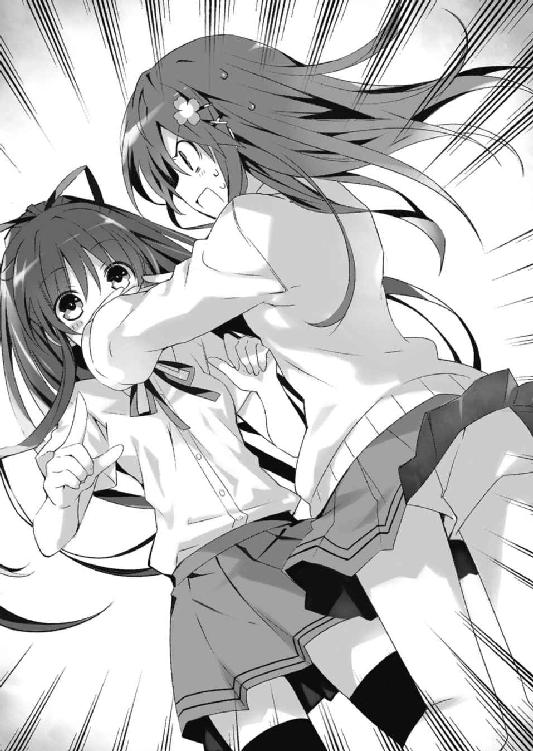
頬に汗を垂らしながら握手を交わす。三人娘は少しだけ訝しげな顔をしたものの、まあいつもの十香であるというところで納得したのだろう、深く追及はしてこなかった。
と──
「......!?」
士道は思わず目を瞑った。
理由は単純。突然下方からカシャッという音とともにフラッシュが焚かれたのである。
「えっ、えっ？」
わけがわからず士道が目を白黒させていると、断続的にその音が響いてきた。
不審に思ってそちらを見やると......すぐにその犯人がわかる。
どこから取り出したのか、小型のデジタルカメラを構えた折紙が、妙に格好いいポーズを取りながら、連続してシャッターを切っていたのだ。無論、被写体は士道である。
いつものごとく無味乾燥な表情のままなのだが、なぜだろうか、少し興奮したように鼻息を荒くしている気がした。
「あ、あの......」
「動かないで」
言って、折紙がまたもシャッターを切る。右から、左から。ときに冷静に、ときに情熱的に。プロ顔負けの迫力で一心不乱に士道の姿を写真に収めていく。
「目線をこちらに」
「え、ええと......」
「いい。とてもいい」
「その......」
「一枚脱いで」
「こ、困ります」
士道としてはあまり今の姿を記録に残して欲しくないのだが、それを言ったところで折紙が従うとも思えなかった。恥ずかしそうに顔を背けながら折紙の気が済むのを待つ。
そんな様子を見てか、亜衣麻衣美衣がひそひそと話を始めた。
「ねーねー、鳶一さんて五河くん狙いじゃなかったの？」
「女の子もいけるクチだったの？」
「五河姓なら誰でもＯＫってこと？ ＤＮＡ狙い？」
......などと、言いたい放題言われているのだが、折紙はまったく意に介する様子がなかった。仰向けに横たわると、ぐぐっと士道の両足の間に手を滑り込ませてくる。
「ちょっ、何を......！」
たまらずスカートを押さえてあとずさる。が、折紙がカメラを持っていない方の手でがっしと足を鷲掴みにしてきた。
「こ、この、何をしているのだ！」
さすがに見かねたのだろう。十香が折紙の両足を掴んで、士道から引き離そうとする。端から見たらさぞシュールな光景に違いない。
だが折紙は、その細腕からは考えられないような怪力で士道の足をキープしたまま、カメラからカシャカシャカシャ......と連続した音を響かせてきた。まさかの連写である。
「ちょ、まっ、い、いやああああああッ!?」
士道は顔を赤くして、女の子より（少なくとも折紙より）女の子らしい悲鳴を上げた。
◇
天央祭の会場となる天宮スクエアは、天宮市のちょうど中心あたりに位置する大型コンベンションセンターである。
中央にセントラルステージがあり、その周囲に大型展示場が広がっているという構造になっている。天央祭に用いられるのは主に東ブロックの一号館から四号館だった。
「......それで、琴里。美九はどこにいるんだ？」
念のため小さくした声でインカムに話しかける。
今士道は、二号館の隅で資材の陰に身を隠し、辺りの様子を窺っているところだった。
ちょっとお手洗いに......と場を抜け出したはいいものの、折紙がなぜか目を光らせてあとをつけてきたため、撒くのに時間と体力を食ってしまったのである。
『ようやく一人になれたようね。美九は一号館よ。竜胆寺のブースが設営される場所ね』
「一号館か......了解。今すぐ向かう」
言って、素早く資材の陰から身を躍らせると、皆や折紙に見つからないよう注意しながら一号館の方へと走って行った。
美九の姿は容易に見つかった。一号館の奥の方に紺色のセーラー服に身を包んだ少女たちの集団がおり──その中心に美九が立っていたのである。
「他の生徒と一緒......まあそりゃそうか」
『ま、予想はしていたけど、厄介ね。今近づいていっても女帝様よろしく取り巻きにガードされて直接話せないかもしれないわ。さて、どう動いたものかしら』
「なんとか美九を一人にできないか？ そっちから作業員に扮したクルーでも──」
『！ ちょっと待って、美九が歩き出したわ』
言われて、士道は前方に視線を向け直した。
確かに琴里の言うとおり、美九が竜胆寺の生徒の一団から抜け出し、一人でどこかへ歩いて行くことがわかる。
「なんだ......？ トイレか？」
『とにかく、チャンスよ。あとを追ってちょうだい』
「おう、わかった」
『口調』
「......わかったわ」
そういえば琴里と話すときは完全に男モードに戻っている気がした。土壇場で癖が出ないようにせねばならないと自戒しながら、美九の背を追って歩き出す。
数分ほどあとをつけた頃だろうか、美九は最寄りのトイレを素通りして一号館を出ると、スクエアの中央に位置するセントラルステージに向かっていった。
そしてそのまま観客席を抜けると、『関係者以外立ち入り禁止』と書かれたロープをくぐって、ステージ裏の方に入って行ってしまう。
「あ......」
『追うのよ、士道』
「り、了解」
士道は意を決してロープをくぐると、そのままステージ裏に入っていった。
壁を一枚隔てただけで、辺りの景色が驚くほどに様変わりする。
華やかで煌びやかなステージとは対照的に、なんとも雑多な空間である。薄暗い通路の両脇に様々な荷物が積み重ねられ、もとよりさほど広くない道幅をさらに狭めていた。
躓かないよう注意しながらその道を歩いて行き、ステージに続いていると思しき扉まで辿り着く。
そして、そこから外を覗き込むと。
「あ......」
士道は意図せぬままに小さな声を発していた。ステージの中央に美九が立ち、会場を一望していたのである。
既視感。先日、無人のアリーナで見たのと同じ光景。
これは精霊の迫力なのだろうか。それとも、アイドルのオーラというやつなのだろうか。思わず気圧され、一歩後ずさってしまう。
そんな士道の姿を見てか、インカムからやれやれというため息が聞こえてくる。
『まだ顔も合わせてないのに緊張してんじゃないわよ』
「わ、わかってるよ。──話しかけていいんだよな？」
『ええ。私たちの仮説が正しければ、この前ほどぞんざいな扱いは受けないと思うけれど』
「......もし間違ってた場合は？」
『骨は拾ってあげるわ』
「......おい」
『冗談よ。「誘宵美九は男が嫌い」これはデータから見ても十中八九間違いないわ。でも、「士織ちゃん」が美九のお眼鏡に適うかどうかはまた別の話だし、そもそも士道が男って気づかれる可能性だってある。十分注意してちょうだい』
「お、おう──じゃなくて、注意するわ」
士道は大きく深呼吸をしてから頬を張り、ステージに足を踏み出した。
足音で士道の存在に気づいたのだろう、美九がくるりと振り向いてくる。
「あらー？」
驚いた様子で目を見開き、美九が士道を観察するように全身を睨め付けてくる。
もしかしたら、男とばれるかもしれない。緊張感が士道の心臓を締め付けた。
「あなたは......？」
「え!? お、俺は......」
『馬鹿、士道！』
咄嗟に美九に問われ、思わず『俺』と言ってしまった。美九がキョトンとした様子で首を傾げる。
「俺......？」
「あっ、その、それは......」
士道はしどろもどろになりながらなんとか誤魔化そうとした。ここで男とばれてしまっては何もかもが台無しである。
しかし美九は、士道の焦りに反して優しげに笑って見せた。
「変わった言葉遣いをしますねー。うふふー......でも個性的で素敵ですよぉ」
『......！ 好感度、機嫌、ともに数値をキープ！ 低下していません！』
そんなクルーの声が右耳の鼓膜を震わせる。
『どうやら、士道の男言葉を個性として認識してくれたみたいね。......運がいいじゃない。いいわ、口調はそのままでいきましょう』
「お、おう......」
ほうと安堵の息を吐く。
だが、相手の反応を待っているだけではいけない。士道はとりあえず挨拶を交わそうと口を開こうとした。
しかしそれを遮るように、インカムから琴里の制止が響いてくる。
『──待って。選択肢が出たわ』
メインモニタに映し出された美九と士道の映像の上に、ウインドウが表示される。
①「誘宵美九さんですよね。サインくださいっ！」
②「こんなところで何をしてるんですか？」
③「すいません、今穿いてるパンツ三万円で売ってくれませんか？」
「総員、選択！」
琴里が叫ぶと、すぐさま手元のパーソナルモニタに集計結果が表示された。
最も多いのは──②、そして......意外なことに、③。
「②は......まあ取っかかりとしては妥当なところだけど......なんで③が人気あるの？」
「いや、男だと変質者ですけど、個性的って言ってもらえたばかりですし、士織ちゃんモードならインパクトのある質問の方がいいかと思いまして......」
「最初にキツいワードを放っておいて、相手の反応を見たいところです。ほら、狂三のときも何だかんだで成功したじゃないですか」
クルーの言葉に、琴里は「ふむ......」とあごに手を置いた。
「ま......いいでしょ。確かに美九の許容ラインを定めておきたいところではあるわ」
言って、琴里はマイクを引き寄せ、士道に指示を発した。
「んな......っ、正気かよ」
『今の士道は女の子。あくまで冗談めかしてよ。「変な子」でもいいから認識してもらうのが重要なのよ』
「そ、そういうもんなのか......？」
説明を聞いても今ひとつ腑に落ちないが、これ以上美九を待たせるのも望ましくない。士道は意を決して口を開いた。
「なあ......君」
「はいー？」
「い、今穿いてるパンツ......三万円で売ってくれないか？」
「へ？」
美九がまんまるに目を見開き、首を傾げてくる。そして、澄み切った瞳で士道を見返しながら不思議そうに問うてきた。
「はぁ、なんでです？」
「なんでって......言われると、その」
士道が困ったように口ごもると、美九はふふっと唇を笑みの形にしてみせた。
一見するとにこやかな微笑。しかし士道はビクッと肩をふるわせた。先日まったく同じ表情から、絶え間ない罵倒が零れるのを目撃しているのである。
しかし美九の口から漏れたのは口汚いスラングでも士道の心を折る悪口雑言でもなく、なんとも楽しげな声音だった。
「そぉですねぇ。お金じゃ嫌ですけど、あなたのと交換なら考えてあげますよー？」
「え......えぇっ!?」
不意にそんなことを言われた士道は、思わず顔を赤くしてスカートの裾を押さえた。そんな様子を見てか、美九が可笑しそうに笑う。
「あははー、冗談ですよう。ていうかそれ、私のリアクションじゃないですかぁ？」
「あ、ああ......す、すまん......こっちも冗談だ」
しばしの間、二人で笑い合う。が、すぐにまた沈黙が訪れた。
時間は限られている。士道は何とか会話を広げようと話題を探った。
「──な、なあ」
「はいー？」
「こ、ここって......立ち入り禁止じゃないのか？」
「ふふ、そうですねー。ごめんなさい、ちょっといけないことしちゃいました」
なんて言いながら、いたずらっぽい笑みを浮かべる。そのあまりにチャーミングな仕草に、士道は思わずドキッとしてしまった。
「でも、そうなるとあなたもいけない子ですねー」
「え？ あ......」
そういえばそうである。士道は弁解するように手を振った。
「あ、いや、その。俺は......」
「ふふ、いいですよー」
と。そう言いながら、美九がゆったりとした歩調で士道の方に近づいてくる。
そして互いの息づかいが聞き取れるくらいの位置までやってくると、「しーっ」と士道の前に指を一本立ててきた。
「二人だけの秘密にしましょう？ いけない子同士の約束ですよぉ」
「え......あ、ああ......！」
士道が弾かれるように一歩後ずさってうなずくと、美九はまたも楽しげに微笑んだ。
顔も同じ。声も同じ。目の前にいる少女は、士道が先日遭遇した精霊に間違いなかった。
だが、それを理解してなお、八舞姉妹のように同じ顔の精霊が二人存在しているのではと思ってしまうほどに、今の美九は士道の記憶の中にある冷徹な女帝とは反応が異なっていた。......対象の性別が違うだけでこうも対応に隔たりがあるものだろうか。
士道がそんなことを考えていると、士道の尻を叩くように琴里が声を発してきた。
『しゃんとなさい。油断は禁物よ』
「おう......わかってる」
「？ どうかしましたかー？」
「い、いや、なんでもない......」
さすがに琴里に応答を返すには、美九との距離が近すぎた。インカムから『......ったく』という呆れたような琴里の声が聞こえてくる。
が、今度はそれには返さない。というより、返すような間がなかったといった方が正しいだろうか。美九が、首を傾げながら問いを発してきたのである。
「あなた──その制服、来禅さんですかー？」
「え？ ああ、そうだけど」
「んー......一昨日の会議に来てましたっけー？」
「や......そのときはちょっと、体調が悪くて」
「ああ、そうだったんですかー」
言うと、美九は士道に右手を差し出してきた。
「では、改めましてー。竜胆寺女学院の誘宵美九です。よろしくお願いしますねー。一緒に天央祭を成功させましょぉ」
「お、おう、よろしく！」
右手を差し出し、美九と握手を交わす。美九の手は小さく、少しひんやりとしていた。力を入れすぎないよう注意しながら、軽く手を握る。
「......？」
と、美九が微笑を作ったまま首を傾げてくる。
よく彼女の意図がわからず、同じような仕草で返すと、右耳の鼓膜が鋭く震わされた。
『馬鹿、なんで向こうが自己紹介してるのに名乗らないのよ』
「あ......」
琴里に言われて、慌てて言葉を続ける。
「士織......五河士織だ」
「士織さん、ですかー。いいお名前ですねー」
「あ、ありがとう」
曖昧に微笑みながら答える。すると今度は、美九が握られた手に視線を落としてきた。
「逞しい手ですねー。何かスポーツを？」
「......！ あ、......えと、バレーとかを少々......」
咄嗟に手の皮が厚くなりそうな競技を選ぶと、美九は納得したようにうなずいた。
「ああ、道理で」
「え？」
「背が高くて格好いいなあと思いましてー」
「ああ......はは、あんまり女の子っぽくなくて申し訳ない」
「そんなことないですよぉ。とても可愛らしいと思います」
「......そ、そうか」
褒めてくれるのはありがたいのだが......なんというか、男としては複雑な心境である。
まあお世辞か、もしくは現代の化粧品がそれだけ凄まじい性能を誇っているということで何とか納得しておく。世の男性たちよ、騙されるな。
『......ふむ、悪くない数値ね。これなら大ポカをやらかさない限り大丈夫でしょう。もう少し彼女の反応データが欲しいわ。いくつか質問してみてちょうだい』
「あ、あの、えーと......」
琴里の指示に従い、何か質問を絞り出す。
「美九......は、こんなところで何をしてたんだ？」
問うと、美九は握手を解き、くるりと身体を回して観客席の方を向いた。
「──私ね、ステージが好きなんですよー」
「ステージが......？」
「はいー。みんなが私の歌を必要としてくれる。そんな空間が、たまらなく愛しいんですよー。だから、移動の途中にこの場所を見たとき、つい立ってみたくなっちゃったんです」
「そう、なんだ......」
士道が言うと、美九はまたも可笑しそうに笑った。
「士織さんは珍しい方ですねー」
「え？ な、なんで？」
「──もしかして、私の名前、聞いたことないんです？」
「え......っと」
それは間違いなく、竜胆寺女学院の誘宵美九のことを言っているのではなく、正体不明のアイドル・誘宵美九を示しているのだろう。
士道がどう答えればいいものか決めあぐねていると、美九は小さく首を振った。
「あはは、困らせてしまいましたねー。気にしないでください」
言いながら、美九が踊るような歩調で士道の横を通り過ぎ、袖に向かっていく。
「さ、そろそろ戻りましょー？」
そしてくるりと首を回し、士道に視線を送ってきた。
『本当ならもう少し話しておきたいところだけど......無理に引き留めるのもよくないわね。仕方ない、彼女が他の生徒と合流する前に、次に会うきっかけを作る方向でいきましょう』
「......了解」
士道は琴里の声に小さくうなずくと、美九に向き直った。
「そうだな......戻ろうか。こんなところ、誰かに見つかったら怒られるし」
「いえー、それは別に構わないんですけどねー」
「え？」
士道が首を傾げると、美九が再び指を一本立てて「しーっ」と鼻先の前に立てた。
「せっかくの、二人だけの秘密じゃないですかぁ」
「......！」
不覚にもドキッとしてしまう。きっと顔が赤くなっていることだろう。
そんな士道の心境を知ってか知らずか、美九が微笑み、軽やかな足取りで歩いて行く。
『ほら、いつまでも鼻息荒くしてないで。二人きりでいられる時間はそう多くないわ』
「お、おう......」
士道は心拍を落ち着けるために深呼吸をしてから、美九の背を追って舞台袖に入り、ステージ裏の通路を歩いて行った。
が、慌てて美九に追いつこうと歩調を速めていたためか、士道はステージに向かうときほどの注意を払っていなかった。つまり、何が起きたかというと──
「う、うわっ!?」
慣れないスカートの裾を資材の端に引っかけ、階段から転げ落ちてしまったのである。
「いっててて......」
「だ、大丈夫ですかぁ？」
心配そうに美九が歩み寄ってくる。士道は慌てて、めくれ上がっていたスカートを押さえた。一応ショートパンツを穿いてはいるものの、恥ずかしいものは恥ずかしいのである。
「さ、手を」
「あ、ああ......悪い」
美九の手を取って立ち上がろうとし──士道は眉根を寄せた。
「つ......っ」
どうやら手を擦り剥いていたらしい。小さな痛みに、思わず手を引っ込めてしまう。
「大変ですー」
美九は痛ましそうに眉を歪めると、ポケットからレースのついたハンカチを取り出して、士道の手に巻いてきた。
「そんな、汚れちまうよ。これくらいの傷......」
「何言ってるんですかぁ。バレーの選手が手の怪我を軽く見ちゃいけませんよー。......今はこんな処置しかできないですけど、戻ったらすぐ傷口を消毒してくださいねー？」
「あ......ありがとう」
「いいえぇ。手をどうぞー」
傷を負っていない方の手で美九の手を掴み、その場に立ち上がる。すると美九はようやく安堵した様子を見せ、士道を先導するように先を歩いて行った。
それと同時に、ふうという吐息が聞こえてくる。
『あらら、見事にエスコートされちゃってるわね』
「ぐ......」
『別に駄目とは言ってないわよ。今回に限っては士道は女の子なんだもの。反応から見るに、美九は意外と主導権を握りたがるタイプみたいだしね』
ふふんと鼻を鳴らし、琴里が続ける。
『それに──幸運にも次に会う口実もできたしね。もし意図的に転んだのだとしたら褒めてあげたいくらいよ』
「え？」
『あとで説明するわ。いいから今は美九を待たせないように』
「む......了解した」
確かに琴里の言うとおりである。士道は今度は転ばぬよう注意を払いながら通路を抜け、立ち入り禁止のロープを越えてセントラルステージの観客席に舞い戻った。
「すまん、助かった」
ぺこりと頭を下げ、美九に謝辞を述べる。美九は優しげに笑いながら手を振った。
「いえいえ、気にしないでくだ──」
が、美九がそこで言葉を切る。
一瞬不思議に思うも、理由はすぐに知れた。いつの間にそこにいたのか、折紙が美九と士道の間に割って入ってきたからだ。
「離れて、士織」
士道を守るように手を広げながら、キッと鋭くした視線を美九に向ける。
「あれー、あなたは......ああ、あのときの。そういえばあなたも来禅高校でしたねー」
と、折紙に睨み付けられた美九が、何かを思い出したように眉を上げる。
『あのとき』というのが、一昨日の合同会議のことでないのは明白だった。恐らくはその前──空間震のときのことだろう。
「一体なんのつもり」
「人聞きが悪いですねぇ。私はあなた方に危害を加えるつもりはないですよう」
「そんなことを信じるとでも」
折紙が言うと、美九は困ったように笑った。
しかし折紙は微塵も油断を解かないまま、ちらと士道の方に視線を向けてくる。
「士織、その手は？」
怪我をした士道の手を見てか、折紙の声に微かに険がこもる。
もしかしたら士道が美九に怪我をさせられた、もしくは美九のせいで傷を負ってしまったと思っているのかもしれない。士道は誤解を解こうとブンブンと首を振った。
「違うんだ、これは──」
「士織さん」
と、士道が言葉を発そうとすると、美九がそれを制止してきた。
先ほどと同じように人差し指を立て「秘密ですよ」というようにウインクをしてくる。
「あ......」
「......どういうこと？」
折紙が少し機嫌悪そうに言うと、美九はうふふと笑った。そしてそのままスカートの裾を翻し、一号館の方に歩き去って行ってしまう。
「............」
折紙は未だ納得がいっていないといった様子で美九の背を睨め付けていたが、それを追うつもりはないようだった。
その代わり、美九の背が見えなくなってから、ぐりんと士道に顔を向けてくる。
「説明を求める」
「え、ええと......」
なんだか、これからが大変そうだった。
◇
次の日の放課後。
士道は、美九の下校を待って竜胆寺女学院の校門前に立っていた。
『──士道、聞こえる？ 竜胆寺も授業が終わったわ。そろそろ来るはずよ』
「あいよ」
右耳のインカムから聞こえてくる琴里の声に返し、士道は染み抜きと洗濯が済まされたレースのハンカチをポケットから取り出した。
そう。琴里の言っていた美九との接触方法とはこれのことだった。
確かに、借りたハンカチを返すという名目であれば言い訳が立つ。そこで受け取られてはい終了となってしまう可能性も無論あったが......そこは〈ラタトスク〉の指示と士道の機転でどうにかするしかない。
美九が校門から出てくるのをじっと待ち構える。
とはいえ、セーラー服の女子生徒たちの中に一人別の制服を着た他校の生徒がいるものだから、いやに注目を集めてしまっていた。落ち着かない様子でスカートの裾を下に引っ張りながら足をすり合わせる。
『何よ、トイレ？』
「......違えよ」
デリカシーのない琴里の言葉に半眼で返す。
「ていうか、美九は天央祭の実行委員なんだから、放課後も仕事があるんじゃ......」
『余計な心配してんじゃないの。ちゃんと調査済みよ。確かに美九は実行委員だけど、週一回は必ず、お気に入りの女子を自宅に呼んでティータイムを楽しむことがわかってるわ』
「はあ、優雅なことで」
と、士道が言った瞬間、校舎の方から生徒たちの集団が歩いてくるのが確認できた。美九とその取り巻きたちである。
『来たわ。いきましょう。昨日の数値から鑑みるに、そう悪い扱いは受けないはずよ』
「あ、ああ」
士道はごくりとのどを鳴らしてからポケットの中にハンカチの感触を確かめ、大名行列か教授総回診のごとく美少女たちに囲まれた美九の前に立ちはだかった。
すると、それに気づいたのだろう。女子の一団が足を止め、士道に視線を送ってくる。
「......？ 何かご用ですか？」
先頭を歩いていた女子生徒が、不審そうに首を傾げて問うてくる。
「あ、あのっ、俺、昨日天宮スクエアで誘宵美九さんに......」
「ああ、もしかしてお姉様のファンの方？」
士道が美九の名を出した瞬間、女子はやれやれといった様子で肩をすくめた。
「お、お姉様......？」
「いけませんよ。気持ちはわからなくもないですけれど、お姉様は今プライベートなんですから。あなたもファンならわかってくださいますよね？」
「や、えっと、そうじゃなくて、俺はハンカチを......」
と、士道が困り顔を作って弁明しようとしていると、女子生徒の背後から驚いたような声が聞こえてきた。
「あらー？ 士織さん？」
見やると、美九が目を丸くしながら口に手を当てているのがわかった。
ぺこりとお辞儀をする。途端、士道の前に立ちはだかっていた女子生徒が慌てた様子で目をキョロキョロさせ始めた。
「おっ、お姉様のお知り合いでしたか。こ、これはとんだ失礼を......」
「い、いや、気にしないでくれ」
女子生徒と士道がペコペコお辞儀合戦をしていると、美九が進み出てきた。
「どうかしたんですかー？ 今日は合同会議はありませんよー？」
「あ......俺、これを」
言って、ポケットから綺麗に畳まれたレースのハンカチを取り出す。すると美九は「まあ」と目を見開いて士道の顔を見てきた。
「そんなぁ、気にしなくてもよかったのに」
「いや、そういうわけにはいかないだろ」
士道がはっきりとした口調で言うと、美九はたいそう可笑しそうにくすくすと笑った。
「では、受け取っておきます。ふふ、でも少し残念ですねー」
「え......？」
士道の手からハンカチを受け取りながら美九が発した言葉に、首を傾げる。
「な、何か駄目だったか？」
「いいえ、そうではなくてですねー」
美九は、いたずらっぽい笑みを浮かべながら続けてきた。
「士織さんが私をお茶にでも誘ってくれるのかと、少しだけ期待しちゃいましたよー」
「......ッ！」
士道は自分の心臓が飛び跳ねるのを感じた。きっと顔は真っ赤になっていることだろう。
計算でやっているのか天然なのかわからないが、凄まじい破壊力である。士道の頭にわずか残った思考力が、「俺も勉強しなきゃなあ......」といやに冷静な批評を下していた。
と、そんなことを考えている士道の鼓膜を、琴里の鋭い声が叩く。
『何ボーッとしたうえフラフラしてんのよこのボーフラ。冗談めかしてるとはいえ、相手があんなことを言ってくれてるのよ？ なんで気の利いた一言くらい言えないの』
士道はハッと肩を揺らしたのち、美九の目を見返した。
「そ、その」
「はい？」
「じゃあ......是非ハンカチのお礼がしたいんだが......一緒にお茶でも......どうかな？」
士道が言うと、美九は今までで一番チャーミングな笑顔を作った。
「もちろん、よろこんでー」
竜胆寺女学院から歩いて五分とかからない場所に、誘宵美九の自宅はあった。
純白の壁面と濃紺の屋根が特徴的な洋風建築である。手入れの行き届いた庭には様々な種類の花が咲き乱れ、まるで塀を隔てて別世界が広がっているかのような錯覚さえ覚えた。
初めてここを訪れた女の子がどんなリアクションを取るのかは想像に難くない。実際士道も、少々わざとらしいかと思いつつも、感激の仕草を示しておいた。
......まあその結果、美九からは優しげな微笑が、インカムからは『......ぷっ』という含み笑いが送られてきたのだが。
「............」
そんな絵本の中のようなお屋敷の応接室に通された士道は、一人落ち着かない様子でソファに腰掛けていた。
そう。一応形式上、お茶に誘ったのは士道のはずだったのだが、美九に誘われるまま自宅にまでお邪魔してしまっていたのである。
「なんか......トントン拍子過ぎて怖いような......」
『いいじゃないの、話が早くって。数値の方も順調に上昇しているわ。士織ちゃんのアポなし訪問が予想以上に効果的に働いてるわね。いい感じよ』
「ならいいんだけどな......」
言ってから、ふと士道はあることに気付いた。
「......なあ、今さらなんだが。美九って、男が嫌いなんだよな？ もし仮に士織モードで封印が上手くいったとして、俺が元の格好に戻ったらどうなるんだ？」
確か、封印を施した精霊でも、極端に精神状態が乱れたりすると霊力の一部が逆流してしまうはずである。男嫌いの美九が士織ちゃんの正体を知ったなら一体どうなってしまうのか......考えただけで怖気を震う事態ではあった。
『............』
琴里は数瞬黙ったあと、言葉を継いできた。
『その制服と化粧道具は士道にあげるわ』
「おいっ！」
「どうかしましたかー？」
叫んだ瞬間、背後から美九の声が聞こえてきた。曖昧に笑って誤魔化す。
「や、窓の外に猫がいて......」
「あら、あらー」
美九は愉快そうに言いながら手にしていたトレイをテーブルに落ち着け、見るからに高価そうなティーカップに紅茶を注いでいった。
「なんか悪いな、誘ったのはこっちなのに何から何まで......」
「いえいえー。いい茶葉が手に入ったので是非と思って。それに、士織さんと一緒にティータイムが過ごせるだけで、お礼には十分過ぎますよー」
「や、そんな......あの子にも悪いことしちまったし......」
言って、先ほど美九と一緒にいた女子生徒のことを思い起こす。
どうやら本来であれば美九の家にお呼ばれする予定だったのは彼女であったらしく、美九が士道の誘いに応じた瞬間、ピカソの『泣く女』さながらの顔を作っていたのである。
しかし美九は、さして気にもしていない様子で手をひらひらと振った。
「気にしないでください。ちゃんと聞き分けてくれるいい子ですからぁ。──それより、手の方は大丈夫なんです？」
「え？ あ、ああ。もう全然」
「うふふ、やっぱりスポーツをやってる方は強いんですねー」
言いながら士道の向かいの椅子に腰掛け、紅茶を一口飲む。
士道もそんな美九につられるように、「いただきます」と言ってからカップに口をつけた。素晴らしい香りが口の中にふわっと広がり、鼻腔を通って外へ抜けていく。
「わ......」
美九もそんな士道の反応に大層満足したらしい。くすくすと笑ってもう一口紅茶を啜る。
『......うん、悪くないわね。緩やかに士道に対する好意が上昇していってるわ。なんだ、最初は難物かと思ったけど、これなら案外早くに落とせるかもしれないわね。焦らなくていいわ。とりあえず楽しく会話を続けてちょうだい』
士道は小さくうなずくと、さして豊富でない話題から適当なものを選んで話し始めた。
実際、大した話はしていない。恐らく数時間後には思い出せなくなるような類のものばかりだろう。
だが、美九がそれに相づちを逐一打ってくれていたため、なぜか妙に盛り上がっていった。士道も話すのが楽しくなっていき、窓の外が赤く染まるのに気付かなかったくらいだ。
気付いたときにはもう、時計の針は二〇時を回っていた。ずいぶんと長い間話し込んでしまっていたようである。
「──あら、もうこんな時間ですかー」
「！ 悪い、話し込んじゃって」
士道が慌てて帰り支度を整えようとすると、美九が優雅に首を振った。
「いいえ、とても楽しかったですよー」
言って、ジッと士道の目を見つめてくる。なんとなく照れくさくなって、士道は視線を逸らしながら曖昧な笑みを浮かべた。
だが美九は目を外すことなくしばしの間士道を凝視し続けると──
「うん、やっぱり、いいです。今までにいなかったタイプですー」
と、何やら納得したようにうなずいた。
「士織さん、私、あなたが気に入っちゃいましたぁ。明日から竜胆寺に通ってください」
「............へ？」
一瞬、美九の言っている意味がよくわからず、目を丸くしてしまう。
「竜胆寺に......？」
「はい。転校してくださいー」
「ええと......」
士道は困惑しながらインカムを二回小突いた。すぐに、琴里の声が聞こえてくる。
『......こっちには何も反応がないわ。少なくとも、冗談を言っている自覚はなさそうよ』
士道は余計わけがわからなくなった。一体、美九は何を言っているのだろうか。
『何のつもりかしら。......あまり美九の機嫌は損ねたくないけど、リスクが高すぎるわ。他のポイントで調整するから上手く断っちゃいなさい』
琴里が言ってくる。士道は肯定を示すようにうなずいた。
美九は士道の返事がないのを思案と思ってか、手振りを交えながら言葉を続けてきた。
「もちろん、お金や学力の問題なら心配しなくても大丈夫ですよー。私がお願いしておきますからねぇ。あ、住所と寸法を教えてくれますかー？ 今日中に制服を送らせます」
「ちょ、ちょっと待った。簡単に決められねえよ、そんなこと」
士道が言うと、美九は唇の端を上げながら席を立ち、士道の隣に腰掛けてきた。そして優しく士道の手を握ると、すっと左耳に口元を寄せてくる。
そして、
【──おねがい】
そんな、甘えるような小さな声を発してきた。
「......っ!?」
士道は目を瞑った。その声が鼓膜を震わせた瞬間、強烈な目眩に襲われたのである。
まるで言葉が耳から体内に侵入し、脳を直接揺さぶるかのような錯覚。酩酊にも似た感覚が意識を満たし、忘我のうちに美九の言葉にうなずいてしまいそうになる。
だが、このままの状態では危険な気がした。口内の肉を噛んでなんとかそれに耐える。
「そ、そう言われても......」
「ふぇ？」
士道が答えると、美九は大層意外そうに目を丸くした。そしてしばしの間考え込むように口を噤み、士道をまじまじと見つめてくる。
「士織さんー？」
「な、なんだ......？」
【──服を、脱いでください】
また、先ほどと同じような脳に響く『声』で、美九が言ってくる。
「え、ええ......っ!?」
一拍おいて美九が発した言葉の意味を理解した士道は、顔をさらに真っ赤に染めた。
「こ、困るよ、さすがに......」
美九にどういった意図があるのかはわからないが、一つだけはっきりしていることは、この女子の制服を脱いだ瞬間に士織ちゃんからは魔法が解けてしまうということだった。
そんな士道の様子を見てか、美九が得心がいったように姿勢を正す。
「やっぱり、言うことを聞いてくれないんですねー」
「悪い、でもそれって......」
士道の言葉を最後まで聞かず、美九が声を発してくる。──そしてその、言葉は、
「あなた、もしかして──精霊さんです？」
先刻の『声』以上に、士道の意識を揺さぶった。
「え──」
突然発されたその単語に、一瞬身体を硬直させてしまう。
「なんで、そんな......」
『士道！』
琴里の声にハッとして、士道は誤魔化すように手を振った。
「い、いきなり何だ？ ゲームとかの話か？ 意外だな、美九ってそういうイメージ──」
「あはは、いいですよー、無理にとぼけなくても。私の『おねがい』を聞いてくれないだなんて、普通の人であるはずがないんですからー」
言いながら美九は、先ほどと何も変わらない笑みを浮かべた。
「いえ、むしろ、精霊さんだったら嬉しいですねぇ。私、自分以外の精霊さんに会ってみたかったんですよぉ。何人かいるんですよねぇ？」
「な......」
「ねえ、士織さん。あなたは一体何者なんですかぁ？ もしかして本当に精霊さん？ それともあの魔術師とかって人たちのお仲間です？」
そして、小さく息を吐いてからあとを続けてくる。
「私とあなたが知り合ったのは単なる偶然？ それとも何か目的があるんです？」
「そ、それは......」
『......焦れ始めてるわね。これ以上惚けるとせっかくの機嫌が水の泡だわ』
士道が言葉に詰まっていると、琴里がそう言ってきた。
『仕方ない......賭けになるけど、直接交渉に移りましょう。士道、教えてあげて』
「......わかった」
士道はごくりとのどを鳴らしてから美九に向き直った。
そして、意を決して唇を開く。
「......美九。俺は、精霊じゃあない。魔術師でもない。人間だ」
士道がそう言うと、美九はふうと細く息を吐いて、微かな落胆の色を見せた。
「残念ですねー。士織さんにそんな嘘を──」
「──でも、精霊の霊力を封印する力を、持っている」
美九の言葉を遮るように、静かな声を発する。
すると美九は伏せかけていた目を見開き、再び士道の顔を凝視してきた。
「霊力を......封印？ どういうことですかー？」
「それは──」
士道はゆっくりと話し出した。
理由はわからないが、自分にそういう能力が備わっていること。
そしてその能力を使って霊力を封印すれば、精霊はＡＳＴに狙われることもなく、こちらの世界で平穏な生活が送れるということを。
一通り説明を終えた士道は、美九の目を真っ直ぐ見返しながら、口を開いた。
「もし......もし俺の言うことを信じて貰えるなら、美九、おまえを──助けさせて欲しい」
「............」
相づちを打つこともなく黙って士道の話に耳を傾けていた美九は、しばしの間考え込むように目を細め、口元に手をやった。
沈黙が、応接室の中に流れる。規則的な時計の音と心臓の鼓動がいやに大きく感じた。
そしてどれくらい経った頃だろうか、美九が小さく息を吐いた。
「──わかりましたぁ。信じます。嘘をついているような声にも聞こえませんしー」
「......！ ほ、本当か!?」
士道は目を丸くして声を裏返らせた。正直、こんな荒唐無稽な話、如何に精霊といえどもそう簡単には信じて貰えないと思っていたのである。
そんな士道の反応を見てか、美九が苦笑する。
「何ですその反応。まるで私が士織さんを信じないとでも思っていたみたいですー？」
「いや、それは」
「うふふ、ごめんなさい。ちょっといじわるでしたねー」
言いながら席を立ち、美九がゆっくりと窓際の方に歩いていく。
「確かに驚きましたけど、見たところ、士織さんが嘘を吐いているとは思えないんですー。──それに、私たちの出会いに作為があったとはいえ、その理由が私を救おうとしてくれていたからだなんて、嬉しいじゃないですかー」
「あ、あはは......」
なんだか照れくさくなって、後頭部をかいてしまう。
「......と、もしかして、士織さんはもう既に精霊の力を封印したことがあるんです？」
「え？ あ、ああ。あるよ。四人──いや、正確に言うと五人かな」
「！ 本当ですか？ そんなにたくさんの精霊さんがこちらで暮らしているだなんて知りませんでしたぁ。是非会ってみたいです。お願いできますか？」
「あ、ああ。もちろん！ みんな美九と仲良くしてくれるさ！」
士道は声を弾ませた。本当に、気性の穏やかな精霊で助かった。これならば穏便に──
と、思ったところで。士道はもう一つの問題に気付いた。
そういえば、まだ士道は霊力封印の方法を美九に伝えていなかったのである。
琴里の話では好感度も機嫌も悪くない数値らしいが、素直にキスに応じてくれるか否かはわからない。士道は緩みかけた緊張の糸をまたピンと張り詰めさせた。
「それで、その封印の方法なんだけど......」
そして、おずおずといった調子で美九に話しかける。だが──
「ああ、いいですよー、それ以上は」
「え......？」
美九が、半眼を作りながら続けてくる。
「──あなたの話を信じはします。でも、霊力の封印はしてもらわなくて結構ですよー」
「な......っ」
予想外の言葉に、士道は息を詰まらせた。同時に、琴里の声が右耳の鼓膜を震わせる。
『ち......そうきたか』
美九は悠然と構えながら、花びらのような唇を動かしてきた。
「だってぇ、そうでしょう？ 私は霊力を有している今の状態でも、十分に満足した生活を送れているんですものー。あえて力を差し出す理由はないはずです。あなたとはこれからもいいお友達でいたいと思いますけど、それとこれとは話が別ですよー」
「そ、それは......」
士道は口ごもった。言われてみれば確かにその通りなのかもしれない。
士道の、ひいては〈ラタトスク〉の目的とは、霊力を封印し、精霊に平和な生活を送らせることである。だが、この〈ディーヴァ〉誘宵美九は、〈ラタトスク〉の助力なしに半年近く前からこの世界で過ごしているのだ。
『馬鹿言ってんじゃないわよ』
しかし、琴里は不機嫌そうな声で士道の鼓膜を震わせた。
『つい数日前に空間震を起こした精霊が何を言ってるの』
「あ......」
『それに、ＡＳＴの連中には精霊の思想なんて関係ないわ。霊力反応が認められたなら、容赦なく襲いかかってくるわ。鳶一折紙に正体が割れた以上、観測が入るのは間違いない。もうそう猶予はないはずよ。──丸め込まれちゃ駄目よ、士道。美九をそのままにしておいたら、彼女の大切なものさえ傷つけることになるわ』
琴里の一喝を浴び、士道は拳を握りしめた。──そうだ。ここで士道が折れるということは、美九を、そして美九を取り巻く様々な世界に不幸を呼ぶことになる。
「美九、おまえは四日前、立浪駅前で空間震を起こしてるよな......？ それって、おまえが自分の力を制御しきれていないってことなんじゃないのか？」
士道が言うと、美九は驚いたような顔を作った。
「あらー？ よくそんなこと知っていますねー」
「え？ あ......まあ、あの、折紙に聞いて」
適当に誤魔化す。美九は眉を歪めたが、別段追及をしてくる様子はなかった。
「やっぱり、危険だ。霊力をそのままにしておいたら、いつか友達やファンの人を傷つけることにだってなるかもしれない。頼む、俺に美九の力を封印させてくれ......！」
美九の目をジッと見つめ、訴えかける。
しかし美九は小さく息を吐くと、ゆっくりと首を横に振った。
「心配してくれるのは嬉しいですけど、無用ですよー」
「っ、な、なんでだよ」
問う。すると美九は何を気負う様子もなく、言ってきた。
「だって──あの空間震は、私が自分の意思で起こしたものですからー」
「──え？」
一瞬、美九の言っている意味がわからず、呆然と目を見開く。
確かに、自分の意思で空間震を引き起こすことができる精霊は存在する。ならば他の精霊──目の前の〈ディーヴァ〉にそれができても不思議はない。
だが、それを理解してなお、士道の頭からは疑問符が消えなかった。
「い、一体......なんでそんなことを」
初歩的な疑問。美九がそんな行為に及んだ動機が、まったくわからなかったのである。
すると美九は、先ほどと何ら変わらない様子で、髪の先をいじりながら語り始めた。
「士織さんに初めて会ったとき、言いましたよねー。私、ステージが好きなんですよー」
「......ああ」
うなずく。確かに士織として初めて会ったとき、美九はそんなことを言っていた。
「偶然立浪駅前を通りかかったとき、天宮アリーナでどこかのバンドさんがライブをやっていたんですよー。──それでですねー、そのときふっと気づいたんですけど、そういえば私、天宮アリーナでは歌ったことがなかったんですよー」
「......え？」
「それで、急に歌いたくなっちゃったんです。だから、えいやーっ、と」
美九が、可愛らしい仕草で微笑みながら言う。
「......っ、そんな、理由──で」
士道は信じられないものを見るように表情を歪め、のどを震わせた。
「そんな理由、だなんてひどいじゃないですかー」
「だって......辺りにはたくさん人がいたんだぞ......？ もし逃げ遅れたりしたら──」
「仕方ないじゃないですかー。だってぇ、私が歌いたかったんですよー？」
言う美九の顔には、一切罪悪感のようなものは見られない。
それどころか、その行為を悪事と認識すらしていないようにさえ見えた。
「......っ、なんとも思わないのか？ 空間震を起こすなんて、そんな......」
「なんとも......って言われましてもぉ」
「もしおまえの友達──そう、今日おまえと一緒に下校していた女の子がそこにいたら、死んでしまっていたかもしれないんだぞ!? そうなったら、一体どうするんだよ！」
士道が叫ぶように言うと、美九はしばしの間思案を巡らせるように視線を巡らせたのち、再び士道に目を向けてきた。
「それは......困りますねー」
「！ そうだろ!? だから──」
「また私好みの女の子を探す手間がかかっちゃいますしー」
「────、え......？」
士道は、我が耳を疑った。
自らの意思で何人もの人の命を奪ってきた狂三は、恐ろしかった。その悪意が、殺意が、どうしようもなく士道の心臓をざわつかせた。
だが──この少女は。
目の前にいる誘宵美九は、明らかに『異質』だった。そういった思考の一歩前にいた。
その行動に、言葉に、悪意も、殺意もない。
人間の暮らしにここまで適応していながら。
価値観が、死生観が、概念が、士道たちのそれと乖離しすぎているのである。
『これは......予想外ね』
琴里の難しげな声が聞こえる。だが、今の士道に、返答を返すような余裕はなかった。
「お、まえ......は──悲しく、ないのかよ？ あれだけ自分を慕ってくれる友達が......自分のせいで死んでしまっても」
「いえ、悲しいですよー？ あの子は私のお気に入りの一人ですしー。でも──」
美九は人差し指をあごに当てながら続けた。
「ほら、彼女、私のこと大好きですしー、私のために死ねるなら本望じゃないですかー？」
──さすがに、限界だった。
血が出んばかりに握りしめた拳をテーブルに叩き付け、その場に立ち上がる。
『士道、落ち着きなさい！ 短気を起こすんじゃないわ！』
琴里の制止が響いてくるが、もう自分でも自分を抑えられる気がしなかった。
鋭くした視線で美九を睨み付け、うめくように言葉を発する。
「自分のことを......好きだから......？」
「はいー。彼女だけじゃありませんよー？ みんな、私のことが大好きなんですよー。私の言うことはなんでも聞いてくれるんですー」
「そうか......」
士道はゆらりと顔を上げた。
「──俺は、おまえ、嫌いだけどな」
「............あらー？」
美九が、ぴくりと眉を動かす。
「傲岸で、不遜で、鼻持ちならない。みんながおまえを好き？ はッ」
右手を持ち上げ、士道は美九にビッと指を突きつけた。
「世界の誰もがそんなおまえを肯定しかしないなら......俺がそれの何倍も──おまえを、おまえの行為を、否定する......ッ！」
士道が言うと、美九は数秒の間面食らったように目を白黒させていたが、やがてあごに手を当てて目を細めた。
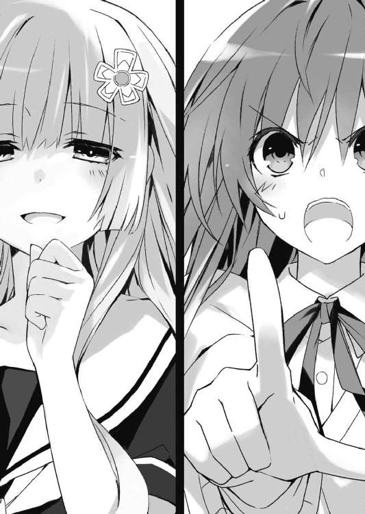
「......ふぅん、嫌い、ですかー」
言って、唇の端を凄絶に歪める。
「そんなこと言われると、なおのこと欲しくなっちゃいますよう。士織さんが顔をぐちゃぐちゃにして泣きながら、『あなたのことが大好きです』って言うまでいじめたくなっちゃいます。うふふー、士織さんはいつまで私のこと嫌いだなんて言えますかねぇー」
「......言ったはずだ。俺は、おまえのものになんてならない」
士道が答えると、美九は一層楽しげに、無邪気な笑みを浮かべた。
「でもー、あなたは私の霊力を封印したい。そうでしょう？」
「............」
そう。そこが士道のウィークポイントだった。感情に任せて啖呵を切ってしまったものの、美九の力が封印できなければ結局何も解決しないのだ。
士道の表情からそんな思考を感じ取ったのだろう。美九が笑いながら、何かを思いついたようにぽんと手を打ってくる。
「そうですねー......じゃあ、一つ勝負をしませんか？」
「勝負......？」
「ええ。士織さんは私の霊力を封印したい。私は士織さんを手に入れたい。けれど双方、それを受けるつもりはない。──これ以上議論を続けても平行線だとは思いませんかー？」
「............」
士道の無言を回答と受け取ったのだろう、美九が続ける。
「だからぁ──勝負をしましょうよー。そうですね......せっかくです、今度の天央祭一日目で来禅が最優秀賞を取ったら、私の霊力を封印させてあげる、というのはどうですー？」
「は......？ 天央祭で......？」
「はいー。どうですか？ 面白いと思いません？」
「えっと......じゃあ、もし竜胆寺が勝ったら......？」
士道が問うと、美九はふふっと可愛らしく微笑んだ。
「そのときは士織さんと、士織さんが霊力を封印したという五人の精霊さん、みんな私のものになってもらいます」
「な、何を勝手な......！ そんなことできるわけ──」
士道は息を詰まらせ──そこで、もう一つの疑問に眉をひそめた。
「ちょっと待て。何で......一日目なんだ？」
問うと、美九はにっこりと微笑んだ。
「そんなの、決まってるじゃないですかぁ。一日目に私が勝っておけば、二日目、三日目は精霊さんたちと天央祭を楽しめるんですよぉ？ それに──」
一拍おいて、美九が言葉を続けてくる。
「──確か一日目のステージは、音楽関係の出し物がメインですしねぇ」
その言葉に、士道は胃に冷たいものが広がるのを感じた。
「......っ！ まさか、おまえ──」
そんな士道の様子を察したのか、美九が笑みを濃くしながら続けてきた。
「ええ。本当はあまり人前には出たくないんですけど、精霊さんたちのためなら特別です。──一日目のステージには私が立ちます」
「な......!?」
士道は息を詰まらせた。ただでさえ相手は常勝竜胆寺だというのに、そんな場所にメディアに一切姿を現さない謎のアイドルが出演するとなれば、大騒ぎになるだろう。普通であれば天央祭に足を運ばない美九のファンが押し寄せてもおかしくはない。
そうなれば必然──ステージ部門で竜胆寺の勝ちは揺るぎないものになるだろう。
「うふふ、そうですねぇ、せっかくですから直接対決といきましょう。士織さんもステージで何かやってくださいよぉ」
「な、何を......そんなの、そっちが有利過ぎるじゃないか！」
「そうですかー？ そうは思わないですけどねぇ。私にとっては『勝負をしてあげる』こと自体が譲歩なんですからぁ。確かに士織さんは欲しいですけれど、あなたがいなければ困るようなことはありませんしー。対して──あなたの方は？」
「ぐ......」
士道は悔しげにうめいた。
要は美九はこう言っているのだ。──自分の霊力を封印したいのであれば、この圧倒的に不利な勝負を受けるしかない、と。
「さあ、どうしますかー？」
美九がにこやかに問うてくる。
士道は、首を前に倒さざるを得なかった。
第三章 エディットタイム
「......で？ 何か申し開きはあるの、士道」
夜。美九の自宅から出た瞬間に〈フラクシナス〉の転送装置に拾われ、すぐさまブリーフィングルームに通された士道を待っていたのは、いつも以上に高圧的な妹様の不機嫌そうなお顔だった。
「......面目次第もございません」
士織ちゃんバージョンのまま床に正座しながら、顔中に脂汗を浮かべてボソボソと言う。
ちなみに今士道は、ブリーフィングルームに設置された円卓の真ん中に座らされており、周囲に着席したクルーたちから視線を浴びせられていた。......なんというか、被告として法廷にでも立っている気分である。
「言ったわよね、短気を起こすなって。精霊の好感度を上げようってときに、よりにもよって『おまえが嫌い』？ 『おまえを否定する』？ 随分と思い切ってくれたものね」
「で、でも......おかしいだろ！ あいつ、人の命を何とも思ってないんだぞ!? いや......っていうより、あの『声』でみんな美九のことが好きになるから、美九の周りには、きっと悪いことを悪いって言ってくれるような人がいなかったんだ。なら、俺が──」
「言う必要はなかったわよね。少なくともあのタイミングでは」
「うぐ......」
きっぱりと言われ、士道はまたも口ごもった。
「確かに誘宵美九の価値観は普通のそれと乖離しているわ。封印後は念入りな教育が必要でしょうよ。......でも、だからこそ早く霊力を封印しなきゃならないんじゃないの？ なんでわざわざ相手を煽るような真似をするのかしらこの変態女装男子は」
「......いや、この格好はおまえらのせいだろうが」
不条理に過ぎる罵倒に抗議の声を上げるも、琴里はまったく意に介していないようだった。なんだか腑に落ちない気分になったものの、まあ今それはさほど重要ではないと思い直し、言葉を続ける。
「っていうか、そうは言うけどよ、美九の好感度と機嫌はどうなんだ？ 少なくともインカムからアラームは聞こえてこなかったぞ」
士道が反論すると、琴里はフンと鼻を鳴らした。
「確かに、美九の好感度と機嫌はそこまで低下していないわ。自分を否定された驚きからか、一時不安定にはなったものの、どうにか持ち直してる」
「ほら！ だったら──」
「ええ。何も問題はないわ。──士道が誘宵美九にステージ勝負で勝てるのなら、ね」
「............ぎゃふん」
反撃の兆しとばかりに顔を上げていた士道は、再びかくんと首を前に倒した。
そんな士道の様子を見てか、琴里が幾度目かの溜息を吐き出したのち、足を組み変える。
「──とにかく。受けてしまったものは仕方ないわ。実行委員の雑務はこっちでなんとかするから、士道は明日にでも、ステージに立てるように、出演者と交渉してきなさい」
「！ き、協力してくれるのか？」
「当然でしょ。何のために〈ラタトスク〉がいると思ってるの。──こうなった以上、全力をあげて勝ちにいくわよ。わかってるでしょうね、あなたたち」
『はッ!!』
琴里が腕を組みながら言うと、周囲のクルーたちから一斉に応答の声が響き渡った。
「とはいえ、相手は人気アイドル誘宵美九。そう簡単に勝てる相手じゃないわ。士道の学校は、一日目のステージで何をやるの？」
「え？ ええと......」
言われて、士道は記憶を探った。確か亜衣麻衣美衣が参加すると言っていた気がする。
「確か......バンド演奏だったと思う」
「バンド、ね。へえ、よかったじゃない、得意分野で」
「え？」
琴里の言っている意味がよくわからず、首を傾げる。すると、琴里は手元のコンソールを操作し、部屋に設えられていた大型スクリーンにとある映像を表示させた。
「ひ......ッ!?」
それを見て、士道は思わずのどを引きつらせた。
映っているのは士道の部屋だった。中学生くらいの士道がベッドに腰掛け、中古のギターを弾いている。特別上手くはないものの、決して下手でもない。むしろ中学生にしては達者なくらいだろう。
だが、そこからが問題だった。士道はどっぷり自分の世界に陶酔した様子のまま、自作の拙いメロディに乗せて、自作の歌詞を口ずさみ始めたのである。
そう、中学生の頃、思春期をこじらせた士道は、いっとき「俺の気持ちをわかってくれるのはギターだけだから......」と、ちょっと影のある男を演出していたことがあったのだ。無論、受験に差し掛かったあたりで急に恥ずかしくなって封印した過去ではあるが。
「せっかく磨いた腕を......ぷ......っ、披露する場ができたじゃない......くく......っ」
琴里が小刻みに肩を揺らし、必死に笑いを堪えながら言ってくる。よく見ると、他のクルーたちも皆、顔を背けて身体をぷるぷる震わせていた。
「ちょ──な、なんでこんな映像が......っ！」
「まあ、何かの役に立つと思って......ね......ぷふっ」
そこで、映像の中の士道がサビに入る。急にその場に立ち上がり、ギターを派手にかき鳴らし始める。琴里が耐えきれずに「ぷはっ！」と噴き出した。
「やっ、やめてやめてやめてぇぇぇぇぇぇッ！」
士道が頭を抱えて叫んでいると、不意に演奏が終わった。
ようやく地獄から解放されたかと思いスクリーンを見やると、再びベッドに座った士道が、誰もいない空間に向かって、インタビューを受けているかのように一人で喋り始めた。
『ええ、俺は口下手だから......ギターに語ってもらうしかないんです。だから、「弾いてる」じゃなくて、俺にとってはギターと「話してる」って感覚が近いっていうか......』
「ちょッ、早く映像切れおぉぉぉぉぉぉぉいッ！」
士道が全身に鳥肌を発生させながら涙目で訴えかけると、ようやく映像が中断された。
数秒後、なんとか呼吸を整えた琴里が、パチンと指を鳴らす。
「まあ、まったく未経験のものよりいいじゃない。──もちろん、最高の指導員を用意するわ。今日から天央祭当日まで、眠ってても曲が演奏できるようになってもらうから覚悟なさい。それと──幹本」
すると左方の席に座っていた〈社長〉幹本が手元のコンソールを操作し始めた。
「はっ、すぐに最高の機材を集めさせます」
小さくうなずき、再び琴里が士道に目を戻してくる。
「それで、曲目は？」
琴里がしれっと問うてくる。士道は頭の中でポジティブな言葉を唱えまくり、なんとか自分を立ち直らせてから口を開いた。
「......いや、詳しくは知らないけど......多分コピーバンドだと思うぞ？」
「訴求力が弱いわね。──箕輪！」
今度は右方に座っていた〈保護観察処分〉箕輪が、何やら操作を始める。
「今すぐプロのアーティストに依頼を。コンペティションを行い、演奏曲を決定します」
箕輪の言葉にうなずき、琴里がまたも問いを発してくる。
「それで、敵陣営のことはどれくらいわかってるの？」
「いや......さすがにそこまでは」
「そ。──椎崎！」
幹本や箕輪と同じように、〈藁人形〉椎崎が行動を開始する。
「竜胆寺女学院にスパイを送り込み、当日のパフォーマンス内容を探らせます。妨害等はいかが致しますか？」
椎崎の物騒な言葉に、琴里はふうむとうなった。が、すぐに首を横に振る。
「確かに勝率は上がるかもしれないけれど、それ以前に美九に機嫌を崩されたらことよ。理想的なパターンは、美九が全力を出し尽くして、なお一歩及ばず、って展開よ。こちらの勝利は絶対条件としても、向こうにも気持ちよく負けてもらわなきゃならないわ」
などと、矢継ぎ早に指示を発していく。士道は半ば呆然とそんな〈ラタトスク〉メンバーたちのやり取りを眺めていた。
「なんか......すげえな」
「言ったでしょ。全力で勝ちにいくって。相手は現役アイドルなのよ？ これくらいの下準備は当然じゃない。どこかの誰かさんが軽率な約束取ってきたんだから仕方ないでしょ」
「ぐ......、わ、悪いとは思ってるよ」
「ふん、いいわよ別に。あのときは他にいい方法がなかったのも確かだし。それに──」
と、琴里がチュッパチャプスをポンっ、と口から出し、ふっと視線をずらした。
「士道が美九に啖呵切ったとき、......ちょっとだけ、気持ちよかったしね」
「え......？」
琴里は手をひらひら振ると、再びキャンディを口に放り込んだ。
◇
「......あんたら、本気？」
低く響くような声を発し、燎子が目の前に居並んだ一団を睨め付ける。
陸上自衛隊天宮駐屯地のブリーフィングルームには今、二〇名ほどの人間がいた。
燎子の側に座っているのは既存のＡＳＴ隊員たち。そして対面に居並んでいるのは、先日ＡＳＴに補充要員として配属されてきた、ＤＥＭインダストリーの出向社員たちである。
出向社員たちの真ん中に座ったジェシカが、ニィ、と唇の端を上げてくる。
「もちろン。もし信じられないのであれば、署名付きの書類をご用意しましょうカ？」
「聞き直すわ。──正気？」
無礼とも取れる燎子の問いに、しかしジェシカは心底愉快そうに笑みを濃くした。
燎子は憮然とした様子で顔を歪めると、手元に置かれた命令書に視線を落とす。
そこに書かれていたのは、にわかには信じられない作戦内容だった。
──精霊〈プリンセス〉の捕獲作戦。
現在、都立来禅高校に通っている少女・夜刀神十香が精霊であるということが確認されたため、これを捕獲するというのである。
とはいえ、ここまではわからない話ではない。確かにこの夜刀神十香という少女が精霊〈プリンセス〉に酷似しているという話は前々から聞いていたし、もし霊波反応が確認されたのであれば放っておくこともできない。
「一〇〇歩譲ってここまではいいとしましょう。私たちとしても、精霊が学校に通ってるだなんて危険な状況を見過ごすわけにはいかない」
言ってから、書類にダンと手を突く。
「でも、これは何？」
「これ、っていうト？」
「すっとぼけんじゃないわよ。──なんで、捕獲対象にただの人間が入ってるのよ」
そう。その書類には〈プリンセス〉の疑いがある少女の他にもう一人、捕獲対象が記されていたのである。
五河士道。詳細──秘匿。
「この少年も精霊だっていうの......？」
「詳細は秘密ヨ。でも、非常に重要なターゲットであるとだけ伝えておくワ」
「あんたねえ......」
「言い換えましょうカ。あなたには知ることが許されていないノ」
「く......」
きっぱりと言うジェシカを睨み付ける。ちッ、とわざとジェシカにも聞こえるように舌打ちをこぼし、次の要項を一瞥した。
「なら、こっちは何なのよ。──作戦決行日、九月二三日土曜日。場所が天宮スクエア天央祭会場......!? 一体何考えてんのよこれは！ 顕現装置は秘匿技術のはずでしょ!? こんな衆目に──いえ、それ以前に、こんなに人の集まる場所で精霊とドンパチするつもり!? あんたら、自分がどんだけ滅茶苦茶なこと言ってるかわかってんの!?」
燎子はもはや悲鳴じみた声で叫んだ。問題は捕獲対象だけではなかったのである。
恐らく、その日天宮市でもっとも人間が集まるであろう天央祭の会場。そこに押し入り、衆目の前で夜刀神十香と五河士道を捕獲せよというのである。
しかもその実行部隊はＤＥＭ出向社員たちのみで構成され、燎子たち既存のＡＳＴ隊員たちは、周辺警戒や情報統制などの裏方に配置され、現場にすら近づけないのである。これでは彼女らの暴走を止めることもできはしない。
「意味がわからないわ！ 一体何のためにこんなことするのよ......ッ！」
しかしジェシカはヒートアップする燎子とは対照的に静かに息を吐いてきた。
「これはセレモニーなのヨ。我々から、親愛なる御敵への挨拶なノ。──だから、少々のリスクを負っても、盛大にしないといけないのヨ」
「は......？ 敵？ 挨拶？ 何を言って......」
ジェシカは燎子の言葉を最後まで聞かず、にやついた顔のまま席を立った。
「別に、納得してもらわなくても構わないワ。作戦に異存があるのであれば上へ訴えテ。もし撤回されたのであれば、我々もそれに従うワ」
「あ、ちょっと待ちなさい！」
燎子が制止すると、ジェシカは不意に足を止めた。──が、すぐに、その行動が燎子の言葉を受けてのものでないことがわかる。ジェシカが、何かを思い出すようにこちらに首を回してきたからだ。
「──そうそう、言い忘れてたワ。今回の作戦、鳶一折紙一曹には知らせないようにネ」
「折紙？ 一体なんでよ。あの子はＡＳＴの重要戦力よ？ わざわざ外す意味は──」
「今回の件においてはそれが邪魔になる可能性があるって言ってるのヨ。それに、どうせ既存の隊員の皆さんは実戦には参加しないワ。そう大した影響はないでしょウ？」
「っ、こっちの編制にまで口出される覚えはないわよ」
「勘違いしないデ。これは私の一存ではなく上からの命令ヨ。──ではでハ。ご機嫌よウ」
言って、ジェシカが部屋を出て行く。他のＤＥＭ社員たちもそれに続いていった。
「ぐ......ッ！ 何なのよ、一体......！」
燎子は悔しさと無力感を拳に込めると、一気にテーブルに叩き付けた。
その際、そこに置かれていた書類がひらひらとその場に舞い、うち数枚が床に落ちる。
と──そこで。
『五河士道』と名の記された書類に視線を落とした燎子は、「......ん？」と眉根を寄せた。
「......そういえば、士道って、どこかで......」
言ったところで、先ほどのジェシカの言葉が思い出される。
「折紙が......参加禁止──って、あ」
燎子は目を見開いた。
五河士道。それは、折紙が言っていた『恋人』の名だった。
◇
「なあ五河。恋って......いいよな」
美九との勝負の約束から一晩が過ぎた、九月一三日の放課後。
十香命名のあだ名のごとく、ヤバげな薬でもキメているかのような恍惚とした顔で突然殿町がそんなことを言ってくるのに、士道は深いため息とともに言葉を返した。
「......いきなり何だってんだよ」
しかし殿町は士道の鬱陶しそうな表情などまるで気にならないといった様子で、興奮気味に言葉を続けてくる。
「俺......もしかしたら運命の出会いを果たしてしまったかもしれん」
「はあ。誰か可愛い子でもいたのか？」
「ああ、一昨日の放課後なんだがな。すっげぇ俺好みの女の子に出会ってしまったわけだ」
「ほう」
「男子トイレで」
「ぶふ......ッ!?」
殿町の言葉に思わず咳き込む。だが殿町は、そのリアクションを別の意味で受け取ったらしい。腕組みしながらさもあらんとうなずく。
「その反応もよくわかる。だが本当なんだ。男子トイレの中で俺を待ち伏せしていたんだ」
「待ち伏せはしてねえよ！」
「うんにゃ、間違いない。だってあの子、俺の名前知ってたんだぜ」
「いや、だからって......」
士道が頭をくしゃくしゃやるも、殿町は意に介さず熱っぽく続けてきた。
「マジで運命を感じたね。俺と二人っきりになりたいからって、ひとけのない校舎奥のトイレで待ち伏せしてるだなんて。名前くらい聞いておけばよかったな......」
「......あ、ああ、そう」
「あー、なんだよそのリアクション。まだ嘘だと思ってやがんな？ ホントだって。五河くらい背がスラッと高くて、五河くらいの体格で......でもって初対面だってのに長いこと一緒にいたような気安さがいいんだよ。──そうそう、まるで五河みたいな感じだった」
「............」
こいつ本当は気づいてるんじゃなかろうかという疑念が頭を掠めるが、殿町の楽しげな反応を見ていると、どうもそうは思えなかった。
とはいえ、いつまでも殿町の相手をしているわけにもいかない。よいしょと席を立つ。
「あ？ どこ行くんだよ」
「おまえが推薦してくださった実行委員だよこんちくしょう」
士道が言うと、殿町はあっはっはとばつが悪そうに笑った。
「悪かったって。──でも、期待してろよ。今年はみんな本気だからな。おまえを表彰台に上げてやるぜ？」
「へいへい、せいぜい期待してるよ」
言いながら教室から出、ロッカーから着替えの入った鞄を取り出す。これからまた士織ちゃんモードに変身し、ステージに立つ出演者たちのもとへ交渉に行かねばならないのだ。
だが、士道は廊下で足を止めた。それ以前に大きな問題があったのである。
「......これ、どこで着替えよう」
『別に昨日と同じトイレでいいじゃない』
士道が呟くと、琴里の声が返してきた。
「いや、でも結局昨日はそれで駄目だったし......」
『じゃあ最初から女子トイレに入って着替えればいいじゃないの』
「......それ余計ヤバくないか？」
『何言ってるの。要は問題は、トイレの個室から出るときに人がいるかどうかがわからないことでしょ？ 女子トイレなら、入るときさえ注意すればあとは大丈夫でしょ』
「いや、そういう問題じゃ......」
『いいから急ぎなさい。スカートの下に短パン穿くの禁止にするわよ』
「......了解」
必死に懇願して許してもらった最後のラインである。今さらそれを覆されてもたまらない。士道は渋々足を女子トイレに向けた。
「誰も......いねえよな」
校舎奥の女子トイレを覗き込み、何も物音がしないことを確認してから足を踏み入れる。
と、その瞬間、個室の扉が三つ、バン、バン、バンと順番に開いた。
「いやー、助かったー」
「こんなとこにトイレなんていらないと思ってたけど、やっぱ意味があるのねー」
「危うくマニア向け女子高生になるところだったわ」
なんて、やけにスッキリした顔の亜衣麻衣美衣三人娘が顔を出す。そしてこれまた順番に「ん？」「ん？」「ん？」と、深刻な領土侵犯を犯している男子生徒に目を向けてきた。
慌ててその場から走り去る。と、背後から凄まじい罵声が響いてきた。
「うッきゃぁぁぁぁッ!?」
「へッ、変態よぉぉッ!!」
「マニア向けぇぇぇッ!!」
「ああもうなんで俺が入ろうとしたときに限って......ッ！」
士道は泣きそうな顔になりながら廊下を駆けていった。
......結局、着替えは〈フラクシナス〉で済ませた。
なんでこんな単純な解決法に気づかなかったのだろうと悲しくなった士道だったが、今さら後悔しても仕方ない。気を取り直すようにパンパンと頬を張る。
士織ちゃんモードに変身した士道は今、一日目のステージへの出演交渉をするために、四階に位置する音楽室前にやってきていた。聞いたところによると亜衣麻衣美衣たちが、ここでバンドの練習をしているらしい。
とはいえ、亜衣麻衣美衣を含むメンバーは、今までずっと練習を重ねてきたはずである。今さら士道が混ぜてくれと言っても、そう易々と受け入れてくれるかはわからなかった。
と、士道がそんなことを考えていると、背後から両肩をガッと掴まれた。
「ようやく見つけたぞ、シドー。一体どこに行っていたのだ」
「もう離さない」
「十香に......折紙？ な、なんでこんなところに......」
士道は目を丸くしながら言った。そう、士道の肩に手を置いていたのは、教室にいるはずの十香と折紙だったのである。
「うむ。突然シドーが消えたから探していたのだ。鳶一折紙にさらわれたのではないかと思って心配したぞ」
「夜刀神十香に何かされたのではないかと思っていた。無事で良かった」
言ってから二人は互いに視線を交わし、フン、とそっぽを向く。
士道はそんな二人の様子に力無く笑い......そこで「ん？」と首を傾げた。
目の前にあった音楽室の扉。その向こうから、楽器を乱雑に掻き鳴らすような音が聞こえてきたのち、何やら口論をするかのような声が聞こえてきたのである。
「なんだ......？」
やんわりと十香と折紙の手を肩から外し、中の様子を探るように扉に近づいていく。
するとその瞬間、扉が勢いよく開かれ、士道は鼻っ柱をしたたかに打ち付けてしまった。
「あづ......ッ!?」
「何よ、じゃああんたたちで勝手にやりゃいいじゃない！」
「そうよ、私たちには関係ないわ！」
しかし、扉を乱暴に開けた犯人たちは士道の存在に気づいていないらしい。見覚えのない女子生徒が二人、見るからに怒った様子でそう叫び、のしのしと階段を下りていく。
「し、シドー、大丈夫か!?」
一拍おいて、十香が心配そうに士道のもとに寄ってくる。士道は少し涙目になりながらも、「大丈夫......」と手をひらひら振った。
と、音楽室の方からまたも会話するような声が聞こえてくる。
「けッ、ベーケヤロィ、やる気のない奴ァこっちから願い下げだってんでぃ！」
「もう、亜衣ったら......どうするのよ、もう私たち三人しかいなくなっちゃったじゃない」
「楽器はともかく、ボーカル不在は深刻ね。──と、ん？」
美衣が、音楽室の前にいた士道、十香、折紙の姿を目にし、眉を上げる。
次の瞬間には、その情報は亜衣、麻衣にも伝播し──
「確保ォ！」
叫んで、三人が士道たちに襲いかかってきた。
「なーるほど......私たちの知らないところでそんなことになっていたとはねえ」
寝違えたかのように首を横にしながら、亜衣がうなるように言った。
ちなみに彼女は首を傾げているわけでも、士道たちを馬鹿にしているわけでもない。単純に、先ほど飛びかかってきたとき折紙に華麗な関節技を極められただけである。
今音楽室にいるのは、亜衣麻衣美衣、そして士道、十香、折紙の六人のみだ。
士道はステージに立つバンドに参加させて欲しい旨を伝えたあと、重要なことは上手く隠しつつ、誘宵美九に勝負を挑まれたことを説明していた。
「よっしゃ、私らも鬼じゃない。士織ちゃんの貞操のためにも一肌脱ごうじゃないの！」
亜衣がダン、と胸を叩く。その際首にも振動が伝わったのだろう。涙目になって「うきゅぅぅ」と珍獣のようなうめき声を上げた。
「まーたそんなこと言って。人数足りなくて困ってたのはこっちなのに」
「まあいいじゃないの。追加要員三人！ これでなんとかなりそうね」
「え？」
美衣の言葉に、士道は首を傾げた。
「あ、いや、十香......さんと折紙さんは私の付き添いで......」
「そうなの？ そのわりには......」
麻衣が士道の後方を指さす。そこには、既に楽器を選び始めている折紙と十香がいた。
「え、ええと......おまえら、じゃなくてあなたたち......」
士道が苦笑しながら言うと、二人がこくりとうなずいてきた。
「どんな経緯でそうなったかはわからないけれど、その勝負、負けるわけにはいかない」
「うむ、私に任せておけ！」
息ぴったりにそう言ってから目を見合わせ、フンと顔を背ける。
「まーまー、二人とも仲良くねー」
「そうそう。一緒に竜胆寺を倒しましょうよ」
「士織ちゃんのためにもさー」
亜衣麻衣美衣がそう言うと、二人は渋々ながらも納得したようだった。そんな様子を見て、士道もほうと息を吐き出す。
折紙と十香がどの程度演奏できるかはわからないが、練習中や本番中、士道の目の届かないところで喧嘩をされても困る。一緒に参加してもらった方が心理的には助かるのかもしれなかった。
「でも、実行委員全員がこっちに参加しちゃうとなるとさすがにヤバいんじゃないの？」
と、麻衣があごに指を触れさせながら言ってくる。士道は「ああ」とうなずいた。
「そっちは心配しないでください。知り合いに頼んできました」
「そうなの？ んーじゃいっか」
なんて、存外あっさりと言う。......さすがに実行委員としてもう少し懸念を示した方がよいのではと思わなくもなかったが、詳しく追及されても〈ラタトスク〉のことを説明できるわけでもないので何も言わずにおいた。
「それで......早速練習に入りたいんだけど、士織ちゃんたちは何か楽器できるの？」
と、亜衣がふっと士道に視線を向けてくる。
「私がベース、麻衣がキーボード、うんでもって美衣がドラムスやってるんだけど」
「はあ......その、一応..................................................................ぎ、ギターを少々」
無論もう、ギターと書いて『コイツ』とは読まないが、それを言うのに、士道は妙にカロリーを消費した気がした。新しいダイエット法として本を書けば売れるかもしれない。
だがそんな士道の言葉に、三人娘は「おおっ！」と目を輝かせた。
「いいねーいいねーギター少女」
「かーっこいー！ やっちゃってよー、やっちゃってよー」
「で、あとのお二人は？」
美衣が十香と折紙に問う。すると折紙が、迷いなく口を開いた。
「ギター。士織とお揃い」
「おー、鳶一さんも経験アリ？」
折紙はふるふると首を横に振った。
「一日貰えれば、弾けるようにしてくる」
「そ、そう......」
無茶な宣言だったが、折紙が言うと妙に説得力があった。亜衣がぽりぽりと頬をかく。
次いで十香が、キラキラした目で亜衣麻衣美衣に問い掛ける。
「私は何をやればいいのだ!?」
「そうね、何か経験のある楽器ってある？」
「ないぞ！」
「えーと......じゃあ好きなアーティストとか」
「ないぞ！」
「うーんと......それじゃ」
「ないぞ！」
十香が明朗快活に返答する。最後はちょっとフライングまでしていた。
三人は何やら会議をしたのち、音楽室の奥から小さな箱を引っぱり出してきた。
そして、いやに重苦しい調子で口を開く。
「十香ちゃん......あなたにこれを託すわ」
「常人には到底扱いきれない、伝説の楽器よ」
「でも、十香ちゃんなら可能性がある。やってくれるわよね......？」
三人の神妙な調子に、十香がごくりとのどを鳴らす。
「う......うむ」
十香が頷くと、三人は段ボールを開けた。中から凄まじい光が迸る。気がした。
「これよ......」
言って、亜衣が箱の中から楽器を取り出し、十香に手渡す。丸い骨組みの周囲に、小さな円形の金属板が幾つもついたその形は──まあ、どこからどう見てもタンバリンだった。
「こ、これが......伝説の楽器......」
しかし十香は戦慄した様子で手を戦慄かせると、恐る恐るタンバリンを持つ手を動かした。シャン、という綺麗な音が鳴る。
「お、おお......！」
十香が目を輝かせると同時、亜衣麻衣美衣が驚いたような顔を作った。
「ま、まさか手にした瞬間に音を鳴らすことができるとは......！」
「さすが十香ちゃん！ あなたにならこれを使いこなすことができる！」
「天の扉は開かれた！ 楽聖の誕生じゃあ！」
なんかものっすごく適当なことを言っていたが、十香は満足らしかった。楽しげにシャンシャンとタンバリンを鳴らし始める。
と、亜衣麻衣美衣がぐるんと首を回し、十香から士道に視線を移してくる。
「──っと、まあ大体担当楽器は決まったとして」
「ギターの用意もないだろうし、本格的な練習は明日からになると思うんだけど......」
「その前に決めておかないといけないことがあるのよねー」
「というと？」
士道が問うと、三人はばつが悪そうに頬をかいた。
「んー、まあぶっちゃけ、ボーカルのことなんだけども」
「実は私たち、みんな歌そんな上手くなくてさー」
「誘宵美九相手となるとなかなか厳しいっていうかー」
はぁ、とため息を吐く。すると美衣が声を上げた。
「だいたいさ、普通バンドのボーカルってギターとかベースとかがやるものなんじゃないの？ 亜衣やってよ！ ライブで盛大にコケて縞パン晒してよ！」
「はぁ!? 何決めつけてくれてんのよ。別にキーボードが歌ったっていいんだから、麻衣がやりなさいよ！ もう終わりだよ！ 君が小さく見えるよ！」
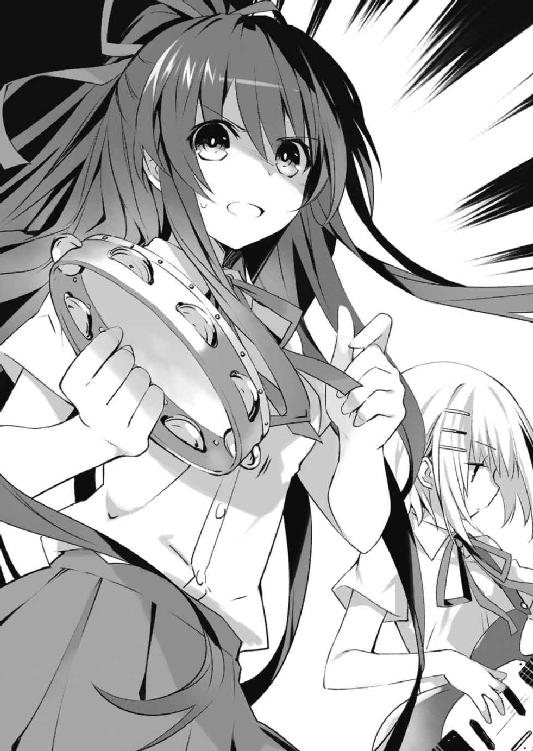
「ちょっ、それ言うならドラムスだっていいじゃない。大体眼鏡かけてドラム叩いてるのに、なんで美衣は歌えないのよ！ ロマンティック止まってんじゃないの!?」
口々に言って、わいわい喧嘩を始めてしまう。
「ま、まあまあ、落ち着いて......」
と、士道はそこであることを思い出した。
「そうだ......ボーカルといえば」
制服のポケットを探り、今朝方琴里から渡されたＣＤを取り出す。
そして部屋の脇にあったプレイヤーにそれを入れると、そのまま再生ボタンを押した。
すぐにスピーカーから賑やかな曲調が流れ始め──亜衣麻衣美衣が「ん？」と喧嘩を止めてこちらに顔を向けてくる。
「これ、誰の曲？ 歌詞入ってないみたいだけど格好いいじゃーん」
「えー......実は親戚に音楽関係者がいまして。それで、未発表曲を提供してくれて......」
士道が適当に言うと、亜衣麻衣美衣はパァっと顔を輝かせた。
「マジ!? それってスゴくね!?」
「え、じゃあこの曲使っちゃっていいワケ？」
「っていうか士織ちゃん歌ってくれんの？」
「え!? ええと......」
士道が口ごもっていると、あれよあれよという間にステージが整えられてしまった。ついでに十香と折紙がしゅたっと士道の前に座り、観客モードになる。
「はい、ミュージック、スタート！」
「え、あ、ちょっと！」
士道の制止も聞かず、麻衣が曲を再生する。士道は慌ててポケットから歌詞カードを取り出すと、少し遅れて歌い始めた。
──そして、およそ五分後。
「おおー！」
「............」
十香がパチパチと拍手をし、折紙が無言でうなずいてくる。ちなみに、いつの間にか折紙の手にはボイスレコーダーが握られていた。
しかしそんな二人に反して、亜衣麻衣美衣は難しげな顔で唸っていた。
「うーん......」
「下手では......なし」
「さりとて上手くも......なし」
あまりにも適切な評価に、思わず苦笑してしまう。
実際、琴里の前で歌ったときと、まったく同じ評価だった気がする。
まあ、だからこそ琴里に、『策』を授けられていたわけではあるが。
「ええと......一応、プロの方に歌ってもらったバージョンもあるので、当日それを流してしまうって方法もありますけど......」
「それって......口パクってこと？」
「やっぱり駄目ですよね......」
士道は頬をかきながら眉根を寄せた。美九に勝てる可能性があるとしたらこれくらいしかないでしょ、と琴里に託された策ではあるのだが、まあ確かにあまり胸を張れるような手段ではない。ステージに向けて練習を重ねてきた三人には不満かもしれなかった。
「いや、なりふり構わず勝ちを取りに行こうって姿勢はいいんだけどね」
「うんうん。でも、当日それをどうやって流すのかが問題かなあ」
「それに、多分バレたら失格よねえ」
亜衣麻衣美衣が「うーむ」とうなる。どうやら別のポイントで悩んでいるらしかった。
とはいえ、他に手がないのも事実である。〈ラタトスク〉の工作がある程度働くとはいえ、美九が自分の敗北を認めなければ意味がないのだ。下手なボーカルでは説得力にかけるだろう。
と、皆が難しげにうなっていると、その場に座っていた折紙が不意に立ち上がった。
「──士織、もう一度曲をかけて」
「え？」
「あなたを負けさせるわけにはいかない」
士道が目を丸くしていると、折紙はすたすたと歩いて壇上に上がり、マイクを手に取った。どうやら、試しに歌ってみようというつもりらしい。
折紙の意図を察した士道は、彼女の言うとおり曲を再生しようとし──「あ」と思い立って歌詞カードを示した。
「折紙......さん、これ」
「必要ない。覚えた」
「そ、そうですか......」
士道は苦笑しながら頬をかき、大人しく曲を再生した。
──伴奏が終わり、折紙が歌い出す。
「え......？」
その瞬間、誰かの小さな声が、後方から聞こえてくる。
だが、その気持ちは士道にもよく理解できた。折紙がいつもと変わらぬ表情のまま歌い上げたその歌は──プロ顔負けの上手さだったのである。
「はー......」
折紙が完璧に歌を歌い上げると同時、亜衣麻衣美衣の歓声と拍手が上がった。
「うっわ、なに、すごっ！」
「鳶一さんそんな上手かったの!?」
「え？ これマジでいけんじゃね？」
にわかに沸き立つ三人娘。だがその気持ちもわからなくはなかった。確かに折紙の平時の表情や所作とのギャップもあったのかもしれないが、それを差し引いたとしても、常人離れした歌唱力だった。完璧な音程。十分な声量。まるでＣＤをかけているかのように正確無比な歌声である。
士道はごくりと唾液を飲み下すと、折紙に向かって一歩足を踏み出した。
「折紙さん......お願いします。私の代わりにボーカルをやってくれませんか？」
「士織の勝利のためならば」
折紙が、微塵の逡巡も見せずに即答する。亜衣麻衣美衣が一斉に盛り上がった。
と、そこでちょんちょん、と士道の肩がつつかれた。見やると、十香がうずうずした様子でそこに立っていることがわかる。
「私も！ 私も歌っていいか!?」
「え？ ああ、もちろん」
答えてから、士道は十香に歌詞カードを手渡してやった。さすがに折紙のように数回聞いただけで歌詞を完璧に覚えることはできなかったらしい。大人しくそれを受け取る。
そして片手にマイク、もう片方にタンバリンと歌詞カードを持った状態で壇上に上がる。
そういえば、士道は十香が歌っているのを見たことがなかったかもしれない。うろ覚えの鼻歌くらいは耳にしたことがあったが......伴奏・歌詞付きでちゃんと歌うのを聞くのは初めてである。
十香も精霊。もしかしたら、美九ほどではないにしろ、人を魅了する魔性の歌声のようなものを持っているのかもしれない、なんてことを考えながら。
だが。十香は伴奏が終わっても一向に歌い始めなかった。
「む......むう？」
訝しげに眉をひそめ、士道に向かって手招きしてくる。
「？ どうかしたんですか？」
「うむ......この漢字はなんと読むのだ......？」
言って、困った顔を作りながら歌詞カードを示してくる。
「あー......」
とりあえずボーカルは折紙に決定かな......と皆の心の中で意見が一致した。
「よ、よし、とりあえず時間もないし、練習始めよっか！」
亜衣の音頭とともに、十香を含む皆が一斉に「おー！」と拳を振り上げた。
◇
同時刻、竜胆寺女学院。
「ねえ、みんな聞いてください。私、一日目のステージに出ることにしましたー」
美九が発した言葉に、会議室の中は騒然となった。
「お、お姉様！ 本当ですか!?」
「あんなに人前に出るのを嫌がっておられたのに......」
「でも、これで初日の勝利は間違いありません！ お姉様が歌を披露するんですもの！」
居並んだ女子生徒たちが色めき立ち、黄色い声を上げ始める。美九はうふふと微笑みながら彼女たちの様子を楽しげに眺めた。
「早速準備をお願いしますねー。どうせなら衣装も新しいものを用意したいですし、機材もいいものが欲しいですしねー。あ、バックダンサーも生徒から選定しないと」
美九が言うと、皆そのステージを思い浮かべてか、うっとりとした様子で胸元で指を組み合わせた。──だが、
「ちょ、ちょっと待ってください！」
左方の席の眼鏡をかけた女子生徒が、不意にテーブルに手を突いて立ち上がった。
「はいー？ どうかしましたか？」
美九が視線を向けると、眼鏡の生徒は一瞬怯んだように肩を揺らし、しかしぐっと拳を握りながら続けてきた。
「恐れながら......そうなると、もともとステージ部門にエントリーしていた吹奏楽部の演奏は一体どうなるのでしょうか」
「んー......残念ですけど、今回はご遠慮していただくことになっちゃいますねぇ。まあ、でもいいじゃないですか。私が出れば確実に勝てるんですからー」
「そ、そんなっ！」
眼鏡の生徒が、顔を歪めて叫んでくる。
「天央祭のためにみんな必死に練習してきたんですよ!? いくらなんでもあんまりです！」
彼女がそう訴えかけると、途端辺りに動揺の波が広がっていった。皆、美九のステージは見たい。だが、彼女の言い分ももっともだと思っているのだろう。
と、次いで、彼女の向かいに座っていた髪の短い生徒がおずおずと手を挙げた。
「あ、あの、お姉様がステージの準備に入ってしまうとなると、他の部門の方は......」
「去年は勝てたんでしょう？ 同じようにやってくれれば問題ないですってばー」
美九が言うも、さらにその隣の生徒までが口を開く。
「非常に申し上げづらいのですが......お姉様の新しい衣装とステージ用の機材を用意するだけの予算はもう......」
彼女らの発言によって、会議室はにわかにざわめき始める。
美九はやれやれと息を吐くと、目を細めながらのどを震わせた。
【いいから、私の言うとおりにしてください】
──すると。どよめいていた会議室の中が、一瞬にしてシンと静まりかえった。
「では、お願いしますねぇ？ 大丈夫、私が全てなんとかしますよー」
美九が間延びした声で言うと、生徒たちは一斉に『はい、お姉様』と答えた。
◇
九月二二日。鳶一折紙は機体整備のため駐屯地にやってきていた。
天央祭を明日に控えた日とはいえ、ＡＳＴ隊員として日頃の仕事を怠るわけにはいかない。一通り動作確認を終えた折紙は、スーツから作業服に着替え、格納庫に並んだＣＲ─ユニットを確認しながら、手にした端末に表示された項目をチェックしていった。
「............」
そんな作業の最中。折紙は妙な違和感を覚え、微かに眉をひそめた。
格納庫内には折紙以外にもＡＳＴの実戦要員や整備士が見受けられるのだが、彼女らの雰囲気が、いつもと違うような気がしたのである。緊迫感......とでも言うのだろうか。格納庫全体に、いやに張り詰めた空気が流れているような感があったのだ。
「............」
無言で思案を巡らせる。......が、やはり近々作戦行動があるといった指令は思い当たらない。念のため端末で確認してみるも、結果は同じだった。
と、そこに左方からパタパタと足音が聞こえてくる。
視線をやると、サイズの大きな白衣を翻しながら、眼鏡をかけた金髪碧眼の少女が資材を抱えて小走りになっているのが見えた。──ＡＳＴの整備主任、ミルドレッド・Ｆ・藤村二等陸曹、通称ミリィだ。
ナイスタイミングである。折紙はミリィが自分の前を通り過ぎるのを見計らって、その首根っこを掴んだ。
「ふぎゃっ!?」
予想外の衝撃に、ミリィが猫のような悲鳴を上げる。折紙よりも小柄な体躯の前方で、折紙よりも豊満なバストが揺れた。
「な、何するかー！ ミリィの頸椎に何かあったら責任とれるですかーっ！」
「ミルドレッド、訊きたいことがある」
静かに言うと、ようやくミリィは犯人が折紙であると気づいたようだった。半眼を作ってぷすー、と頬を膨らせる。
「オリガミのミリィに対する対応には常々不満があります！ 改善を要求する所存！」
「善処する」
短く答えると、ミリィははふぅと諦めの混じった息を吐き出した。
「......で、一体何の用です？ ミリィはとてもお忙しいのですが」
「近々、何か特殊な作戦でもあるの？」
問うと、ミリィは目を丸くした。
「何言ってるんですかオリガミ。明日のための準備に決まってるじゃないですか」
「明日？」
折紙が訝しげに言うと、ミリィは「えぇ」とうなずいた。
「何も聞いていない。明日、一体どんな作戦があるの？」
「え？ ホントですか？ あー、もしかして連絡ミスですか？ まったくリョウコは、人には偉そうに言うくせに大事なとこでおっちょこさんなんですからー」
「教えて。何があるの」
「はいはい、明日は──」
が、ミリィは言葉を途中で止めた。──正しく言うと、背後から現れたジェシカに口元を優しく押さえられ、発言を中断させられた。
「ストップ。整備主任さン。そこから先は秘匿事項ヨ」
「ふぇ？ な、なんですとー？」
ミリィは驚いたような声を上げたが、何やらジェシカに耳打ちをされると次第に難しげな顔になっていった。
「......むぅ。すいません。オリガミの権限では知ることができないようです」
「どういうこと？」
折紙がすっと目を細めると、ジェシカが惚けるように肩をすくめてくる。
「フフ、聞いたとおりヨ。怖い顔しないデ。文句を言うなら上層部へどうゾ」
そう言って、ジェシカが歩み去っていく。ミリィもまた、すまなそうな顔をしながら、資材を抱えて走っていってしまった。
一体何があるというのだろうか。折紙は格納に残っているＡＳＴ要員たちを見回した。
が、皆折紙と目が合うと、途端に視線を逸らし、わざとらしく作業を再開させていく。
「............」
なんとも不可解、且つ居心地の悪い雰囲気である。折紙は機嫌悪そうに鼻から息を吐き、手早く作業を終えて格納庫を後にした。
今日の作業はこれで終わりである。いろいろ腑に落ちないことはあるものの、知る権限がないとまで言われてしまってはどうしようもない。
そんな不確定な懸念にいつまでも拘泥するよりも、早く着替えを済ませて自宅に戻り、歌のおさらいでもして明日に備えた方が建設的だろう。
と。折紙が一人、自分のロッカーを開けて作業服を脱いでいると、背後から扉の開く音が聞こえてきた。
ちらと目をやると、燎子がロッカールームに入ってきたことがわかる。
「日下部一尉」
「............」
折紙の声に、しかし燎子は何も答えず、そのままゆったりとした足取りで部屋の中程まで進むと、折紙に背を向けるように長椅子に腰掛け、手にしていた缶コーヒーのプルトップを引いた。そしてコーヒーを一口飲み、ふはあと疲れたような吐息を発する。
「............」
隊長もまた、折紙と会話をしたがらないらしい。
それを理解すると、折紙は別段それに反応を示すこともなく、黙々と着替えを続けた。
だが、折紙がハンガーからブラウスを外していると、突然後方から声が聞こえてくる。
「あーあー、今日も一日、嫌な外人の相手疲れたわねー。もう愚痴らないとやってらんないわねー。ちょうどロッカーには誰もいないみたいだし、独り言でも呟いちゃおうかなー」
「......？」
折紙は微かに眉根を寄せながら振り向いた。
独り言にしては妙に説明くさい。というか、いくら疲れているとはいえ、ロッカールームに入った段階で折紙に気付かないなどということはあり得ないだろう。そんな散漫な注意力では、常に危険と隣り合わせであるＡＳＴの隊長など務まりようがない。
しかし燎子は、そんな折紙の思案になどまったく気付いていない様子で、壁に向かって言葉を続けた。
「──明日九月二三日、一五〇〇時、天宮スクエアに第三戦闘分隊が突入するわ。目的は精霊〈プリンセス〉の疑いがある少女・夜刀神十香の捕獲」
「......な」
燎子が下唇にスチール缶の縁をつけながら漏らした言葉に、折紙は小さく声を発した。
第三戦闘分隊とは、ＤＥＭ社の出向社員たちのみで構成された新しい部隊である。──それが、夜刀神十香を捕獲？ しかも明日、天央祭の真っ直中で？
意味がわからない。突然もたらされた情報に、折紙はブラウスに袖を通すことも忘れて燎子の方に向き直った。
だが、燎子の『独り言』はそれで終わりではなかった。
「──及び、来禅高校二年生・五河士道の捕獲」
「......ッ!?」
燎子の口から発された名前に、息を詰まらせる。
気付いたときには、折紙は燎子の肩を掴んでいた。
「一体どういうこと？ 夜刀神十香はまだしも、なぜ士道まで──」
「............」
しかし燎子は、肩をぐらぐら揺すられても何も反応を示さなかった。まるで、幽霊にでもなった気分である。
燎子はそのまま小さく息を吐いてその場から立ち上がると、缶に残っていたコーヒーを呷ってから、入ってきた扉の方へと歩いていた。
「ああ、面倒くさいわねえ、明日の作戦。怠すぎて第二格納庫の裏口に鍵かけるの忘れちゃいそうだわ。ま、想定外のトラブルなんて起こるとは思えないし、別にいいわよねえ」
そして、
「──頼んだわよ、折紙」
そんな台詞を残して、ロッカールームを去っていった。
「............」
そこに一人残された折紙は、しばしの間呆然と燎子の消えた扉を見つめたのち──
「──っ......」
ぐっと、拳を握りしめた。
第四章 音楽
『──これより、第二五回、天宮市高等学校合同文化祭、天央祭を開催いたします！』
天井付近に設えられたスピーカーから実行委員長の宣言が響くと同時、各展示場が拍手と歓声に包まれた。
九月二三日、土曜日。天宮市内の高校生が待ちに待った、天央祭の始まりである。
正面入り口から近い一号館、二号館には主に飲食関係の模擬店が、奥の三号館、四号館には、様々な研究発表やお化け屋敷などの簡易アトラクションが集められていた。
今士道がいるのは二号館。来禅高校の勝敗を握る重要な拠点である飲食ブースだ。
だが、そんな重要拠点にいるはずの士道は今、地面に手を突いて全身から暗い空気を発していた。
「おっ、おぉぉ......」
理由は至極単純なものである。
士道はゆらりと顔を上げ、辺りを見回した。周囲には様々な模擬店が展開されている。たこ焼き、クレープ、そして音に聞くこだわりのメンチカツ。
だが、士道たち来禅高校の必勝策はそんな生やさしいものではなかったのだ。
士道は頭をぐりんと回し、自分の背後に聳えている看板に目を向けた。
『メイドカフェ☆ＲＡＩＺＥＮ』
その無慈悲な名称を頭の中で反芻してから、視線を下にやる。そこには、
「おお！ ひらひらだな！」
フリルのいっぱいついたエプロンの裾をつまんでひらひらさせながら笑う十香や、
「ぷ、くく......し、士道、御主、おなごの格好もなかなか似合うではないか」
「不覚。失笑を禁じ得ません」
士道の姿を見て含み笑いを漏らす、十香と同じ装いの耶倶矢、夕弦などが見受けられた。
そこまでを再確認し、士道はさらに視線を下へ。自分の装いを見直した。
──その、十香や八舞姉妹たちとまったく同じデザインの衣服を。
濃紺と黒の中間色の色合いを持ったロングドレスの上に、やったらめったらフリルのついた純白のエプロン。ついでに頭部には、これまた可愛らしいフリルで飾られたヘッドドレスが着けられている。
一言で言うと、これ以上ないくらいのメイドさんスタイルだった。
「なんで......こんなことに......」
女子高生の制服も大概ではあったが、さすがに士道も、人生においてメイドさんのコスプレをさせられる日がくるとは思ってもいなかった。なんだか男の子の心の大事な部分が汚れてしまった気がして、再びがっくりと肩を落とす。
と、そんな士道の肩に、ポン、と優しく手が置かれる。──亜衣（メイドさんバージョン）だ。背後には、同じ格好をした麻衣と美衣も見受けられる。
「どーしたのよ看板娘ぇ。ほら、そろそろお客さんくるんだからしゃんとして」
言ってビッと親指を立ててくる。士道はゆらゆらとその場に立ち上がった。
「......あの、これ、メイドカフェって」
「ああ。いいっしょ？ 竜胆寺に勝つにはコレしかないって決めてたのよ」
「いや、ていうか......よく許可出ましたね、こんなの」
天央祭は規模こそ大きいものの、あくまで高校の文化祭である。自由そうに見えて意外に縛りは多い。「学生に相応しくない」と判断されたなら、そもそも許可自体下りないのだ。その点こういった接客メインの店舗は微妙なラインに位置づけられるはずだった。
そういった点は重々承知しているのだろう、悪い顔をしながら肩をすくめてくる。
「だから印象操作に苦労したのよー。最初はキャバクラで提出したからねえ」
「ぶッ!?」
士道は思わず噴き出した。亜衣麻衣美衣がからからと笑う。
「あんときはえっらいこっぴどく怒られたよねー」
「うんうん。でもそのおかげで本命のメイドカフェが通りやすくなったし」
「まあ本当は、もっとスカート短くしたかったんだけどねー」
言いながら、美衣がスカート越しに士道のふとももに線を引いてくる。士道は顔を青くして思わずスカートを押さえた。そんな様子を見て亜衣麻衣美衣が再び笑う。
「まあ、士織ちゃんたちステージメンバーは入り口に立って客寄せパンダしててよ。ホールスタッフにはガチで接客教え込んであるから安心して呼び込んじゃって」
「そそ。できるだけ派手にお願いねー。もう行列作っちゃう勢いで！」
「うんうん、天真爛漫絶世美少女に、タイプ別双子、それに長身気弱系ときた日にゃあ、もう釣れない男は熟女好きか同性愛者くらいのもんよ」
「............」
いつの間にか気弱系にカテゴライズされていた。複雑な心境で苦笑する。
と、そこで士道は「ん？」と首を傾げた。
「そういえば......折紙さんはどうしたんですか？」
そう。他のステージメンバーはみんな揃ってメイドさんをしているのに、折紙の姿だけがそこになかったのである。
「んー？ 鳶一さん？ そういえば朝から見てないわねー」
「一応担当場所はメイドカフェのはずだけど......」
「あの日なんじゃないのー？」
美衣が言うと、三人があははと笑った。士道はどうリアクションを取っていいかわからず、ぎこちない笑みを浮かべるしかなかった。
「ま、そのうち来るでしょ。ステージに間に合えば別に文句ないわよ」
「そ、そうですね......」
士道が頬をかきながら答えると同時、正面入り口の方から夥しい数の足音が響いてきた。どうやら、お客様......もとい『ご主人様』と『お嬢様』がやってきたらしい。
「さ、じゃあここはよろしくねー！」
「時間になったら呼ぶからさー」
「あー、みんな、ここは士織ちゃんに任せていくから、ちゃんと指示に従ってねー」
言って、亜衣麻衣美衣が店の中に引っ込んでいく。
「え......っ、ちょ──」
店の前に残されたのは、士道、十香、八舞姉妹、そしてその他の、各クラスから選りすぐられた客引きメイドさんが一〇名ほどである。それら皆が、今し方客引き隊長に任命されてしまった士道に目を向けてきていた。
「え、ええと......」
士道は困り顔で頬に汗を垂らすと、コホンと咳払いをした。
「その、とりあえず、皆さん、頑張ってください」
『はいっ！』
士道の声に応え、メイドさんたちが一斉に礼をする。きちんと手を前で合わせた綺麗なお辞儀である。なんだかんだでちゃんと教育されているらしい。......まあ、中には「おー！」と手を振り上げた十香や八舞姉妹のような者もいたのだが。
ともあれ、決戦は始まった。次々と、パンフレットを手にした客が入場してくる。
客層は様々だった。生徒の家族と思しき面々や、今仕事のない生徒、明らかにナンパ目的と思しき近隣の大学生や、これからどの高校に進むかを決めるであろう中学生の姿も見受けられる。中には、背に『誘宵美九親衛隊』と刺繍の施されたハッピを着たファンの姿もあった。どうやら、幻のアイドルがステージに立つという情報を聞きつけてきたらしい。
それと同時に、熾烈な客引き合戦が開始される。あちこちから威勢のいい声が響き渡り、一気に展示場内が活気に満ちあふれた。
「さあ、入っていくのだ、楽しいぞ！ 美味しいぞ！」
「くく......ここより先は地獄の釜ぞ。常人たるぬしらに耐えられるかな？」
「掲示。こちらがメニュー及びシステムです」
メイドカフェ入り口の右側で十香が元気よく（あまりメイドさんぽくはなかったが）声を上げ、左側で耶倶矢が客引きなのか客除けなのかよくわからないことを言い、その隣で夕弦がメニューの書かれたプラカードを掲げる。そんな三人の呼び込みもあってか、メイドカフェには次々と人が入っていった。
「おお......盛況じゃないか」
周囲の店と比べてみても、なかなか好調な滑り出しだった。少なくとも士道の位置から窺い知れる店の中で、メイドカフェほど人の集まっている場所は見受けられない。
と。
「......なかなか調子がいいみたいじゃないか、シン」
開場からどれくらい経った頃だろうか、前方から、そんな眠たげな声が聞こえてくる。
その声には聞き覚えがあった。〈ラタトスク〉の解析官兼、士道たちのクラスの副担任・村雨令音である。
「ああ、令音さんも来てくれたん──」
と、士道は自然な調子で振り向き──そのまま固まった。
その場にいたのは予想通り令音だった。そこまではいい。......だが、その令音が麦わら帽子を被った女の子を一人連れている、というのが加わったなら、話は変わってくる。
「あ、あの......」
四糸乃が頬を染め、何か見てはいけないものを見てしまったような様子で視線を逸らす。
次いで、彼女の左手に装着されていたウサギのパペット『よしのん』が、カラカラと頭を揺らしながら甲高い笑い声を発した。
『やっははは、もしかして士道くん？ 似合うじゃなーいのー。もういっそ下取って上つけちゃいなよー。需要あるよー？』
「よ、四糸乃......」
「......き、来ちゃいました」
士道がかすれた声で名を呼ぶと、四糸乃がそう答えてくる。
確かに、四糸乃は先日士道自身が誘っていた。何もおかしなことはない。
だが、どうやら女装の件は聞かされていなかったらしい。四糸乃は気まずそうに視線を戻し、士道の全身を上から順に眺めてくる。
「えっと......そ、その......可愛いですね」
言って、ぎこちない笑みを向けてくる。士道は後ろを向いてしゃがみ込み、手にしていたメニュー表で後頭部を覆った。
「ああっ！ やめて！ 優しい言葉をかけないでっ！ 汚れた私を見ないでぇぇぇっ！」
皆の手前、女言葉をやめるわけにもいかない。士道は悲鳴じみた声でそう叫んだ。
なぜだろうか。十香や折紙、八舞姉妹に女装姿を見られたときはそこまででもなかったのだが、四糸乃の澄み切った双眸に見つめられると、なんだか自分がとてもいけないことをしているような錯覚に襲われるのだった。
まるで太陽光に晒された吸血鬼のような調子でガタガタと身体を震わせる。否、まだその喩えの方がマシだったかもしれない。太陽を浴びた吸血鬼なら、その場で灰になって消滅できるからだ。
「あ、あのっ、私はそんな......」
「......いいかい四糸乃。勘違いしてはいけない。シンはとても崇高且つ誇り高い仕事に従事しているんだ。決して彼の趣味ではないんだよ」
すかさず令音がフォローを入れてくる。四糸乃がキョトンと目を丸くした。
「そ、そうなんですか......？」
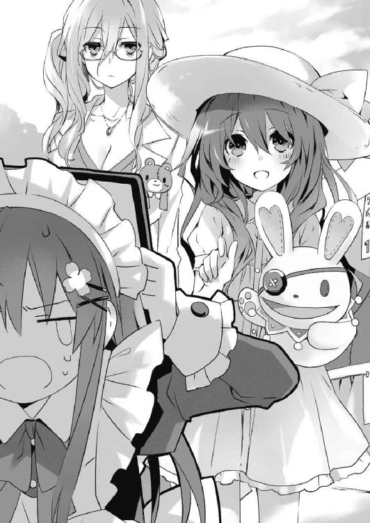
「......ああ。ここ最近は女装にも慣れ、グロスを塗るときの仕草が女子にしか見えなくなってきたが、決して彼が好きでやっているわけではないんだ」
「何吹き込んでるんですか令音さん!?」
たまらず立ち上がり、叫ぶ。が、令音は不思議そうに首を傾げるのみだった。
「......フォローのつもりだったのだが......」
士道はがっくりと肩を落とした。実際、彼女は本当にそのつもりだったのだろう。かえって質が悪かった。
......というか、いつの間にそんなに手慣れてしまっていたのだろうか。魔道に堕ちないよう注意しようと心に決めた士道だった。
心臓の鼓動を落ち着けるように深呼吸をしてから、四糸乃に向き直る。
「入っていくんだよな？ ちょっと混んでるけど、今なら並ばず入れると思うぞ？」
「あ......は、はい」
「......では、お邪魔させてもらおうかな」
言って、令音が四糸乃を連れて、メイドカフェに入っていこうとする。
と、そこで四糸乃がくるりと振り返ったかと思うと、
「あの......ステージも、楽しみにして、ます」
そう言って、ぐっと右手を握ってみせてきた。
「おう、見ててくれ。頑張るよ」
言って、麦わら帽子越しに四糸乃の頭を撫でる。四糸乃はくすぐったそうに、そして少し恥ずかしそうに身を捩ったが、帽子のつばのせいで表情は見取れなかった。
四糸乃がぺこりとお辞儀をし、メイドカフェに入っていく。士道はその背を見送りながら小さく笑った。
思わぬところで勇気をもらってしまった。これは何が何でも勝たなくてはなるまい。
と──
「......ん？」
令音と四糸乃がカフェ内に入ってから数分。客の数が店のキャパシティをオーバーし、行列ができはじめた頃、何やら辺りがにわかにざわつき始めた。
「何かあったんですか？」
不思議に思い、近くにいたメイドに尋ねてみると、メイドは緊張感に満ちた面持ちのまま「あれ......」と短く言って、一号館との連絡通路の方を指さした。
そこには、いつの間にか黒山の人だかりができていた。無論、会場内にはたくさんの人がいるわけではあるが、その周囲だけ人口密度が明らかに違う。
一拍おいて、士道はその集団の正体に気づいた。
同時に、人混みが一気に左右に割れ、その中心から、モーセのごとく制服姿の少女が一人、悠然と歩いてくる。
その周囲には彼女と同じ濃紺のセーラー服に身を包んだ女子高生の一団が見受けられた。よく見てみると、テレビカメラを抱えた撮影クルーまでもが彼女の姿を追っている。
見間違えようがなかった。それは。
「誘宵......美九」
小さな声で、その名を発する。
まさかそんな士道の声が届いたわけでもあるまいが、美九がそれとまったく同じタイミングで士道に気づいたように眉の端を動かした。
そしてゆったりとした足取りのままメイドカフェの方に近づいてきて士道の前に立つと、にぃっと唇の端を上げる。
「おはようございます、士織さん。随分ご盛況のようですねー」
「......それはどうも。そっちには及ばないけどな」
人混みに囲まれた士道は、落ち着かない心地をどうにか押さえながらそう返した。
「ふふ、似合ってますよー、その格好。いいですねぇ。士織さんが私のものになったら、ずっとそのお洋服でいてもらうのも面白いかもしれませんねー」
美九の発言の真意を測りかねてか、周囲に集まった人々がざわめき出す。何やらテレビカメラが、美九と士道を交互に撮り始めた。......なんというか、落ち着かない。
美九も鬱陶しげに首を回すと、周囲のテレビクルーに向かって声を発した。
【──邪魔です。どこかへ行ってください】
「......！」
美九がそう言った瞬間、美九の周りに集まっていた人だかりが急に辺りに散らばっていった。テレビクルーどころか美九の取り巻きの生徒までもが立ち去り、ついには美九一人になってしまう。
小さく眉をひそめる。間違いない。この感覚は......美九の家で聞いたのと同じ『声』だ。
「ふう、ようやくすっきりしました。もっと早くこうしておけばよかったです」
「......それはそれは」
ここで霊力について言及するわけにもいかない。士道は頬に汗を垂らしながら言った。
「......それで？ 一体何の用だってんだ？ 敵情視察にしては目立ちすぎじゃないか？」
「そんなんじゃないですよー。ちょっと、お誘いにきたんです」
「お誘い......？」
士道が怪訝そうに首を傾げると、美九が「はいー」と気の抜けた返事をしてきた。
「ちょっと士織さんと、デートしようかと思いましてぇ」
「......は？」
士道は美九の発した言葉の意味がわからず、目を見開いた。
「デー......ト？」
その単語を復唱してから、士道はハッと肩を揺らした。今の会話を十香や八舞姉妹に聞かれていたら、また厄介なことになると思ったのだ。
しかし幸いなことに、三人はそれぞれ士道の前方で客引きをしており、美九との会話に気付いていないようだった。ほうと息を吐いてから、美九に視線を戻す。
「ええ。駄目ですかー？」
「いや、それは......」
士道はしばし悩んだあとに、口を開いた。
◇
陸上自衛隊天宮駐屯地第二格納庫には、不自然な沈黙が満ちていた。
深夜でもないというのに、ＡＳＴ隊員や整備士の姿がまったく見受けられないのである。まるで──誰かが何らかの意図をもって人払いでもしているかのように。
鍵のかかっていない裏口から庫内に侵入した折紙は、無言で目的の場所に目を向けた。
「............」
乾いた足音が、いやに辺りに反響する。
折紙はその乾いた音とともに動悸が高まっていくのを感じながら、静かに深呼吸をした。
その装いは、来禅の制服でも今日着る予定だったステージ衣装でもなく、ＡＳＴの基本装備である黒の着用型接続装置である。人間が精霊に対抗するために纏う魔術の鎧。折紙の意識を最大に研ぎ澄ます戦闘装束。
とはいえ今は空間震警報が鳴っているわけでも、これから訓練があるわけでもない。折紙がそれを身に纏っているのには、別の理由が存在した。
「............」
無言のまま、格納庫のとある区画の前で足を止める。
見るところによると、セキュリティが全て切られている。これでは何者かが格納庫に侵入し、ＣＲ─ユニットを持ち出しても、誰も気付かないだろう。
なんともおあつらえ向きな状況である。折紙は眼前に聳えるユニットを見上げた。
「......士道」
言って、のどを唾液で湿らせる。
燎子の盛大な『独り言』を聞いたのち、折紙はすぐにジェシカたちの行動を探り始めた。
とはいえ、そこまで大層なことはしていない。正しく言うと、する必要がなかった。
折紙が問うと隊員たちが皆、『独り言』を呟き始めるのである。あのとき言葉を濁したミリィですら、あとで電話をかけたら愚痴交じりにペラペラと事情を喋ってくれたのだ。
──その作戦要項を聞き、折紙は戦慄した。
精霊たる十香はともかく、なぜ士道までもが狙われているのだろうか。......折紙がそんな疑問を持ったのはほんの一瞬のことだった。
なぜなら折紙には、思い当たることがあったのだから。
六月。士道は折紙の前で、〈イフリート〉の回復能力を発現させてみせたのである。
精霊の力を、使う人間。
否──正しく言うのであれば、精霊の力を奪い取ることのできる人間、だろうか。
一体なぜ士道にそんな力が備わっているのかはわからなかったが......もしもそのことがＤＥＭインダストリーに伝わっているのだとしたら、捕獲対象に士道が入っているのもうなずける。
そしてそんな彼がＤＥＭインダストリーに捕獲されてしまったなら、一体どんな扱いを受けるのかは想像に難くなかった。
「......させない」
折紙は低い声でそう言うと、足を一歩前に踏みだした。
目の前に安置された人間の英知の結晶──戦術顕現装置搭載ユニットに向かって。
恐らくＣＲ─ユニットを無断使用すれば、今度こそ懲戒は免れまい。折紙は記憶処理を施されたのち隊から除名され、一生顕現装置に触れることができなくなるだろう。
それは即ち、折紙の両親を殺した精霊への復讐の手段を失うことと同義である。
「......っ」
それが頭を掠めた瞬間、折紙は一瞬足を止めた。
だが、ギリと奥歯を噛み、歩みを進める。
修学旅行の際、士道が危険に晒されているというのに、何もできなかったときの無力感が意識を満たしたのである。
あのとき、顕現装置を、ＣＲ─ユニットを持たない折紙は何もできなかった。
だが──今は、違う。
「今度こそ......救ってみせる」
たとえこの行為によってＡＳＴを追われることになろうとも、士道に危害を加えさせるわけにはいかなかった。
両親を失った折紙の、最後の心の拠り所を、失うわけにはいかなかった。
ユニットの端子に手の平を触れさせ、認証を開始する。
低い駆動音とともに、その金属塊は最強の兵器へと変貌した。
◇
「はい、士織さん。ストロベリークリームですよね？」
「あ、ああ......」
士道は困惑した様子でうなずきながら、美九から綺麗にデコレーションされたクレープを受け取った。
美九は満足げに微笑むと、もう片方の手に持っていたチョコバナナクレープにあんむっ、とかぶりつき、なんともまあ幸せそうな顔を作った。
「んん～、たまらないですねー。このままお店出せちゃいますよー」
言って、美九が制服のスカートを揺らしながら身をくねらせる。
そんな様子を見ながら、士道は頬に汗をひとすじ垂らした。
「......何やってんだ、俺」
『ぼやいてんじゃないわよ。向こうから誘ってくれるなんて好都合じゃない』
すると、右耳のインカムから琴里の声が聞こえてくる。
『ステージで雌雄を決するとはいえ、好感度を上げておいて損はないわ。もし竜胆寺に勝ったとしても、美九の好感度が下がってしまったら霊力を封印できないんだからね』
「まあ、そりゃあそうなんだが......」
言いながら、頬をぽりぽりとかく。ちなみに決するまでもなく雌と雄は決まっているのだが......また罵倒されそうなので口に出すのはやめておいた。
そう。今士道は、メイドカフェを十香たちに任せ、美九に誘われるまま文化祭デートに繰り出していたのである。
今からステージ部門で勝負をする相手と一緒に遊んで回るというのはなんとも妙な気分だったが、琴里の言うことも確かである。ここは素直に美九に付き合っておいた方がいいだろう。
『今度は間違っても美九を嫌いとか言うんじゃないわよ』
「......わかってるよ」
「あらー？」
士道が小声で琴里と会話していると、美九が不思議そうな声を発してきた。
「食べないんですかー？」
「！ いや......いただくよ」
慌てて手にしていたクレープを口に運ぶ。薄い生地に包まれた生クリームの甘さと苺の酸味が口の中に広がった。生地の焼き方が上手いのだろうか、シンプルではあるものの、確かに路上で販売しているそれに見劣りしない出来映えである。
「ん......美味い」
「うふふー、それは何よりです」
美九はそう言うと、次の瞬間、パクッと士道のクレープにかぶりついた。
「わっ!?」
「んー、こっちも美味しいですねぇ。いい仕事ですー」
ほっぺたをさすりながら、美九が満足げに言う。
そこで士道の驚き顔に気づいたのだろう、あははと笑いながら自分の持っていたチョコバナナクレープを差し出してきた。
「はい、これでおあいこです」
「え、ええと......」
『何躊躇してんのよ。がぶっといきなさい、がぶっと』
琴里に後押しされ、促されるままにクレープを一口いただく。......美味しいことは美味しいのだが、正直あまり味がわからなかった。
「美味しいですかー？」
「あ、ああ......美味いよ」
「ふふ、間接キスですねー」
「ぶふッ！」
気にしていながらもあえて言わなかった言葉をさらっと発され、士道は思わず噴き出しかけた。どうにかクレープは口の中にとどめたものの、軽く咳き込んでしまう。
「ごめんなさい、士織さんはピュアなんですねー」
美九が笑いながら背中をさすってくる。
「い、いや......大丈夫。ちょっと驚いただけだ」
士道は呼吸を落ち着け、小さくうなずいた。
美九はそんな士道を見てもう一度優しげに微笑むと、手にしていたクレープをパクパクと食べきり、会場の先を指さした。
「さ、ステージ開始まであまり余裕もありませんし、もっと回ってみましょう」
「あ......ちょっと」
美九が急に手を引いてくる。士道は慌てて残りのクレープを口に放り込んだ。手元に残った包装紙をエプロンのポケットに押し込み、美九についていく。
そして美九の気の向くまま、飲食ブースを抜け、射的や簡易おばけ屋敷などが並んでいるエリアへと進んでいった。
「......なあ、美九」
そんな道中、士道は前を行く美九の背に向かって声をかけた。
「はいー？ なんですか、士織さん」
「なんでまた、こんなときに俺を誘ったんだ？」
士道が問うと、美九は後方に視線を寄越してきた。
「だって、今日の結果が出たら、士織さんは私のものになるわけじゃないですかー。だから今のうちに、私のじゃないレアな士織さんを味わっておこうと思いましてー」
「............」
美九の中ではもう、自分の勝利は決定事項らしい。士道はぎりと奥歯を噛むと、鋭い視線を美九に向け返した。
「お言葉だけどな、俺たちは今日、本気で竜胆寺に勝つつもりだ。そっちこそ、覚悟を決めておいた方がいいんじゃないのか？」
「ふふふー、できますかねぇ？」
「約束は守ってもらうぞ」
「わかってますよー。士織さんこそお忘れなく」
士道の言葉などさしたるプレッシャーにもならないといった様子で、美九が笑う。
勝負を控えているというのに、なんとも信じがたい気の抜け具合だった。なんだか調子を乱される気がして、士道は頭をくしゃくしゃとかいた。
と、しばらく歩いたところで、美九が小さく声を発する。
「士織さん士織さん、見てください。輪投げですって。やっていきましょうよ」
言って美九が指さした先には、縁日の屋台のようなスペースが広がっていた。赤い敷物の上に景品がいくつも並べられている。
「輪投げ......か」
「はいー。どれが欲しいですかー？ 私が取ってあげますよー」
「え？ えー......じゃあ、あれで」
急に問われて迷った士道は、比較的手前の方に置いてあった猫のぬいぐるみを指さした。
「おーけいです。任せてくださいねー」
美九が腕まくりをするような仕草を見せながら、側にいた女子生徒にお金を払ってプラスチック製の輪を三本受け取る。そして、
「ほいやっ！」
変なかけ声とともに一つ目を投げる。輪は明後日の方向に飛んでいった。
「はいっ！ そりゃっ！」
諦めずに残りの二つを投げるも、やはり輪は景品にかすることもなく地面にカラカラと落ちた。......とんでもないノーコンである。
「あらー、難しいですねー」
「はは......」
『士道、何笑ってるのよ。美九が駄目ならあなたが取ってあげなさいな』
士道が苦笑していると、右耳の鼓膜が震わされた。
「ああ......なあ美九、よかったら──」
だが、士道が言いかけたときには、美九は再び女子生徒に声をかけていた。
もう一度トライしようとしているのかと思ったが......違う、美九がその女子生徒にかけていた言葉は。
【その猫のぬいぐるみを、ください】
そんな、『おねがい』だった。
「......はい、少々お待ちください」
女子生徒がぼうっとした顔でうなずき、敷物の上からぬいぐるみを取って美九に手渡す。
美九はそれを受け取ると、満面の笑みを浮かべながら士道に差し出してきた。
「どうぞ、士織さん」
「......いや、何やってんだよ、おまえ」
士道が言うと、美九は士道の言っていることが理解できないといった様子で首を傾げた。
「これじゃありませんでした？ じゃあ取り替えてもらい──」
「そうじゃない。......違うだろ、そういうのは」
「えっと、じゃあどうすればいいんですかぁ？」
悪気や良心の呵責が一切見受けられない表情で、美九が問うてくる。士道は、先日美九の自宅で感じたのと同じ、途方もない気持ち悪さを覚えた。
「......景品は、ちゃんと輪を投げて取らなきゃいけないんだ」
「ええー、じゃあ、取れなかったらどうするんですかー？」
「そりゃ......諦めるしかないだろ」
「え、なんでですかぁ？」
「なんでって......それがルールだからだよ。そんなことがまかり通ったら、輪投げ屋やってるあの子たちに悪いだろ？」
美九はキョトンと目を丸くした。
「悪い？ 私にもらってもらえるだなんて、あの子も嬉しいんじゃないですか？」
「いや、おまえな......」
「だいいち、それじゃ士織さんにプレゼントができないじゃないですかー」
「だからって、そんな方法で取ったもの、貰えねえよ」
「ええー......」
美九が不服そうに「ぶー」と唇を尖らせる。士道は困り顔を作って頭をかいた。
この少女は、自分の行いを悪いと思っていない。士道に猫のぬいぐるみをプレゼントしたいという欲求に従って、自分にできて当然の手段を使っているだけなのだ。
少し考える時間を挟んだこともあってか、先日感じた美九への印象は少し変化していた。
そう。思えば──十香も似たようなものだったのである。
霊力を封印する前の十香も、ＡＳＴ以外の人間と触れ合う機会がなかったためか、士道を攻撃してきたり、たくさんの人間を見ると一掃しようとしたりしていた。
だが、今は手探りながらもなんとか、皆と上手くやっていけている。
美九の場合は、その『声』によって人間を自由に操れてしまうことが問題だった。
「大丈夫ですよー。どうせ人間なんて、私の駒兼おもちゃなんですから。士織さんが気にすることなんてないんです。だって士織さんは私が直接認めてあげた特別な存在なんですよ？ 有象無象の人間なんて、好きにすればいいんです」
「......あのな」
屈託のない瞳で言う美九に、苦々しい声を発する。
「............」
士道はぐっと拳を握った。
この少女は、誘宵美九は、決して悪い子ではない。ただ、その能力ゆえ、価値観がねじ曲がってしまっているだけなのだ。
時間はかかるだろう。労力もかかるだろう。だがそれでも......十香たちと同じように、皆と共存できる可能性は十分にあった。
そのためには──何としても彼女の霊力を封印しなければならない。
彼女を普通の人間と同じ場所に立たせなければ、彼女はずっとこのまま、人間を駒かおもちゃくらいにしか見れないままなのである。そんなのは......哀しすぎた。
「やっぱり、俺はおまえに勝つよ。......おまえに、『人間』と話をさせるために」
「人間と......って。もういっぱい話してますよー？ おかしなことを言うんですねー」
「今はわからなくていい。だけど、覚えておきな。人間ってのは、おまえの駒やおもちゃに収まってくれるほど、従順で都合のいい奴らじゃないってことを」
「......何言ってるんです？」
士道の言葉に、美九は嘲笑めいた笑みを浮かべた。
「人間なんて簡単なものですよ。どうにだって操れるんです。士織さんも、あまり気をかけすぎない方がいいですよー？ あれは愛玩するくらいしか使い道がないんですから」
「はん、人間を舐めるなよ。なんでも思うようにいくと思ってたら足をすくわれるぞ」
「へぇー......」
美九は興味深そうに目を細めた。
「じゃあ、試してあげましょうかー」
「......？ どういうことだ？」
不審そうに眉をひそめながら問うが、美九はそれ以上答えなかった。
「うふふー、じゃあ、ちょっと名残惜しいですけど、今日のデートはここまでにしましょうか。ステージで待ってますよー。──士織さんがステージに立てたらの話ですけど」
唇に触れさせた指を弾き、士道に向けてから、踵を返して去って行く。
「何だってんだよ......一体」
士道は、その背を見つめて怪訝そうに言った。
──が、その数時間後。美九の言葉の真意は知れることとなった。
時刻は一二時。ステージ裏の控え室には、各校の代表が続々と集結し始めていた。
控え室、と名はついているものの、出演者全員を収めても随分と広さには余裕があった。それもそのはず、本来はセントラルステージ裏にある小ホールだった場所が、控え室用に開放されているらしい。実際それを示すように、部屋の奥にはドラムセットやキーボードなどの楽器が設えられている。
士道も、仕事を他のメンバーに引き継ぎ、控え室に足を運んでいた。
だが、小ホールに集まったのは士道と十香だけで、いつまで経っても亜衣麻衣美衣の姿が見えなかったのである。
「......ったく、何やってんだあの三人は......」
腕組みしながらうめき、時計を見やる。もう集合時間を二〇分も過ぎていた。そろそろ最初のステージが始まってしまう頃だろう。
しかも、問題はそれだけではなかった。朝から姿の見えない折紙もまた、この場に来ていないのである。幾度か電話をしてみるも、電源が入っていないようで一向に繋がらない。
「むう......皆はどうしたのだ？」
十香が首を傾げてくる。士道は首を振って「わからない」とジェスチャーで示すと、琴里から支給された士織ちゃん仕様のデコ電を操作し、亜衣に電話をかけてみた。
数秒のコール音のあと、電話口から亜衣の声が聞こえてくる。
『もしもーし......士織ちゃん？』
「！ 山吹さん、今どこにいるんですか？ 早く来てください！ 葉桜さんと藤袴さんも見当たらないんですけど......心当たりはありませんか？」
『あー、麻衣と美衣？ それならー』
『こーこーにー』
『いるーよー』
電話口の向こうから、麻衣と美衣の声が聞こえてくる。
「何してるんですか！ ステージ始まっちゃいますよ!?」
士道が叫ぶと、亜衣たちは『んー』と気のない返事を返してきた。
『悪いんだけどさー、私たちステージ出るのやめとくわ』
不意に発された予想外の言葉に、思わず息を詰まらせる。
「い、一体なんでですか？ みんなで頑張って練習したじゃないですか！」
『えー？ だってぇ......美九お姉様が、やめろっていうんだもーん』
「......ッ！」
その言葉を最後に、亜衣は電話を切った。
つー、つーという音が、空しく士道の鼓膜を震わせる。
「シドー、亜衣はなんと言っていたのだ？」
十香が不思議そうに聞いてくる。士道は震える声をなんとかのどから絞り出した。
「ステージに......出るのを、やめるってよ......」
「む!? な、なぜだ!?」
「それは......」
士道はぎゅっと唇を噛んだ。
恐らく──亜衣麻衣美衣は、美九に『お願い』されたのだ。
精霊の加護を持った士道でさえ意識を乱されかけた『声』である。美九にあんな至近距離で囁かれたなら、常人である三人が抗うのは不可能だろう。
一瞬、折紙も美九の毒牙にかかったのかと思ったが......それならば電話に出てもいいはずであるし、朝から姿を消している理由がわからない。
だがどちらにせよ、状況は最悪だった。何しろ六人のバンドメンバーのうち四人──ベースとキーボードとドラムス、それに何よりボーカルが抜けてしまったのである。残ったのはギターとタンバリンのみ。これではまともに演奏できるわけがない。
「く、一体どうすれば......」
と、士道が髪をくしゃくしゃやりながらうめきのような声を発していると、前方から楽しげな笑い声が聞こえてきた。
「うふふー」
いつの間にかステージ衣装に着替えた美九が、朗らかな笑みを浮かべて立っていたのである。人魚姫をイメージしているのだろうか、海を思わせる色合いのドレスに、可愛らしい貝殻の意匠が施されたアクセサリーがちりばめられていた。
「どうしたんですー？ 可愛いお顔が台無しですよー？」
「美九、おまえは......ッ！」
思わず叫びかけるが、どうにか怒気を収める。
今美九を糾弾したところで、どうにもならない。美九の行為を不正と呼ぼうにも、霊力の籠もった『声』のことなど説明しようがないのである。
美九もそれをわかっているのだろう。愉快そうに笑うと、くるりとスカートを翻した。
「もうすぐ私のステージです。よぉく見ていてくださいねー」
言って、歩き去って行く。
「ぐ......っ、あいつ......」
悔しげに歯がみし、美九の背を睨み付ける。
だが、そんなことをしたところで事態が好転しないのはわかりきったことだった。
「ど、どうしたのだ......？」
十香が訝しげに問うてくる。士道はくしゃっと髪を掻きむしった。
「......ちょっと考えさせてくれ」
士道はそう言うと、考え事をするようにあごに手をあてながら壁の方に向かって歩いて行った。そして右耳のインカムに向かって、ひそめた声を送る。
「......琴里、琴里」
『──何か用？ ステージ前の緊張でも解して欲しいのかしら？』
ほどなくして、琴里の軽口が聞こえてくる。
「いや......そうじゃなくてだな」
士道は簡潔に、亜衣麻衣美衣が美九の手に落ちてしまったこと、そして折紙までもが本番直前で戦線離脱してしまったことを伝えた。
『なるほどね......美九め、ずるっこい手段を使ってくれるじゃない』
琴里が吐息してから返してくる。こちらから琴里の姿は見えないのだが、やれやれと肩をすくめている様子が容易に想像できた。
「俺たちの出番まであと二時間もない。一体どうしたもんか......」
『仕方ないわ。とりあえず、ボーカルは最初の口パク案で乗り切りましょ』
「大丈夫なのか、それ......」
『少なくともぶっつけ本番で士道の美声を披露するよりは幾分かマシだと思うけれど』
「まあ......それもそうか。でも音源持ってきてないぞ」
『大丈夫よ。既に運営に何人か機関員を潜り込ませてるわ。士道たちの番になったら曲に合わせて流してあげるから安心なさい』
「......さすが」
なんとも準備万端な妹様である。士道は感嘆を込めてそう呟いた。
「でも、それでもまだ人数が足りないぞ。十香に他の楽器ができるとは思えねえし......」
『そうね......ふむ、全部は無理だとしても、二つは都合がつくかもしれないわ。補充要員を送り込むから合流してちょうだい』
「補充要員って......ちょっと待てよ。いくら上手い人を送り込まれても、来禅の生徒じゃないってバレたらその瞬間に失格だぞ？」
『私が何とかするって言ってるのに心配するだなんて、士道も偉くなったものね』
嘲笑するように鼻を鳴らし、琴里が言ってくる。士道はぐうの音も出なかったので「ちょき」とでも言おうとしたが、とりあえず黙っておくことにした。
『にしても、舐めた真似してくれたわね。向こうがそのつもりなら考えがあるわ』
と、士道に指示を出し終えた琴里が、不穏なことを言い出す。士道は額に汗を滲ませた。
「お、おい。妨害はしないんじゃなかったのか？」
『そのつもりだったけれど、正直今のままじゃ確実に勝てるとは言えないわ。先に仕掛けてきたのは向こうなんだし、遠慮無く手を尽くさせてもらおうじゃないの』
「ちょ、あんまり手荒なことは......」
と、琴里に言いかけたところで後方からぐいと手を引かれ、士道は身体の向きを変えられた。見やると、十香の仕業であることがわかる。
「うおっ？ な、なんだよ十香」
「うむ、美九のステージが始まるらしいぞ」
「美九の......」
言われてみれば、先ほどまで出演者で溢れていた控え室には、士道と十香しかいなくなっていた。どうやら、皆ステージを見に行ってしまったらしい。
『せっかくだし、敵の実力を見てらっしゃい。補充要員の到着にはもう少し時間がかかるわ。どうせうんうん唸ったっていい案なんて出てきやしないわよ』
インカム越しに琴里が言ってくる。
「......そうだな」
士道は小さくうなずくと、十香と一緒に控え室から出て行った。
そして長く暗い階段を上ると、セントラルステージ天井近くの壁に沿って設えられたキャットウォークのような通路に出る。
そこにはスタッフに混じって、先ほどまで控え室にいた出演者たちが見受けられた。
「この辺でいいか......」
「うむ、特等席だな！」
十香が無邪気に目を輝かせる。今から見るステージを上回るパフォーマンスをしなければならないのだが......本当にわかっているのだろうか？
と、それと同時に、照明の落とされていたステージの中央に、カッ、カッ、と多方向から青いスポットライトが照射された。
そしてその中央にいた美九が、マイクを口元に持っていき、静かな曲調に合わせて声を発する。
──瞬間。
ぞわッ、と。鳥肌が立つかのような感覚が、体表を通り抜けていった。
次いで、段々と曲調が明るくなっていくにつれて、ステージに注がれていた光が強くなっていき──背後に控えていたバックダンサーたちの姿が明らかになった。美九の振りも大きく、激しくなっていく。それに伴って、会場のテンションもどんどん上昇していった。
「......すげえ」
士道は半ば呆然と呟いていた。
それくらい──それこそ、アイドルやら何やらにあまり興味のない士道が一瞬意識を奪われるくらいに、美九のステージは圧倒的だった。
衣装、ダンス、バックダンサー、演出、果てはサイリウムを振り歓声を上げる観客に至るまでが全てピタリと噛み合っているかのような、完璧な空間が作り出されている。
今ならば、ライブで失神してしまうファンの気持ちが少しだけ理解できた。熱狂。見渡す限りに居並んだ幾人もの観客が、文字通り美九の歌によって熱く、狂っていた。
が──
「......ッ!?」
その熱狂が絶頂に達しようとした瞬間、士道は眉をひそめた。
恐らく十香も、それどころかこのセントラルステージにいる人間全員が、同じような顔を作っていただろう。
何しろ、曲が二番に差し掛かろうとしていたところで、急に照明が落ち、ステージが真っ暗になってしまったのだから。
否、それだけではない。大型スピーカーから流れていた曲も、照明が消えると同時にぷっつりと途絶えていた。
異様な事態に、観客席にどよめきが広がっていく。
しかし、皆が混乱している中、士道だけは思い当たる可能性に目を見開いていた。
「これ、まさか......」
『ご名答』
士道が呼びかけるよりも早く、琴里が答えてくる。
『会場の設備を少しいじらせてもらったわ。ま、ほどよく白けたらまた再開させてあげるわよ。もちろん、また盛り上がってきたらオフらせてもらうけどね』
「............」
士道はポリポリと頬をかいた。我が妹ながらエグい手を考えるものである。確かにこれなら、効果的に皆の熱を冷ますことが可能だろう。如何に素晴らしいステージであろうと、見ることができなければ意味がない。
──だが。
「......え？」
士道は小さくのどを震わせ、ステージに再び視線を送った。
真っ暗だったステージの中央に、ぼんやりとした光が現れたのである。
次いで、皆のざわめきを抑えつけるように、澄んだ声が聞こえてくる。
「──〈神威霊装・九番〉！」
その声と同時、淡い光が美九の身体に纏わり付き──光のドレスを形作っていった。
身体のラインに沿うように張り付いたトップス。ボリュームのある袖。それらを包むように展開したボレロ状の光の帯。そして──光のフリルが幾重にも折り重なった煌びやかなスカート。
それら全てが顕現したのちに、美九の髪に月を模した髪飾りが輝く。
そう。それは、士道が無人のアリーナで目にした美九そのものだった。
『まさか......霊装を顕現......ッ!? こんなところで!?』
琴里の声が痛いくらいに鼓膜を叩く。
だがそれも無理からぬことだった。霊装。精霊を守る絶対の盾にして城。濃密な霊力の糸で編まれた強固なる鎧。
それを顕現させるのは、精霊にとって臨戦状態を表すことに他ならない。実際今まで精霊たちが霊装を纏ったのは、自分を害する敵が面前に現れたときのみだった。
だが、観客たちにその衣服が何を示すのか理解できるはずもなかった。目の前で展開された世にも不思議な光景は、彼らの中で先進技術を駆使した大がかりな演出と受け取られたらしい。会場を包む歓声が、より一層大きくなる。
「──上げていきますよー。ここからが本番です!!」
美九はマイクもなしに、会場中にその透き通った声を響き渡らせた。
それに応えるように、再び会場中が熱狂の渦に沈む。
そこからはもう、美九の世界だった。
スピーカーは死んでいる。照明は消えている。マイクもなければアンプもない。
それなのに、美九の演奏は、声は、その姿は、会場の隅々にまで染み渡った。
もう先ほどの一件をアクシデントなどと思っている者は、この会場にいるまい。全ては──演出。美九の姿を一層際立たせるための。美九の声を一層響かせるための。
全てが、美九の存在感に呑み込まれていく。
彼女は、完璧に、圧倒的なまでに──『アイドル』だった。
──美九が両手を広げると同時、曲が終わる。
今までよりも一層凄まじい大歓声が、会場を包み込んだ。
「──ふふ、ありがとうございます」
額に浮かんだ汗を拭いながら、美九がぺこりとお辞儀をする。すると今度は割れんばかりの拍手が、ステージから去って行く美九を祝福した。
「............」
「うむ、凄かったな！」
士道が無言で額に手を置き、十香が屈託のない感想を述べる。
美九がいなくなってからも、しばらくは拍手が鳴り止まなかった。士道たちは、そんな地鳴りのような拍手の中、階段を下りて控え室へと戻っていった。
控え室には誰もいなかった。他の出演者たちは次以降のステージもチェックするつもりなのだろう。......否、もしかしたら、あまりに圧倒的な美九のステージを目の当たりにして、放心状態になっているのかもしれなかった。
「どうしたのだ、シドー。元気がないと勝てるものも勝てなくなってしまうぞ？」
「......そうだな」
力ない笑みを浮かべる。十香は今ひとつその意味がわからない様子で首を傾げた。
いや、十香の言うことはまったく正しいのだ。相手がどんなに素晴らしいパフォーマンスをしたからといって、それに呑まれてしまっては、勝負以前の問題である。
だが、どんなに振り払おうとしても嫌な予感が晴れないのだった。歌の方はなんとか代案が立ったとはいえ、亜衣、麻衣、美衣の穴を埋める補充要員とやらの正体すら知れない現状では、安心のしようが──
と、その瞬間、控え室の扉がゆっくり開かれたかと思うと、うなだれた士道の頭上に、どこかで聞いたような声が響いてきた。
「くく、随分と昏い貌をしているではないか。亡者に足を搦め捕られているかのようだ」
「落胆。覇気がありません。それでは戦う前から負けています」
「......ッ!?」
その声に弾かれるように、士道はバッと顔を上げた。
そこに立っていたのは、メイド服に身を包んだ二人の少女だった。
「耶倶矢！ 夕弦！」
十香が驚いたように目を丸くし、二人の名を呼ぶ。
「二人とも......なんでこんなところに」
士道が言うと、ぐっと二人で腕を組んでみせた。
「くく、琴里から聞いたぞ。どうやらメンバーが足りなくて困っているようではないか」
「応援。もしよろしければその役、我々に任せてはいただけませんか？」
「え......？ じ、じゃあ、琴里の言ってた補充要員って......」
士道が問うと、二人はまったく同じタイミングでうなずいた。
「応、我らのことよ。くく......我ら八舞が力を貸してやろうというのだ。光栄だろう？」
「肯定。お任せください」
言って、自信満々といった調子で、何やらよくわからないポーズを取ってくる。
「ち、ちょっと待てよ二人とも。そりゃ心遣いはありがたいけど、そんな簡単に参加しますって言われても、本番までもう時間がないんだぞ？ 練習だってしてないのに──」
士道の言葉の途中で、耶倶矢と夕弦は目を合わせると、部屋の奥に設えられていた楽器の方に悠然と歩いて行った。
そして、耶倶矢がドラムスの前に座り、夕弦がベースを握る。
すると次の瞬間、二人は何の合図もなしに演奏を始めた。
「え......!?」
思わず、そんな声を出してしまう。
一言で言うのなら──二人の演奏は、とんでもなく上手かったのである。
情熱的かつパワフルでありながら調和を失わず、皆を導くようにリズムを刻むドラムスに、流れるような指使いによって流麗に奏でられるベースの旋律。
素人の耳にも、凄まじさが容易に理解できる。ここに芸能プロダクションの人間がいたなら、即座に名刺を渡してもおかしくないレベルのセッションだった。
「ま......こんなものか」
「吐息。ふう」
演奏を終えた二人は歩み寄ると、パチンとハイタッチを交わした。
「な、なんでそんなに上手いんだ、二人とも」
問うと、耶倶矢と夕弦がちらと一瞬目を合わせ、にっと唇の端を上げた。
「くく......舐めるでないぞ人間。斯様なもの、我らは既に勝負を済ませておるわ」
「確認。確か第七二試合『嵐を呼ぶドラマー対決』と、第八四試合『ベストベーシスト賞対決』です。ちなみに前者は耶倶矢が、後者は夕弦が勝利しました」
言われて、士道ははたと思い出した。
そういえば耶倶矢と夕弦の二人は、士道と出会う遥か前から、二人で何度も対決を繰り返していたのだった。ただ殴り合うだけの戦闘に飽き、様々な勝負をしていたとは聞いていたが......まさかこんなものまで。
「......なあ、士道よ。我らは御主のお陰で二人一緒にいることができている」
「誓願。今度は是非、夕弦たちに助けさせてください」
耶倶矢と夕弦が言ってくる。
無論、美九は難敵である。加え、会場は美九のファンで埋め尽くされている。完璧なパフォーマンスをしたところでそう易々と勝ちをもぎ取れるような相手ではない。
だが──士道はごくりと唾液を飲み下した。
二人の手を取ると、バッと顔を上げる。
「......おう......ッ！」
◇
頭の中で指令を発しながら眼球を左下の方に向けると、網膜に小さな数字が投影された。 14:55──作戦開始まであと五分。
天宮スクエア上空に浮遊したジェシカ・ベイリーは、ペロリと唇を舐めた。
「さて......そろそろ時間ネ。皆、準備はいイ？」
『了解』
ヘッドセットから一斉に部下の声が聞こえてくる。ジェシカは満足げにうなずいた。
今天宮スクエア上空に展開しているのは、ジェシカを含む第三戦闘分隊一〇名に、遠隔操作型の戦闘人形〈バンダースナッチ〉が二〇機という、豪華極まるラインナップだった。
しかもジェシカたちは今その身に、一〇・五cmレイザーカノン〈メリーラム〉を始めとして、マイクロミサイルポッド〈トゥインクルスター〉、レイザーエッジ搭載型単分子カッター〈キング・コール〉など、まだどこの国にも配備されていない、ＤＥＭインダストリーの最新装備を纏っていたのである。
如何に相手がＡＡＡランク精霊〈プリンセス〉といえど、この集中砲火を浴びてはひとたまりもあるまい。
ジェシカはニィと破顔し、眼下に広がる天宮スクエア東部ブロックを見下ろした。
あと数分で、セントラルステージにターゲットである夜刀神十香が立つという。
まずはこの位置からセントラルステージの天井を破壊、先遣隊である〈バンダースナッチ〉を突入させ、ターゲットを補捉する。
そして〈バンダースナッチ〉が補捉したターゲットに向けて再び砲撃を開始し──ダメージを負ったところを捕獲しようという作戦である。
もちろん、ジェシカとて快楽殺人者ではない。己の砲撃で少なからず死傷者が出てしまうであろうことを心苦しく感じる気持ちが、まったくないではなかった。
だが、そんな僅かな感傷は、精霊を捕らえるという大義と、ウェストコットの命令という甘美な響きによって完全にかき消されている。今のジェシカはステージの観客たちを、ジャガイモかカボチャの群れくらいにしか認識していなかった。
そして。ブザーがヘッドセットから鳴り響く。一五〇〇時。作戦開始の時間である。
「──さあ、時間ヨ。アデプタス４から12は所定の位置に移動。砲撃準備。〈バンダースナッチ〉も用意ヲ。アウター１以下二〇機、突入に備えテ」
『了解』
先ほどと同じように応答が響き、ジェシカの指示に従ってフル装備の魔術師たちと〈バンダースナッチ〉が展開していく。
「さあ......パーティの始まりヨ」
言ってジェシカは、レイザーカノンを天宮スクエアセントラルステージに向けた。
◇
同時刻、天宮スクエア上空一万五〇〇〇メートル。〈ラタトスク〉の所有する空中艦〈フラクシナス〉の艦橋に、けたたましいアラームが鳴り響いた。
「一体何事よ！」
艦長席に腰掛けた琴里は、突然のアラームに眉をひそめ、眼前に広がったモニタに目をやった。だが、会場内では特に異変らしき異変は起きていない。サイドモニタに表示された美九の精神パラメータにも、大きな変化は見受けられなかった。
「レっ、レーダーに反応！ 天宮スクエア上空に、ＡＳＴと思しき反応が二〇......三〇！」
「なんですって......!?」
クルーの報告に、琴里はさらに顔を歪めた。
それと同時、士道たちを映していたメインモニタがパッと空中の映像に切り替わる。
全身に仰々しいＣＲ─ユニットを纏った魔術師たちが一〇名、そして奇妙な機械の人形が二〇体ばかり、天宮スクエアのセントラルステージを見下ろすように浮遊していた。
「こいつらは......」
その姿を見て、琴里は舐めていたチュッパチャプスに歯を立てた。
明らかに日本人ではない隊員たち。そして先々月、士道たちの修学旅行先に現れたという無人兵器〈バンダースナッチ〉。どう見ても、通常のＡＳＴの編制ではなかった。
否──それ以前に、今は空間震警報が鳴っていない平常時である。無論近隣の住民はシェルターに避難していない......どころか、天央祭でひとところに集まってさえいる。常識的に考えれば、秘匿技術であるＣＲ─ユニットを纏って現れること自体あり得なかった。
「ＤＥＭの手の者......？ それにしたって、一体このタイミングでなぜ......」
琴里は、頭を過ぎる最悪の可能性にのどを鳴らした。
「まさか......」
改めて場所を確認する。天宮スクエア。天央祭が開催されている大型コンベンションセンターの真上。──十香に、四糸乃に、八舞姉妹、そして美九。実に五人もの精霊が揃っている空間。もし万が一、そんな情報をＤＥＭが得たとしたなら......
「く......」
普通に考えれば馬鹿げた想像だ。あんな場所で戦闘を行えば、夥しい数の死者が出ることは想像に難くない。いくらＤＥＭに首根っこを押さえられているとはいえ、日本の陸上自衛隊がそんなことを許すとは思えなかった。
だが、他に彼女らの目的が思い当たらないのもまた、確かである。
「司令、いかがなさいますか」
「......放っておくわけにもいかないでしょ」
とはいったものの、講ずる手段が限られているのが実状だった。眼下に天宮スクエアがある以上主砲で攻撃をするわけにもいかないし、〈世界樹の葉〉を飛ばした程度では、あれだけの数を掃討することは難しい。
そんな琴里の思案を感じ取ったのだろうか、神無月が静かな声を発してきた。
「よろしければ、私が出ましょうか」
「......仕方ないわね。頼ん──」
と、琴里が言いかけた瞬間。再び艦橋内にアラームが鳴り響いた。
「!? 今度は何事よ！」
「天宮スクエア上空にもう一つ、巨大な反応が現れました！ こ、これは──」
クルーの狼狽と同時に、モニタが切り替わり、新たな反応の主が姿を現す。
「な......まさか、あれは......」
その姿を見て、琴里はごくりと唾液を飲み下した。
◇
「なッ!?」
──引き金を引こうとした瞬間。前方の空がカッと輝くと同時、ヘッドセットから熱源の接近を示すアラームが鳴り響き、ジェシカは緊急回避行動を取った。
一瞬前までジェシカがいた場所を、凄まじい魔力の奔流が通り抜けていく。〈バンダースナッチ〉が一機巻き込まれたらしく、そのボディの上半分を吹き飛ばされた。
その馬鹿げた威力に、思わず顔を青くする。
魔術師のそれより精度は低いとはいえ、〈バンダースナッチ〉もその全身の周囲に随意領域を張り巡らせている。
防性特化させるような時間がなかったとはいえ、その不可視の壁を紙のように撃ち抜くなど、常識で考えればあり得ない話だった。
「な、何事ダ！」
『ぜ、前方に高エネルギー反応あり！』
『精霊......ではありません。生成魔力の反応です！ こ、これは......まさか──』
前方に広がっていた雲の合間から、それは姿を現した。
──それは、戦車か、さもなくば城とでも形容すべき異形の兵器の姿だった。
巨木のような砲門を二つ備えた、あまりに巨大な金属の塊である。その内側には、触れるものを断ち切るより先に蒸発させてしまいかねないほどの高出力レイザーブレイドが、後方には数多の武器を収めた無骨なウェポンコンテナが鎮座している。
そしてその中央。まるでエンブレムのように、一人の魔術師の姿が見て取れた。
──陸上自衛隊ＡＳＴの魔術師・鳶一折紙一等陸曹である。
「ァ......」
しかし、見覚えのある顔を認めてなお、ジェシカの震えは収まらなかった。
「馬鹿──な、まさか......〈ホワイト・リコリス〉......？」
呆然と声を発する。
その『怪物』の姿を、ジェシカは母国で一度だけ目にしたことがあった。
精霊を単独で殲滅するためには、一体どれくらいの戦力が必要か──
そんな、頭でっかちの情報部が机上の計算のみで算出した数値をもとに、愚直な開発部が作り上げてしまった『最強の欠陥機』。
テストユーザーをわずか三〇分の駆動で廃人にしてしまってからは、ＤＥＭの力と技術とユーモアの象徴として展示される他に用をなさなかったオブジェのようなものである。
確かに、報告を受けてはいた。
陸自に配備された〈ホワイト・リコリス〉を勝手に持ち出した挙げ句、精霊を仕留めることもできずに拘束された間抜け極まる魔術師がいると。
それを聞いたとき、ジェシカは当然と嗤った。何しろＤＥＭの魔術師ですらまともに運用することのできない装備である。ＡＳＴの跳ねっ返り者が調子に乗って動かしてみたはいいが、何をすることもできずにすぐ活動限界を迎えて気絶した......といったところだろうと思っていたのだ。
だが──それならば、今ジェシカの目の前に浮遊しているそれは──
「なぜ......貴様は〈リコリス〉を動かせていル......ッ！」
「............」
折紙は何も答えず、無言のままくいとあごを上げた。
同時に、左右に二門備えられていた巨大な砲門が、ジェシカたちの方を向く。
「く──目標変更！ 迎撃用意！」
ジェシカは金切り声を上げると、銃口を〈ホワイト・リコリス〉に向けた。
だが、次の瞬間折紙が両手のブレイドユニットをブンと振り抜いてきた。するとそこから光の刃が射出され、ジェシカの構えたレイザーカノンに直撃した。
「な......」
衝撃はない。火花も散らない。だがジェシカはすぐに違和感に眉をひそめた。
右手が──動かない。
見やると、右手に光の帯が絡みつき、その行動を阻害していることがわかる。
「こんな......ものッ！」
脳に指令を発し、随意領域を局所強化。光の帯を振り払おうとする──が、そのときにはもう、折紙は再度魔力砲をジェシカに向けていた。慌ててスラスターを駆動させその場から逃れる。一拍遅れて、魔力の光がジェシカの随意領域を掠めていった。
「な......何をしているノ！ 墜とすのヨ！ 早ク！」
ジェシカが叫ぶと、固まっていた部下たちはようやく我に返ったようだった。折紙を囲うように展開し、次々にミサイルやレイザーカノンなどを放っていく。
内一発の小型ミサイルが下方に逸れ、天宮スクエアの方で小さな爆発音が響くが──どうせもともと大穴を開けるつもりだった建造物である。誰も気にも留めなかった。ただ、目の前の怪物を打ち倒すように、ありったけの弾薬を打ち込んでいく。折紙を中心に抱えた巨大な〈ホワイト・リコリス〉が、爆煙に包まれていった。
「撃ち方、止メ！」
一二〇秒間にも亘る集中砲火ののち、ジェシカは声を上げた。部下と〈バンダースナッチ〉が砲撃を止める。
ありったけの最新型対精霊兵装の全方位一斉射撃である。いくら相手が彼の〈ホワイト・リコリス〉とはいえ、ただで済むはずはなかった。が──
『な......っ！』
『こ、これは......』
部下の狼狽が響いてくる。ジェシカは眉をひそめてヘッドセットに手をやった。
「一体どうしたノ!?」
『身体の周囲に私のものでない随意領域が形成されて──み、身動きが取れませんっ！』
「何ですっテ......？」
言った瞬間、目の前に蟠っていた白煙が、渦を巻くように周囲に散らばる。
そしてその中から、後部のウェポンコンテナを全展開し、幾百もの対精霊弾頭を覗かせた折紙が姿を現した。
「......ッ！ 退避!!」
叫ぶも、遅い。ウェポンコンテナから一斉に、夥しい数のミサイルが放たれ、動きを止められた魔術師や〈バンダースナッチ〉たちに向かっていく。
白煙を噴きながら何発もの弾頭を放つその姿は。
──まるで、彼岸花の花弁のように見えた。
『くあ......ッ!?』
『た、隊長ォォッ!!』
ヘッドセットに搭載された通信機から、部下の悲鳴が響いてくる。今の攻撃で撃墜されてしまったのだろう、数名の隊員と〈バンダースナッチ〉が装備から煙を噴いて地面に落下していった。
網膜に映し出されたセンサーを一瞥。どうやら生体反応は消えていないようだが、戦闘への復帰は不可能だろう。
今の砲撃で、実に全メンバーの半数近くが撃墜されてしまったようである。ジェシカは大きな舌打ちをこぼすと、脳に指令を発し、新たな通信回線を開いた。
「──非常事態ダ！ 増援を求ム！」
だが、しばらく経って返ってきた通信は、にわかには信じがたいものだった。
『......あー、この回線は、現在使われておりません。日下部燎子は上官の命令によって現場にすら出向けていませんので、もう一度お確かめの上発信してください』
なんて、明らかに燎子の声でそう言ってくる。
「何をこんなときにふざけているノ！ あなたのところの部下が暴走してるのヨ!?」
しかし、燎子は同じ言葉を繰り返すばかりで取り合おうとしなかった。
「......あなたの差し金カ。覚えていなさいヨ。この件は問題にさせてもらうからネ」
ジェシカは恨みがましく言うと、燎子との回線を閉じ、また別のチャンネルを開いた。
あまり使いたくなかった手だが──仕方ない。作戦が失敗に終わるよりはマシである。
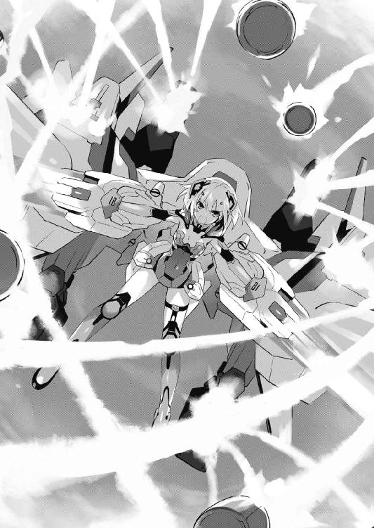
「こちらアデプタス３！ エマージェンシーでス！ 至急増援をお願いしまス！」
ジェシカは迫り来るミサイルをかわしながら、金切り声を上げた。
ＤＥＭインダストリー日本支社。恐らく今、アイザック・ウェストコットがいるであろう場所に向かって。
◇
ステージの方から歓声が響いてくる。すると、それに呼応するように心臓の鼓動は早鐘のように鳴っていった。
「............んく」
緊張に渇くのどを湿らせる。ついでに大きく深呼吸。だが、動悸は一向に収まる様子がなかった。しかしそれも仕方あるまい。何しろ士道は今、ステージ袖で出番を待っている状態だったのだから。
ちなみに、バンドメンバーが纏っているのは、先ほどと同じメイド服だった。
本当はステージ用に衣装を用意していたのだが、亜衣麻衣美衣がそれを持ったまま戦線離脱してしまったため、耶倶矢と夕弦の分がなかったのである。──だがそこで、皆が同じ格好をしていることに気づいたのだ。
「まあ......衣装といえば、衣装......か？」
前の学校がジャズバンドの演奏を終え、一斉に礼をする。すると再度、ぱちぱちという拍手の音が響いた。
ちらと後方を見やる。そこにはまるで緊張の色がない十香、耶倶矢、夕弦の三人がいた。
「見てくれ耶倶矢、夕弦。私はこれを任されたのだ！」
「ほほう、十香の楽器は清廉なる音色を打ち鳴らす鈴輪か」
「納得。とてもお似合いだと思います。皮肉でなく」
ステージから前の出演者が去り、スタッフがドラムセットを設営し始めている今でさえこの調子である。少し精霊たちの鋼のメンタルが羨ましくなる士道だった。
と、そのとき、右耳のインカムから何やらアラームらしきものが聞こえてくる。
「琴里？ 何かあったのか？」
士道が問うと、一瞬不自然な沈黙があったのち、琴里が答えてきた。
『......何でもないわ。士道はステージに集中してちょうだい』
「わ、わかってるよ」
ちなみに今士道は右耳に〈ラタトスク〉のインカム、左耳に音取り用のイヤーモニターを装着していた。歓声に紛れて音が取れなくなってしまうのを防ぐための必須装備ではあるのだが、両耳を塞いでしまっているため、少し耳が遠くなった感じがする。
『本当かしらね。随分緊張してるみたいじゃない』
「んなこと言ったって......仕方ねえだろ。俺だってしたくてしてるわけじゃねえよ」
『緊張をほぐすいい方法を教えてあげましょうか』
「あ？」
『手のひらに三回「幼女」って書いてパクッと食べるのよ』
「そこは『人』じゃねえの!?」
『人には変わりないじゃない。士道はそっちの方がいいんじゃないの？』
「誤解を招くような発言してんじゃねえよ」
『あら、不服？......じゃあ「妹」でもいいわよ』
「は......？ 何でだ？」
『......ふんっ、何でもないわよ』
なぜか琴里が、不機嫌そうに鼻を鳴らしてくる。
と、それに合わせるように、舞台袖のスタッフが士道たちに合図を発してきた。どうやら会場の準備が済んだらしい。
ステージに設えられたスピーカーから、アナウンスが流れ始める。
『──次は、都立来禅高校有志による、バンド演奏です』
それに呼応して、会場からパチパチと拍手が聞こえてくる。
「よ、よし、行くぞ」
言って、士道は足を踏み出した。十香、耶倶矢、夕弦もそれに続いてくる。
そして、薄暗い舞台袖からスポットライトの当たったステージに出──
「............っ」
士道は、思わず息を呑んだ。
先ほど美九のステージを見たとき。今まで、舞台袖で観客席を見ていたとき。──そのどちらとも異なる感覚が、士道の全身に覆い被さってきた。
暗い会場の中、唯一光に溢れたステージ。埋め尽くされた観客席。注がれる視線。
それらが全て一体となって、まるで重力のごとく士道の手足に絡みついてきたのである。
「......なるほど、こりゃあ、すげえな」
唇をペロリと舐める。少し塩の味がした。
リハーサルは何度もした。場慣れをしておこうということで、〈ラタトスク〉の機関員を集めた中で歌わされたこともあった。
だが──違う。明らかに、違う。
本番の空気。本物の緊迫感。その威圧感が、容赦なく士道の精神に刃を突き立ててきた。
──しかし。
「......はは」
士道は、小さく笑った。
確かにこんな大舞台に立ったのは生まれて初めてである。
だが、士道は知るはずのないこの空気を既に知っていた。
十香と。四糸乃と。狂三と。琴里と。八舞姉妹と。
精霊と相対したときの、空気。
一つ選択肢を誤るだけで命を落としかねない極限状態のデート。幾度となく繰り返してきたそれが、士道の心臓をいつの間にやら鍛え上げていたようだった。
士道はギターを提げたままステージ中央のマイクスタンドの前に立つと、左右後方に視線をやった。
右方に十香。左方に夕弦。後方に耶倶矢。全員が所定の位置に付き、士道の視線に返すように頷いてくる。
ちなみに十香と夕弦の前にもマイクスタンドが設えられていた。曲の中にコーラスやユニゾンが入る箇所があるため、一応アリバイ作りのために用意したらしい。
士道たちは音合わせをすると、もう一度視線を交じらせ、うなずき合った。
「くく......よし、では奏でようか、冥府へと誘う死の旋律を！」
耶倶矢が物騒なことを言いながら、カッ、カッ、とスティックを打ち鳴らす。
それに合わせて、士道はギターを弾き始めた。同時に左方から、夕弦の技巧が光るベースが、右方から、シャンシャンという十香のタンバリンの音が聞こえてくる。
軽快な伴奏。歌こそプロのそれであるものの、この演奏だけは士道たちのものである。
弾き始めてしまえば、あとは練習通りだった。ピックが踊るように弦の上を走り、思い通りの曲調が奏でられる。全身を包んでいた緊張感が、徐々に高揚感に変化していく。
だが──異常はそこで起こった。
「......え？」
演奏中、士道は眉をひそめた。
伴奏を終えても──歌が、流れてこなかったのである。
士道がそれを感じ取ると同時、インカムから焦ったような琴里の声が聞こえてくる。
『士道！ 緊急事態よ！ 天宮スクエアの電子配線が何者かの攻撃によって一部破損、用意していた音源が使えないわ！』
「な──そ、それじゃ、一体」
『生で歌うしかないわ！ 今マイクのスイッチを入れるから！』
「は......そ、そんな、いきなり言われても──」
一瞬マイクのハウリングが鳴り響き、士道は言葉を止めた。これ以上琴里と会話してしまっては、その声がマイクに拾われて会場中に響いてしまうことになる。
だが、そうこうしている間にも演奏は進んでいってしまっていた。
幸い、反復練習を繰り返しまくった士道の指は、頭の混乱に反してなんとか動いていてくれたのだが、予想もしていなかった事態に歌詞がまったく出てこない。
最初は士道たちと一緒にリズムを刻んでいた観客たちも、一部が何かおかしいことに気づき始めたようだった。前の方の客が、訝しげに首を傾げている。
「ぁ──」
今までとは比較にならない異常な緊張が全身を縛る。歯の根が鳴る。足が震える。段々と視界がぼやけていく。
いっそここで派手に倒れてしまったなら。そんな考えさえ頭を掠める。自分でもそれが危険な思考だとは自覚できていた。突然のアクシデントに、曲のリカバリーではなく、それ以外の要素でこのステージを有耶無耶にしてしまおうというマイナスのイメージが頭を侵食し始めたのである。
こんなもの、宿題が終わっていないから学校に隕石でも落ちないかと願っている小学生と何ら変わらない。生産性も発展性もない、一発逆転を望む破滅思考。
駄目だ、駄目だ。頭の中で自分に言い聞かせる。ここで演奏を止めたなら、美九に勝つことなど絶対不可能になってしまう。
だが、その考えがなお士道の焦りを加速させ、さらに記憶に靄をかける。歌が出てこない。声が出てこない。段々と呼吸さえおぼつかなくなっていく。
「ぅ、あ......」
そのとき、だった。
『────────────────！』
どこからか。
──うたが、きこえて、きた。
「え......？」
一瞬、電子配線が復旧して用意していた音声が流れ始めたのかとも思ったが──違う。
記憶にあるそれとは、声が全然異なっていた。というか、この声は──
顔の位置を動かさぬまま、視線をぐるりと巡らせる。そして。
「十......香？」
士道は、マイクに拾われないくらいの小さな声音でその名を呼んだ。
そう。士道の右手に立った十香が、リズミカルにタンバリンを振りながら歌を歌っていたのである。
しかも驚くべきことに──その歌は。
「凄......ぇ」
思わず聞き惚れてしまうくらいに、上手かったのである。
いや、正しく言えば「上手い」というのとは違うかもしれなかった。旋律に忠実に......というわけでは決してない。多分にアレンジを含んだ歌い方だ。それどころか、たまに歌詞を間違っていさえする。
しかし、なんと言えばいいのだろうか。その声は、歌は、聞いている者の心を不思議と高揚させた。
「────」
そこで十香の表情を注視した士道は、思わず目を丸くした。
十香の顔からは、大舞台の気負いも、美九への敵愾心も、大仕事を背負わされた義務感も、何も感じられなかったのである。
ただ、楽しそうに。
士道たちと一緒に演奏できることが、嬉しくて楽しくてたまらないといった様子で、『音』を『楽』しんでいたのだ。
──否。士道は小さく首を振った。
上手く演奏しなければと、なんとしてでも美九に勝たなければと、自分を追い込むように練習を続けていたものだから意識していなかったが......そういえば十香は、練習の間中、ずっとあんな顔をしていた。
多分、歌詞も覚えようとして覚えたものではないのだろう。士道が、折紙が歌っていたそれを、楽しんでいるうちに、朧気ながら覚えてしまったのだ。
「......は、は、は」
士道は自然と笑ってしまっていた。
今の今まで手足に絡みついていた重圧が、嘘のように消え失せている。自分でもびっくりするくらい、指が軽やかに動いた。
それを意識した瞬間、士道は弦を今までで一番強く掻き鳴らした。
別に中学時代に研究しまくった「見栄えのするテクニック」を披露したかったわけでも、急にロックに目覚めたわけでもない。
──こんな教本通りの演奏では、十香の歌に見合わない！
単純に、そう思っただけだった。
恐らく、曲調は滅茶苦茶だろう。それはそうだ。こんなにわか仕込みの演奏法で完璧なアレンジができたなら、士道は明日にでも退学届を出して芸能界に打って出る。
だが、今ならば。
今ならば、違う。
なぜなら今、士道一人ではないのだから......！
急な士道の暴走を即座に汲み取った耶倶矢と夕弦が、見事にその滅茶苦茶な演奏をフォローしてくれていたのである。そしてそんな曲調の変化を感じ取ったのだろう、十香がちらと士道たちを一瞥し、輝くような笑顔を向けてきた。
「............！」
瞬間──どくん、と心臓が跳ねた。
先ほどのような嫌な緊張によるものではない。もっと違う──
だが、今はそんな思考に脳の容量を割いている場合ではなかった。
歌も一番が終わり、伴奏に入る。
そこで、士道の頭の中に、密かな欲求が現れたのである。
単純な話だった。
──十香と、歌いたい。
この舞台の上で、十香と一緒に歌いたい！
士道は致命的な音痴ではないものの、そこまで歌が達者なわけではない。少なくとも、これでは美九に勝てない、と早々に琴里に切り捨てられるくらいの歌唱力である。
だが、それでも、不意に心の中に芽生えた欲求には抗いようがなかった。
二番が始まると同時、士道は十香に合わせて歌い始めた。
「............！」
十香が、歌い続けながら驚いたように士道を見てくる。
だが、それも一瞬のこと。十香は先ほどよりももっともっと嬉しそうに、声を弾ませ始めた。
そんな十香に置いて行かれないように、のどを震わせる。先ほどまったく出てこなかった歌詞は、意識せずとも唇から紡がれていた。
歌っている間、士道は美九との勝負のことをまったく忘れてしまっていた。
ただ、単純な一個の感情に頭が支配されていく。
楽しい！
──楽しい！
────楽しいッ!!
......気づいたときには、もう曲が終わっていた。
ハッと肩を揺らす。全身が汗で、プールにでも飛び込んだかのように濡れていた。
「シドー！」
と、十香が目も眩むような笑顔のまま走り寄ってくる。
「手！」
「お......おう！」
言われるがままに手を上げると、そこに十香の手がパチン！ と叩き付けられた。
瞬間──
士道の耳を、インカムもイヤーモニターも関係ないくらいの拍手と大歓声が震わせた。
第五章 蒼い閃光
「魔術師、六──人形、五......」
網膜に投影されたセンサーに表示された反応を数え、折紙は静かに呟いた。
目標、残り一一体。最初いた数のおよそ三分の二を墜とした計算になる。
「............」
今し方撃墜した機械人形の残骸が地面に落下していくのを視界の端に捉え、息を吐く。
細身の骨格に、重厚な腕部。人間とは関節が逆の脚部。フルフェイスヘルメットのように滑らかな頭部。そして、その身体の要所に取り付けられたＣＲ─ユニットの数々。
その、人の形をした機械には見覚えがあった。
先々月。修学旅行で或美島という島に行ったときのことだ。嵐の中外に出て行った士道を追おうとした折紙の進路を阻んできたのが、これらと同機種のロボットだったのである。
その人形──〈バンダースナッチ〉とやらがＤＥＭの魔術師たちと一緒に現れたときは驚いたが、むしろ今となっては、折紙を納得させる材料となっていた。
人間の脳と接続しなければ起動させることのできないはずの顕現装置を扱う機械の人形。──その異常に過ぎる技術水準からもしやとは思っていたが、やはりそれはＤＥＭインダストリーのものであったらしい。
これで、修学旅行先にこの人形たちが現れた理由にも、その存在を上に報告しても一向に対策案が検討されなかった理由にも得心がいった。
「......士道には、指一本触れさせない」
ギリと奥歯を噛みしめ、脳内で指令を発する。
視界の中にいた魔術師と人形に狙いを定めて定点随意領域を限定展開。一〇以上の随意領域を並列展開しているため精度は低いが、それでも一瞬足を止めさせることは可能だった。即座にコンテナを五番から八番まで全展開、目標に向けてミサイルを放つ。
魔術師たちは皆拘束から逃れ、紙一重でそれをかわしたようだったが、二体の〈バンダースナッチ〉がそれぞれ頭部と胴部に攻撃を受けて下方に墜ちていった。
「くそッ、くそッ、一体なんなのよあなたハ！」
無論、ジェシカを始めとして、その場に残ったＤＥＭの魔術師たちも折紙目がけてレイザーカノンやミサイルを放ってくる。
だが、折紙とてそれを何度も受けてやるほど人が良くはなかった。ウェポンコンテナの下部に搭載された高出力スラスターを駆動させ、〈ホワイト・リコリス〉の巨体からは考えられないような速度で空を駆ける。
避けきれない攻撃は予想進路に定点随意領域を展開させるか、着弾位置の随意領域に一瞬だけ防性を付与して防いでいった。
生身では〈バンダースナッチ〉に手も足も出なかった折紙だが、この〈ホワイト・リコリス〉があれば話は別である。
顕現装置を扱う無人兵器。確かにそれは驚異にして脅威であったが、単純な戦闘力でいうのであれば、人間の魔術師には及ばないというのが折紙の評価だった。細かな駆動や顕現装置の制御が、魔術師たちに比べて格段に劣るのである。単独で中隊規模の火力を誇る今の折紙にとってはいい的だった。
「撃テ！ 撃テ！」
魔術師たちが懲りずに弾幕を展開してくる。視界を埋め尽くさんばかりに放たれた数多の弾薬が、折紙に迫ってきた。
さすがにこの数は避けきれない。折紙は瞬時にそう判断して、身体を包む随意領域を防性特化させた。大した威力ではない。この程度ならば何発食らおうとも──
「......っ!?」
そう思った瞬間、折紙の視界がぐらりと揺れた。
一瞬随意境域が乱れ、〈ホワイト・リコリス〉の装甲に何発かの弾薬が炸裂する。凄まじい衝撃が折紙の頭を揺らし、軽い嘔吐感が襲ってきた。
「く──」
折紙は微かに顔をしかめると、スラスターを駆動させて一旦その場を離脱した。残る魔術師たちを視界に収められる位置で動きを止め、呼吸を整える。
「............ン？」
そんな折紙の行動を不審そうに見つめていたジェシカが、ぴくりと眉を揺らす。
「あ──はハ。ははははハっ！ なるほど、そういうことカ」
今の今まで青い顔をしていたというのに、ジェシカは急にからからと愉快そうに笑うと、折紙を指さしてきた。
「そろそろタイムリミットみたいネ。優秀な魔術師さン」
ジェシカの言葉に目を細める。と、そのとき、口元に何かぬるりとした感触が生まれた。
視線を敵から外さぬまま手で拭ってみる。すると、手のひらにべったりと血が付着しているのがわかった。どうやら、鼻から血が出ていたらしい。
一瞬先ほどの衝撃のせいかとも思ったが......違う。
「これ、は......」
次いで強烈な頭痛と目眩に襲われながら、折紙はうめくように言った。
この感覚は初めてではない。──活動限界である。
「ふ......ははハ！ 惜しかったネェ。実に惜しかっタ。でも、そうなったらもうお終いヨ」
ジェシカが笑うと同時、その後方の空に、何体ものシルエットが現れた。〈バンダースナッチ〉だ。
そのボディには全く欠損が見られない。どうやら、折紙が先ほど撃墜したものではなく、どこからか送られてきた増援らしい。
それを確認してか、ジェシカがさらに勝ち誇った笑みを浮かべる。
「ふフ。さぁ形勢逆転ヨ。よくもやってくれたわネ。──ただで済むと思うなヨ」
「......く」
折紙は凄まじい頭痛と段々と霞んでいく視界の中、ギリと歯をかみ合わせた。
◇
天宮スクエアセントラルステージには、一日目の出演者たちが勢揃いしていた。
皆緊張した面持ちで息を呑みながら、司会者の声を待っている。
それもそのはず。今は全てのステージ、および投票が終了し、上位校の発表が行われている最中なのである。
『ステージ部門第三位──仙城大付属高校！』
スピーカーから校名が発表された瞬間、辺りから歓声と拍手が溢れ、ステージにいた仙城大付の出演者が喜びの声を上げる。
確か士道たちの前にジャズを演奏したグループである。士道はパチパチと手を打った。
三位に選ばれるということは、どうやら相当に上手かったようだ。士道の感想が曖昧なのは単純な理由で......ステージ袖という、出演者にもっとも近い位置で演奏を聴いてはいたのだが、緊張のためかほとんど耳に残っていなかったのである。
『第二位！』
と、歓声を抑えるようにアナウンスが再度響き渡った。
実際、観客たちが注目しているのもここから先だったのだろう。拍手と声と指笛で溢れかえっていた会場がふっと静かになる。
皆の脳裏には、二つの高校の名が浮かんでいたに違いなかった。
常勝竜胆寺の現役アイドル誘宵美九が見せた圧巻のステージか。
最後の最後で奇跡を起こして見せた来禅のステージか。
精霊の持つオーラとでもいうのだろうか。誰の目から見ても、その二つは別格だった。
司会者も若干緊張した様子で間をおくと、すぅっと息を吸ってから続けてきた。
『──一歩及ばず！ 来禅高校！』
「............！」
スピーカーからその名が響き、ステージに設えられた大型モニタに結果が表示された瞬間、一瞬、時間が止まったようにさえ感じた。
一拍おいて鳴り響いた拍手と歓声と幾分かのざわめきの中目を開くと、ニィと唇を歪めた美九の顔が視界に入る。
それはそうだろう。士道たちが二位ということは──
『そして、ステージ部門第一位の栄冠を手にしたのは！』
アナウンスが響き渡り、同時に、カッ！ と美九にスポットライトが集約された。
『やはり強かった！ 王者・竜胆寺女学院ッ!!』
『おおおおおおおおおおおおおおおおおおおおおおおおおおおおおおおおお──ッ!!』
大歓声が、会場の空気を激しく振動させた。
「し、シドー......」
士道が放心していると、十香がモニタに表示された順位に視線をやりながら声を発してきた。その表情は不安の色に染まり、微かに指先も震えている。
「ま、負けてしまった......のか......？ わ、私が、歌ったから......」
「！ ち、違う！ 十香のせいなんかじゃない！」
士道が首を横に振るも、十香の今にも泣いてしまいそうな顔は晴れなかった。まるで、士道の言葉が聞こえていないかのようでさえある。
「ふふ、ふふふふー......」
十香が弱々しい声を響かせていると、背後から、美九の含み笑いが聞こえてきた。
「美九......」
「ほうら、ね。私の言った通りだったでしょう？ 仲間なんかに期待しすぎるからこんなことになるんですよー」
未だ続く司会者のアナウンスをＢＧＭに、美九がにやにやと笑いながら近づいてくる。
そして士道の眼前まで歩みを寄せてきた美九は、くい、と士道のあごを持ち上げた。
「何にせよ、約束は約束ですよー。士織さんと、士織さんが霊力を封印したという精霊さん五人、今日から全員私のものです」
「く──」
「うふふー、そう怖がらないでくださいよう。ちゃぁんと可愛がってあげますから──」
と。
美九の言葉の途中で、司会者が今までで一番大きな声を張り上げた。
『──と、いうわけで！ 天央祭一日目の総合一位は、来禅高校に決定いたしましたぁぁぁぁぁぁッ！』
「............へ？」
美九が、呆然と目を丸くする。
それは士道たちも同じだった。正直、司会者の話をまるで聞いていなかったのである。
そんな士道たちの疑問に答えるように、司会者が言葉を続けていく。
『なんとも意外な結果になりました。ステージ部門では他を寄せ付けない圧倒的なパフォーマンスで一位をかっさらった竜胆寺ですが、どうやら今年は展示部門や模擬店部門が振るわなかったようですね』
「え......？ え......？」
美九が、意味がわからないといった様子で顔を左右に振る。
『その隙を、ステージ部門二位につけた来禅が衝いたというわけですね。特に模擬店部門のメイドカフェの得票数が凄まじい！ 審査の際に物議を醸したという話ですが、実行委員の熱心なプッシュが功を奏した形になりますね！』
「は、は......」
士道は力無く笑った。
まさか、こんな場面で亜衣麻衣美衣に助けられるだなんて、思いもしなかった。
「シドー！」
十香が表情をがらりと変えて飛びついてきた。それから一拍遅れて耶倶矢と夕弦も左右から同じように首に手を回してきて、なんだかもう大変なことになる。
「かかか！ 当然だな！ 我らの手にかかればこの程度容易いものよ！」
「同調。その通りです。夕弦たちに敵はいません」
そうしてもみくちゃにされるうち、士道はようやく実感が胸に広がっていくのを感じた。
──勝った。
勝った、のだ。
美九に。竜胆寺に。
『──それでは、今から表彰を行います。代表者は前に出てきてください』
司会者がそう言い、三組の出演者を前方に促す。
が──
「......ふざけないでください。何です、これ──」
背後から、震えた美九の声が聞こえてきた。
「おかしいでしょう......？ 私が負けるはずないじゃないですかー......」
『あ、あの、誘宵さん？』
司会者の呼びかけにも答えず、美九はふらふらとした足取りで前方へと歩いていった。
「私は──誘宵美九なんですよ？ 私は......私は......ッ」
「......美九」
士道は興奮した心拍を押さえるように胸に手を置いてから、静かな声で呼びかけ、そちらへ歩いていった。
が、そこで美九がビクッと身体を震わせる。
「やめてよ......わ、私は勝ったもん......ちゃんと勝ったもん！ あの子たちが......あの子たちがちゃんとしてないから！」
「......そんなこと言うもんじゃないぞ。竜胆寺の生徒だって、一生懸命やったはずだ」
「し、知らない！ そんなの知らないです！ 私は......私は勝ったのに......！」
「あー......」
美九の言葉に、士道は少し恥ずかしそうに頬をかいた。
それから、自分で臭いと自覚しつつも、その言葉を発する。
「なんつーか......仲間のおかげ......ってやつなんじゃないか？」
「......な、かま......」
美九が忌々しげに呟き、渋面を作る。士道は大仰にうなずいた。
「ああ。俺たちは確かに、歌でおまえには敵わなかった。......でも、メイドカフェや、他の出展物を用意してくれた生徒たちが、俺たちに足りない部分を埋めてくれたんだよ」
「な、何よ......それ。ふざけないでください......仲間......？ ははっ、人間風情が、そんな役に立つはずないじゃないですか......」
「でも、そんな人間風情でも、絆で繋がれば、おまえに勝てるんだ」
美九が声を詰まらせる。士道は言葉を続けた。
「な。人間って......面白いだろ。だから美九、おまえも──」
「............ます」
「え？」
美九の言葉が聞き取れず、聞き返す。
「仲間？ 絆......？ 教えてあげます。そんなもの、私の前では無意味だって......ッ！」
すると美九は、俯かせていた顔をバッと上げ、両手を大きく広げた。
「──〈破軍歌姫〉！」
美九が会場全域に響き渡るような絶叫を上げたかと思うと、次の瞬間、美九の足下の空間に放射状の波紋が広がっていった。
美九の声に呼応するように、その波紋の中心部から、何か巨大な金属塊のようなものがステージ上にせり上がってくる。
鈍重な本体から銀色の細長い円筒が何本も連なって生えた奇妙なフォルム。それはまるで、聖堂などに設えられている巨大なパイプオルガンを思わせた。
観客もそれが演出の類でないことに気付いたらしい。辺りをどよめきが包んでいく。
だが、美九はそんなものにはまったく構わず、右手を左から右へと一閃させた。すると、彼女の手の軌跡を描くように、ぼんやりとした輝きを放つ光の帯がそこに現れる。
否、それを帯というのは語弊があるかもしれなかった。美九の身体を囲うように曲線を描いたそれには細かな線が幾つも走っており、ピアノかオルガンの鍵盤のようになっていたのである。
その天使が一体どのような意図で呼び出されたのかはわからない。だがそれが、この場にいる人間たちにとって破滅的な状況を作り出すであろうことは容易に想像がついた。
「美九！ 待て！ 話を聞いてくれっ！ 俺は──」
「歌え、詠え、謳え──〈破軍歌姫〉ッ!!」
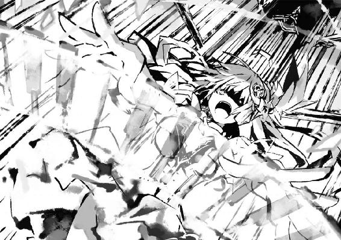
しかし美九は聞く耳を持たず、両手の指を広げると、自分の周囲に広がった光の鍵盤に叩きつけた。
────ヴォオオオオオオオオオオオオオオオオオオオオオオ────────ッ!!
瞬間、美九の後方に聳え立っていた巨大な天使が、凄まじい音を発し始めた。
規則的に連なった銀色の円筒の中を音が幾重にも反響し、周囲に撒き散らされる。会場の空気がビリビリと震え、身体中に震動が伝わってきた。
「う......っ、が......っ!?」
思わず、耳を押さえる。
だがそれは、その凄まじい音量に耐えかねての行動ではなかった。
空気を通って士道の鼓膜を揺らした音が、そのまま士道の頭の芯を侵食するかのように染み込んできていたのである。──そう、まるで、美九の『お願い』を何倍にも強めたような感覚だ。
十数秒後。嵐のように会場を駆けめぐった〈破軍歌姫〉の音は徐々に小さくなっていき、やがて、完全に消え去った。
「......っ、......っ」
恐る恐る、耳を覆っていた手を退ける。まだ軽く耳がきぃんと鳴っていたが、その他には身体に変化は見られないようだった。
だが、すぐに異常に気付く。
耳鳴りが消えても、周りから音が聞こえなかったのである。
会場にはこれだけの人数が犇めいているというのに、微かなざわめきや足音一つしない。
もしや、今の攻撃で聴覚を奪われたとでもいうのだろうか......？ そんな懸念が士道の頭を通り抜ける。精霊が持つ天使は『形を持った奇跡』である。それくらいのことができてもおかしくはない。
「な......」
しかし、そうではなかった。士道は自分の発した狼狽がきちんと耳に届くのを聞きながら辺りを見回した。
あまりに異常なその光景に、思わず息を呑む。
会場には未だ、何千人という数の観客がいる。
だというのに、それらの観客が、一人の例外もなく皆一様に直立姿勢をとり、無表情のまま身じろぎ一つせず、ステージの上に視線を送ってきていたのである。
「こ、これは......」
十分に訓練された軍隊でもこうはいくまい。まるでマネキン工場にでも紛れ込んだかのような気分だった。
「美九、おまえ、まさか......！」
叫び、美九の方に視線をやる。
「ふ......ふふ......ふ、仲間......でしたよねぇ？ 美しいですねぇ、素晴らしいですねぇ」
美九は壊れた人形のようにカラカラと笑った。
「──こんなに、壊れやすいなんて」
言って美九が再び光の鍵盤を弾くと、その音に呼応するように、観客たちがザッと休めの姿勢をとった。
「ふふ、うふふ、これで、あなたのお仲間さんは、ぜぇーんぶ私のものですよぉ？ ねぇ士織さん、あなたの言う絆とやらは、私の指先一つでどうにでもなってしまうんですねぇ」
「く......」
士道が苦悶の表情を浮かべると、美九は楽しげに微笑み、鍵盤を指で叩いた。
すると、ステージ上にいた出演者たちがザザッと士道の背後に回り、士道の両腕をがっしと拘束してくる。
「な......、この、放せ！」
もがくも、出演者たちはびくともしなかった。
そんな様子を満足げに眺め、美九が光の鍵盤を割って士道の方へ悠然と足を進めてくる。
「もう勝敗なんて関係ないです。約束なんて関係ないです。この世に、私の思い通りにならないことなんてあっちゃいけないんですからぁ」
言いながら妖しげに微笑むと、美九は士道の身体につつ......と指を這わせてきた。
「ひ......っ!?」
「ふふっ、士織さんも、精霊さんも、みんな、みんな私のもので──」
と。
熱っぽく語りながら士道の身体に触れていた美九は、士道の下腹に触れたところでぴたりとその動作を止めた。
「............ん？......んん？」
そして首を傾げるとその場から一歩後退し、何やら今まで士道に触れさせていた手を開いたり握ったりする。
「今の感触......い、いや、そんなまさか......」
美九が訝しげに眉をひそめ、再び指を鳴らす。
「か、確認してください！」
するとステージ上に残っていた生徒が新たに二名、士道の両サイドに現れると、無表情のままガバッとメイド服のスカートを捲り上げた。下に穿いていた色気のないショートパンツが露わになる。
「うわ......っ!? な、何を......！」
士道は思わず顔を赤くして叫ぶも、それで終わりではなかった。またしてもその場にいた女子生徒が一人歩み出てきたかと思うと、今度はなんと、士道が穿いていたショートパンツを、下着ごと下ろしたのである。
「ぎゃぁぁぁぁぁッ!?」
絶叫を上げて手足をバタつかせる。するとようやく、士道を押さえつけていた生徒たちが手を放した。慌てて下着、ショートパンツ、スカートを所定の位置に戻す。
だが......一息などつけるはずもなかった。
いつの間にか士道から逃げるように遠くに立っていた美九が、世界が終わったような顔を作り、ぷるぷる震える指と戦慄に見開かれた目を士道に向けてきていたからだ。
「し......ッ、ししし士織......さん、あなた......お、おおおおおおおオト、コ......ッ」
美九の目がぐりんぐりん揺れ、顔が真っ青になっていく。
「み、美九！ 落ち着け！ 俺は──」
士道はなんとか美九を落ち着かせるため声を上げたが──無駄だった。
「うッきゃああああああああああああああああああああああああああああ────ッ!!」
美九が叫ぶと、虚空に浮かんでいた光の鍵盤が美九のもとに舞い戻った。美九がまたも演奏を始める。
だが、士道にはその曲に聴き惚れている暇などなかった。
美九が演奏を始めた瞬間、ステージ上に残っていた出演者や司会者、会場にいた観客などが一斉に、士道に向かって走り出してきたからだ。
「うっ、うわぁぁぁぁぁぁぁぁっ!?」
「さぁ、後悔なさいっ！ この私を騙したことを......ッ！」
怒号と足音に紛れて、美九の声が響いてくる。
「く......！」
士道は眉をひそめて拳を握った。逃げ場などはない。数秒後には士道は観客たちの波に呑まれてしまうに違いなかった。
こうなったら──残された道は一つしかない。
「くそ......っ！」
士道は意を決すると、真っ直ぐ前方──美九の方に駆け出していく。
そう。皆を操っている美九を叩く。極めて望み薄だが、それしか方法はなかった。
──だが。
「な......!?」
士道は狼狽に声を上げた。美九に肉薄する寸前、辺りの温度が急激に下がったかと思うと同時、士道と美九を隔てるように氷の壁が出現し、士道の進路を阻んできたのである。
「これは......まさかっ！」
士道が驚愕に目を見開くと、後方から聞き慣れた声が聞こえてきた。
『んー、ふふー。あーぶないなぁ。そんなことしちゃ駄目だよー？』
「お......お姉様は、私が......守り、ます」
声の方向に目をやる。そこにあったのはくぐもった声を響かせる大きなウサギの人形と、その背に貼り付き、霊装を限定解除した四糸乃の姿だった。
「四糸乃!? おまえ、なんで──」
言いかけて、はたと気付く。四糸乃が口にした呼称......『お姉様』。それは、美九のファンである竜胆寺の生徒や、美九に『お願い』された亜衣が言っていたのと同じものだった。
「まさか、おまえ......」
最悪の想像が士道の頭を掠める。
と、次の瞬間、凄まじい風の奔流が会場内に吹き荒れ、士道の身体を大きく煽った。
「く......っ！」
突然のことに、思わず尻餅を突いてしまう。
それと同時に、上方から不敵な笑い声が響いてきた。
「くく......愚かな。我らが姉上様に盾突こうとは、総身に知恵が回りかねておると見える」
「肯定。短慮かつ無謀な行動です。お姉様には指一本触れさせません」
言いながら、耶倶矢と夕弦が軽やかに空を舞い、美九の上空に静止した。
双方、限定的に顕現した霊装の拘束具に身体を締め付けられており、耶倶矢は巨大な槍を、夕弦はペンデュラムのような武器をそれぞれ携えていた。
「お、おまえらまで......ッ!?」
士道は絶望的な心地でうめいた。どうやら美九の天使が放った『音』は、霊力を封印されていた精霊たちをも支配下に置いてしまっていたらしい。
「ふ......ふふ、あははは......っ！ なぁに、これ」
と、美九の笑い声が聞こえてくる。
「人が悪いじゃないですかぁ、士織さん。会場に精霊がこんなにいるなんて！ しかもみんな私好みの子たちばかり！ ああ......いいです、最高ですー！」
言って、可笑しくて仕方ないといった様子で身を捩る。
「さぁ......こうなったら、いよいよあなたに用はなくなっちゃいました。さっさと始末して、精霊さんたちと遊ぶことにします。──さあ、やっちゃってください！」
美九が光の鍵盤を一層強く叩く。すると四糸乃と八舞姉妹が、士道に敵意に満ちた眼差しを向けてきた。
しかもその上、さらに事態は悪化した。
出演者たちの中から、ゆらり......と、四糸乃たちと同じように霊装を限定解除した十香が進み出てきたのである。
「ま、まさか、十香まで......嘘だろ......？ やめ──」
が、士道の言葉になどまったく耳を貸さず、四糸乃が冷気の奔流を、八舞姉妹が風圧の塊を放ってきた。
「う、うわぁぁぁぁぁッ!?」
衝撃に備え、身体を丸める。
だが──次に士道の身体を襲ったのは、痛みのような冷気や押し潰されんばかりの風の圧力ではなく、ふわりという奇妙な浮遊感だった。
「──え？」
間の抜けた声を発したときには、士道の視界はステージ上から、天井際に沿って伸びたキャットウォークの上に移っていた。
「シドー、一体何が起こっているのだ......？」
聞き慣れた声が聞こえてくる。見やると、そこには霊装を限定顕現させた十香の姿があった。どうやら、士道が観客たちの波に呑まれる寸前、士道を抱えて天井まで飛び退いたらしい。
......というか、士道は今、十香に軽々と抱えられていた。俗に言う『お姫様抱っこ』の姿勢で。
「............」
助かったことは助かったのだが、なんだか複雑な気分になって士道は頬をぴくつかせた。
だが、今はそんなことを気にしている場合ではない。士道はキャットウォークに降り立つと、十香に声をかけた。
「ありがとう、助かったよ。でも、十香......おまえ、なんでなんともないんだ？ 四糸乃たちはみんな美九に操られちまってるのに......」
「......ぬ？」
士道が言うと、十香はなぜか不思議そうに首を傾げたのち、「おお」と何かを思いだしたように手を打ってから両耳に手をやった。そして、ぽんっ、とそこに詰まっていたイヤーモニターを取り外す。どうやら演奏のときからずっと着けていたらしい。
「おまえ......それ」
「うむ、どうも片方だけではバランスが悪く、リズムが取りきれない気がしてな」
「............」
タンバリンにそこまでの装備が必要かとも一瞬思ったが、まあ言わずにおく。
「それで、シドー」
「ああ......多分、美九がみんなを操ってるんだ」
士道の言葉に、十香はステージ上の美九を見下ろした。
美九はキャットウォークに逃れた士道を憎々しげに睨み付けると、鍵盤に走らせていた指の動きを変え、〈破軍歌姫〉の音色を変化させた。
すると観客たちが一斉に方向を転換し、ステージ袖に入っていった。恐らく、裏から階段を上ってキャットウォークにやってくるつもりなのだろう。中には何を思ったのか、士道の方に向かって会場の壁を登ろうとしている者もいる。
だがそれより問題は四糸乃と八舞姉妹だった。三人は未だ、美九を守るように士道と十香に鋭い視線を向けてきている。彼女らがいる限り、美九には近づけもしないだろう。
「く......」
士道は顔をしかめ、インカムを叩いた。
根本的な解決にならないのはわかっている。こんな状況を放っておけないのもわかっている。だが、ここは一旦退くしかなかった。何しろこちらに明確な敵意を持った四人もの精霊が相手なのである。いくら十香がいるとはいえ、勝てるはずがない。
十香に会場の壁を切り裂いてもらい、空中に離脱、そこを〈フラクシナス〉に拾ってもらう。そうするしか、今この場を切り抜ける方法が思いつかなかった。
ほどなくして、インカムから聞き慣れた声が聞こえてくる。
『ハイ、どうしたのかしら？』
自律カメラでこちらの危機的状況はわかっているだろうに、なぜか微塵も緊張感がない琴里の声に眉をひそめる。
「琴里か......？ まずい状況になった。外に出るから、〈フラクシナス〉で回収してくれ！」
『ハァ？』
そしてその疑念は、一瞬あとさらなる絶望へと変貌した。
『──何言ってるの？ お姉様に逆らったお馬鹿は、そこでミンチにされてなさいよ』
「こ、とり......？」
士道は、呆然と妹の名を呼ぶしかなかった。
◇
「......これは......一体」
〈フラクシナス〉に戻ってきていた令音は、艦橋に足を踏み入れた瞬間、その異様な雰囲気に眉をひそめた。
士道たちのステージを見た美九の精神状態についての解析を詳しく行いたいという連絡を受け、四糸乃を別の機関員に預けて〈フラクシナス〉へ戻ってきたはいいのだが......どうやら転送装置から艦橋に至るまでの間に何かがあったようだった。
「あっははははは！ ブァーカ！ 美九お姉様を騙したんだから死んで償うのが当然でしょう？ 死ね！ 早くそこで死ねッ！」
明らかに危機的状況を迎えているメインモニタの士道に向かって、艦長席......ではなく四つん這いになった神無月に腰掛けた琴里が笑いながらそんな言葉を吐く。
他のクルーたちも似たようなもので、中指を立てたり親指を下げたりしながら、口々に士道を罵っていた。
「むっ、村雨解析官！」
そんな中、唯一あたふたと慌てふためいていた〈藁人形〉椎崎が、令音の姿を認めてパァっと表情を明るくし、駆け寄ってきた。
「助けてください！ みんな様子がおかしくて......！」
「......一体何があったんだい」
「わ、わかりませんっ！ 私がステージ音声をチェックしていたら、みんなが急に......！」
「......ふむ」
令音は小さくうなると、メインモニタに目をやった。
そこには今、会場の端に追い込まれた士道と十香、そしてステージに天使らしきものを顕現させた美九と、それに従っているらしい観客や四糸乃、八舞姉妹の姿が見て取れた。
どうやら、美九が何かをしたのは間違いないらしい。一刻も早く士道たちを助けなければ大変なことになってしまうだろう。
と、その瞬間。
「............！」
「え──？」
令音と椎崎は同時に眉根を寄せた。急に艦内に、けたたましいアラームが鳴り響き始めたのである。
しかも、精霊の不機嫌を示すものや、外敵の接近を知らせるものではない。これは──
『──基礎顕現装置並列駆動。魔力充填開始。収束魔力砲〈ミストルティン〉用意。目標──天宮スクエアセントラルステージ』
無機的なアナウンスがスピーカーから流れてくる。令音と椎崎はこれまた同時に、コンソールに向かいながらカラカラと笑う琴里と、それに腰掛けられ恍惚とした表情を浮かべている神無月に目をやった。
「し、司令っ！ 何をしてるんですか......ッ!?」
椎崎が泡を食って叫びを上げる。
しかし琴里は、自分が今し方破滅的なプログラムを発動させたとは思えないくらい軽薄な調子で手をひらひらと振った。
「あはは、何言ってるのよ椎崎。あそこにはお姉様に逆らった愚か者がいっぱい詰まってるのよ？ なら一気に蒸発させちゃった方がいいじゃない」
「何を言ってるんですか......っ！ ふ、副司令も椅子になってないで止めてくださいっ！」
椎崎が叫ぶと、神無月は一瞬キリッとした顔を作った。
「そちらこそ何を言っているんです。ようやく見つけた、ここが私のユートピア」
「実は正気なんじゃないですかアンタ!?」
だが、そんなことを言っている場合ではないと察したのだろう、椎崎が艦長席のコンソールを操作しようとしてか、床を蹴る。
だが、左方から飛び出てきた川越に組み付かれ、その場に倒れ込んでしまった。
「痛っ！ か、川越さん!? 何するんですか、放してください！」
「それはこっちの台詞だよ椎崎くん。君も美九様を騙した内の一人なんだよ？ 一緒に反省するべきなんじゃあないのかな？」
「な......何を言って......」
椎崎が、得体の知れないものを見るような目で川越を見返す。だが川越は、恍惚とした笑みを浮かべるだけだった。
「............」
さすがに放っておけない。令音もまた、琴里を止めようと足を一歩踏み出そうとした。が、いつの間に背後に回っていたのだろうか、箕輪がガッと令音の両手を取り、羽交い締めにしてきた。
「どこ行くんですか、村雨解析かぁぁぁん。駄目ですよう、邪魔をしちゃあ」
「......く、何をされたのか知らないが、正気に戻るんだ」
「正気？ あはははは、正気ですよう。全然正気」
なんて、明らかに焦点の合っていない目で言いながら狂気に満ちた笑みを浮かべる。
そこで、琴里も令音と椎崎が取り押さえられたのに気付いたのだろう。こちらに視線を向けてから、再びコンソールに向き直った。
ニィ、と唇の端を歪め、指を一本立てる。
「──セット完了。あとはこのボタンを押せば──ドォン！」
爆発を表現するように両手を広げ、琴里が叫ぶ。そのあまりに無邪気な仕草に、椎崎が顔を青くするのが見えた。
「じょ、冗談......ですよね？」
「あっはは、面白いこというのねえ椎崎。本気に決まってるじゃない」
冗談めかすように言って、琴里がバッと腕を高く上げる。
「......く」
令音は背後の箕輪を一瞥したのち、組み伏せられた椎崎に目をやった。
このままでは、琴里は本当に天宮スクエアに向けて〈フラクシナス〉の主砲を放ってしまう。だが、だからといって──
と。一瞬のうちにそんな思考を巡らせていた令音の耳に、とある音が聞こえてきた。
艦橋のドアが開く音。床を蹴る音。そして──
「ひぐ......ッ!?」
いきなり現れた人影に鳩尾を打たれ、昏倒する琴里の声が。
琴里の腹に拳を突き刺した人影は、ぐったりと倒れ込んだ琴里の身体を支えると、神無月の後頭部を踏みつけて気絶させ、面倒そうにぽりぽりと頭をかきながら言ってきた。
「......まったく、何なんですかこのアラームは。人がせっかく休んでたっていうのに、もうちょっとくらい静かにできねーんですか？」
いやに特徴的な口調に彩られた、声で。
そこにいたのは、一人の少女だった。
年の頃は琴里と同じくらいだろう。一つに括った髪と、左目の下の泣き黒子が特徴的な少女である。どことなく、女装をした士道に似た面影があった。
崇宮真那。──ＡＳＴの三尉にしてＤＥＭの出向社員。そして......士道の実妹を名乗る少女である。
「......それで。扉の外でお話を聞くに、何だか琴里さんがトチ狂っていやがったようなので一撃お見舞いしてやったわけですが......オーケイでした？」
真那がコミカルな仕草で首を傾げてくる。令音は「......ああ」とうなずいた。
「......ファインプレーだ。できれば、私たち以外のクルーも気絶させてもらえるとありがたいのだが」
「そりゃまあ、構わねーですけども」
真那はそう言うと、琴里の身体を床に落ち着け、瞬く間に艦橋のクルー全員を昏倒させてしまった。
「ふう......こんなところですかね」
パン、パン、と手を払い、真那が令音に視線を向けてくる。
「で......一体何があったんです？」
「......まだ確証はないが、恐らく、精霊の攻撃を受けた。『音』に霊力を乗せて、聞いた相手を操る類のものだ」
「はー......そりゃまた厄介なものが」
と、辟易するように言いながらモニタに目をやった真那は、小さく息を詰まらせた。
「に......兄様ッ!?」
どうやら、艦橋の様子に気を取られ過ぎて、モニタ内の状況に気付いていなかったらしい。モニタに駆け寄ってダンダンと地団駄を踏む。
「い、一体どういうことですか、これは！ なんで兄様がこんな危険なところに！」
「......今敵対しているのが、件の音を操る精霊だ。──あまりよくない状況だな。早くシンと十香を助けなければ......」
令音が簡単に今の状況を説明すると、真那は静かにのどを震わせてきた。
「──この艦、ＣＲ─ユニットは積んでいやがるので？」
◇
──空に、弾薬の雨が降る。
顕現装置によって生成魔力を付与された三〇mm弾とマイクロミサイルが上下左右から迫り、一瞬で折紙の視界を埋め尽くした。
「く......っ」
猛烈な頭痛に耐えながら脳内で指令を発し、ウェポンコンテナを展開。弾幕を張ってそれらを迎撃する。
だが、全ての攻撃を防ぐことは叶わなかった。数発のミサイルが煙を抜けて折紙に向かってくる。
キッと視線を鋭くし、随意領域の属性を防性に変換──しようとするも、激烈な痛みが脳を襲い、折紙の意識を白濁させた。
「──っ」
次の瞬間、ほとんど無防備状態の〈ホワイト・リコリス〉に数発のミサイルが着弾し、凄まじい爆音と振動が折紙を襲う。
「くぁ......っ！」
「ははははハ！ 息巻いて出てきたのに、無様ネェ！」
ジェシカの高笑いが、激しい痛みに苛まれた脳にガンガン響く。
折紙は顔をしかめたまま視線を左方にやった。それに反応して、網膜に〈ホワイト・リコリス〉の被害状況が表示された。左方のレイザーブレイド〈クリーヴリーフ〉が使用不能、同じく左方の魔力砲〈ブラスターク〉半壊、ウェポンコンテナ〈ルートボックス〉は八基の内五基が損傷していた。
視線を敵の方に移す。魔術師・五。〈バンダースナッチ〉・少なく見積もっても二〇。
圧倒的兵力差に、甚大な機体損傷。そして何よりも深刻なのは、討滅兵装を連続使用し続けたことによる折紙の脳のダメージである。もはや、まともな戦闘になりようがないことは一目瞭然だった。
否──それどころか、このまま〈ホワイト・リコリス〉の起動状態を維持し続けるだけで、折紙の脳には深刻な障害が残りかねない。本来であれば今すぐ戦闘を中止してこの討滅兵装の起動を解除せねばならないだろう。
だが、折紙がここを離脱するのは、士道をＤＥＭ社に拉致されるのと同義であるし──手酷くやられたジェシカが大人しく折紙を逃がしてくれるとも思えなかった。それを示すように、魔術師と〈バンダースナッチ〉たちは、ジェシカの指示に従って折紙を取り囲むように展開し始めた。
「ふフ。散々暴れてくれたけれど、もうお終いヨ。本当ならもうちょっと可愛がってあげたいところだけど、こっちの仕事も押しちゃってるし、さっさと墜とさせて──」
と、そこでジェシカが言葉を止める。
いや、正確には少し違った。突然下方から響いた凄まじい音に、声が掻き消されたのだ。
「何事!?」
ジェシカが訝しげに眉をひそめながら叫ぶ。
折紙は油断なく周囲に気を張りながらも、ちらと下方──天宮スクエアの方を一瞥した。
随意領域で視力が強化されているとはいえ、今のコンディションでは遠く離れた建造物の詳細を見取ることは難しいかもしれないという懸念はあった。
が、一目見てすぐに異常に気付く。
何しろ天宮スクエアセントラルステージの天井の一部に大きな穴が開き、そこから凄まじい風が吹き出していたのである。
次の瞬間、ピピッという音とともに網膜センサーに新たな情報が表示される。
天宮スクエアに強力な霊波反応。折紙は小さく息を詰まらせた。
「士道──」
一体セントラルステージで何が起こっているのかはわからない。だが、それが士道を危険に晒す可能性があることは間違いなかった。慌てて進路を変え、下方に向かってスラスターを駆動させようとする。
だが、そんな行動をジェシカたちが許すはずもなかった。折紙の進行方向を何体もの〈バンダースナッチ〉が阻んでくる。
「何か下であったようですネ......これは急いだ方がいいかもしれませン。さっさと片付けて行きましょウ」
言って、折紙にビッと指を突き付けてくる。
それに合わせて、周囲に展開していた〈バンダースナッチ〉が一斉に動いた。右腕に携えていたレイザーカノンを折紙に向けてくる。
「............く」
慌てて回避行動を取ろうとするも、もう脳が限界だった。視界が真っ赤に染まり、意識が朦朧としていく。
結局......先々月と何も変わりはしなかった。折紙の頭を無力感が塗りつぶしていく。
顕現装置を用いても、基地内の装備で最強であろう〈ホワイト・リコリス〉を使っても、折紙は士道を守ることができなかった。
──力が。もっと、力があれば。
誰にも負けないくらいの、力があれば。
「士、道......」
「さあ、やっちゃっテ」
ジェシカの声に応じるように、〈バンダースナッチ〉たちが引き金を絞ろうとする。
だが、その瞬間。
折紙の霞む視界を何かが通り抜けたかと思うと、折紙に向けられていたレイザーカノンの砲身が、綺麗に切断された。
砲撃状態にまで充填されていた生成魔力が行き場を失い、砲身が爆散、辺りに金属片が撒き散らされる。別にそれに驚いたわけでも目を灼かれたわけでもあるまいが、非常事態を察知してか、〈バンダースナッチ〉が頭部をあちこちに向ける。
「な......一体何事ヨ!?」
「わ、わかりません、急に〈バンダースナッチ〉の銃が──」
ジェシカとその部下も、一拍遅れてその事態に気付いたらしい。慌てた様子で声を上げる。
しかし、事態はそれで終わりではなかった。再び折紙の視界を青いシルエットが通り抜けたかと思うと、次の瞬間には〈バンダースナッチ〉の頭部が宙を舞っていた。
「な──！」
ジェシカの狼狽とともに、折紙を囲い込んでいた数機の〈バンダースナッチ〉が一斉に機能を停止し、バラバラと地上に落ちていく。
「これは......一体......」
折紙は頭痛を抑えるように側頭部に手を置きながらのどを震わせた。
すると、その声に応えるように、折紙の前に蒼い機械の鎧を纏った人間が現れる。
見たことのないタイプのＣＲ─ユニットである。両手両足胸部を覆う流線形の装甲に、背に搭載された巨大なスラスターパーツ。そして右手に携えられた剣と、左手に装着された狼の顎のような武器が特徴的だった。
そしてそれを纏った人間の顔を見て──折紙は思わず息を詰まらせた。
「真那──？」
「お久しぶりですね、鳶一一曹」
蒼いＣＲ─ユニットを纏った少女が振り向き、折紙に視線を向けてくる。
それは間違いなく、かつて折紙とともに精霊と戦ったＡＳＴ隊員にして士道の妹、崇宮真那三尉その人だった。
時崎狂三との戦いで重傷を負ったあと、入院先の病院から姿を消し、ずっと行方がわからなくなっていたと聞いていたのだが──
「なぜ......こんなところに。それに、その装備は......」
折紙が問うと、真那は誤魔化すようにひらひらと手を振ってきた。
「細けー話はあとです。今は兄様を助けるのが先決でしょう？」
「......っ！」
折紙は充血した目を見開いてから、こくりとうなずいた。
真那はそれを見て満足げに微笑むと、唖然とするジェシカの方に視線をやった。
「おやおや、誰かと思ったらジェシカじゃねーですか。なんで日本になんていやがるんで？」
「タカミヤ・マナ......!?」
ジェシカが、驚愕に染まった声を発する。
「あなた、一体なぜ──いえ、それよりも、今自分が何をしたのかわかっているノ!?」
「それはこっちの台詞です。一人相手にこの大人数とは、しばらく見ねー間にやり口がセコくなったんじゃねーですか？」
「そういう問題じゃないでしょウ！ なぜ私たちを攻撃するノ！ 答えなさい──アデプタス２！」
ジェシカが金切り声を上げて叫ぶ。真那はやれやれと肩をすくめた。
「昔のコールサインで呼ぶのはやめてくれねーですか？」
「昔の......って、あなた、まさカ」
「ええ、ちょうどいいから社長にも伝えておいてください。わりーですけど、私ＤＥＭ社辞めます。退職金は貴様の首で勘弁してやります、って」
「な──」
真那の言葉に、ジェシカと、他の魔術師たちが声を詰まらせる。
「何を言っているノ!? ウェストコット様を裏切るつもリ!? 栄えあるアデプタス・ナンバーの中でも、メイザース執行部長の次に名を連ねられたあなたガ！」
「まぁ、有り体に言うとそういうことです」
真那が左手に装着していた奇妙な武器をジェシカに向ける。
「この場は、あなたたちが私に恐れをなして退いてくれやがるってのが一番理想的なパターンなんですけれども、どうですかね？」
「......っ！ ふざけないデ！ あなたもわかるでしょウ！ ウェストコット様の命令に背くことなんて──」
「まあ、そーですよね。でも、」
そう言った瞬間、真那の姿が陽炎のように掻き消えた。
「......!?」
そして、驚愕に目を見開くジェシカの背後に現れると、右手に携えていた剣を一閃させる。
「この......っ！」
ジェシカが身を捩るも──遅い。真那の剣はジェシカの装備していたユニットとスラスターをバターのように切り裂いた。
どうやら刀身の表面に生成魔力で作った細かなレイザーエッジを蠢動させているようだ。見てくれは剣のそれに近いものの、構造はチェーンソウのようなものらしかった。
大きくバランスを崩されたジェシカは、しかし戦意を失うことなく腰からレイザーブレイドを抜くと、真那に向かって振り抜いた。
だが悲しいかな、戦闘技術とユニットの性能に差がありすぎる。真那はジェシカの一撃を剣で受け止めると、ジェシカの腹部目がけて、左手に装着していた武器から魔力の塊を撃ち出した。
「くハ......ッ」
短い苦悶とともに、ジェシカが気を失う。同時に随意領域が解除されたのだろう、全身に装備していたユニットの接続が解除され、地上に向けて落下していった。
「──その台詞、模擬戦で私に一度でも勝ったことがあったら格好がつきやがったんですけどね」
ぐったりとしたジェシカの身体を片手で支えながら、真那がふうと息を吐いた。
「......ふむ、〈ヴァナルガンド〉──初使用にしちゃ悪くねーですね」
次いで、残った四名の魔術師たちに目を向ける。
「さあ、あなたたちの親分はご覧の有様です。ＤＥＭの魔術師なら、今の戦闘で私に勝てるかどうかくらいはわかりやがったでしょう？」
真那の言葉に、魔術師たちが緊張した面持ちを作る。真那は再び一瞬のうちに残った魔術師の背後に移動すると、気絶したジェシカの身体を乱雑に放った。
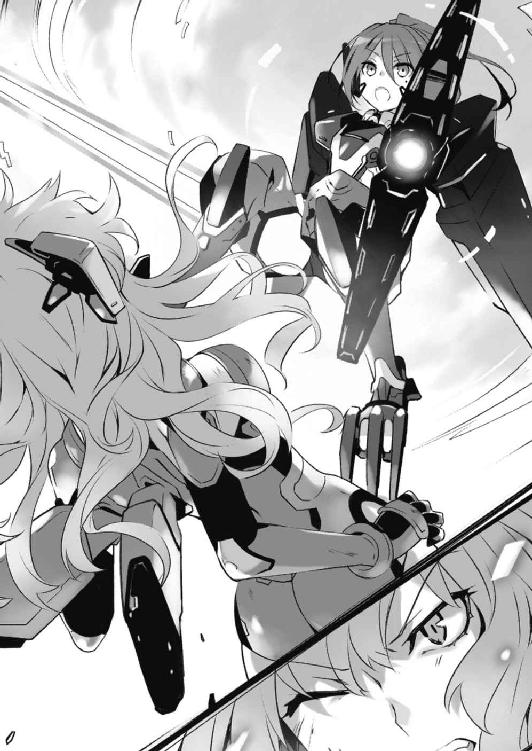
「わ、わ......っ！」
急にジェシカを預けられた魔術師は、慌てながらも随意領域を操作し、その身体を支える。
そんな様子を確認してから、真那がさらに言葉を続けた。
「見逃してやるって言ってんです。これが最後の警告です。そいつを連れてとっとと消えやがりなさい」
しかし、そんな警告で矛を収められるほど、魔術師たちも物わかりが良くはなかったらしい。キッと視線を鋭くし、真那を取り囲むように展開してくる。
「やれやれ......予想通りのリアクションですね」
真那ははあと溜息を吐き、全方位に対応するように両手を広げた。
◇
「や──やめろっ！ 四糸乃！ 耶倶矢に夕弦も！ 正気に戻ってくれ！」
士道が叫ぶも、四糸乃と八舞姉妹は十香への攻撃を止めようとしなかった。
「何を......言っているんですか？ 士道さんや......十香さんこそ、なんでお姉様に酷いことを......するんです？」
『そうだよー、君たちがいけないんじゃないのー。ちょーっとお灸を据えないといけないでしょーこりゃー』
「くく......何やら士道が酔狂なことを申しておるぞ、夕弦」
「驚愕。彼には良心というものがないのでしょうか」
四糸乃と〈氷結傀儡〉と化した『よしのん』、そして八舞姉妹が口々に言ってくる。
言動を見るに、士道や十香のことを忘れているわけでも、人格を変化させられたりしているわけでもないらしい。ただ、彼女らの価値観の最上位に、誘宵美九という存在が刷り込まれているといった様子だった。
「一体......どうしたら......」
士道は絶望的な心地で顔を歪めた。
状況は最悪である。
セントラルステージに天使を顕現させた美九と、それに操られた四糸乃に八舞姉妹、そして何千人もの観客たち。それら全員が、士道と十香を襲ってくるのだ。
さらには〈フラクシナス〉にいるはずの琴里までもが〈破軍歌姫〉の音に当てられ、正気を失ってしまっている。これではこの場から離脱して態勢を立て直すことさえ出来はしない。八方塞がりとはこのことだった。
十香はなんとか美九を止めようと頑張っているようだったが、四糸乃と八舞姉妹に阻まれて近づくことさえできていない。
しかし十香はそれでも諦めず、顕現させた剣──〈鏖殺公〉を握り、キャットウォークの手すりを蹴って美九に迫っていった。
「はぁぁぁぁッ！」
裂帛の気合いとともに空中で放たれた斬撃が、美九に向かって伸びていく。
だがその一撃は美九に届く寸前で四糸乃が構築した氷の壁に阻まれた。次いで、十香に向かって二方向から凄まじい風の塊が放たれる。
「く──！」
咄嗟に剣で防御をするも、その風圧そのものを殺すことは叶わなかったらしい。十香の身体が軽々と吹き飛ばされ、そのままステージの天井をぶち破って外に飛ばされていってしまう。
「う、うわぁぁぁぁっ!?」
「十香!!」
叫ぶも、士道にはどうしようもなかった。十香の身体は建物の外に消え、すぐに声も聞こえなくなってしまう。
だが。
「ん......？」
士道が発したのは、狼狽や絶望に沈む声ではなく、訝しげなうなりだった。
理由は単純なものである。非常に小さくではあるが、何やらガン、ガン、という音が、会場の上方から聞こえてきたのだ。
そして次の瞬間、
「ここ──ッ！」
そんな叫びとともに、美九の立っているステージ真上の天井が切り裂かれ、〈鏖殺公〉の切っ先を下方に構えた十香が猛スピードで落下してきた。
どうやら外に吹き飛ばされたあと、ステージの天井を外から伝ってきたらしい。
「な......っ！」
美九の狼狽が会場中に響き渡る。
四糸乃と耶倶矢、夕弦が一斉に振り向くも、遅い。十香は〈鏖殺公〉で空気を裂くようにしながら美九と天使に直進していった。
だが、〈鏖殺公〉の切っ先が天使の金管の一部を切り裂いた瞬間──
「あぁぁぁ────ッ!!」
美九が、凄まじい大声を発した。
初めて士道が遭遇したときの声など比較にならない巨大な音圧が、密閉された会場中を暴れ回る。
そんな音圧を超至近距離で浴びせられたのである。いくら霊装を限定的に顕現させている精霊とはいえ、ひとたまりもなかった。
「ぐ......！」
十香が苦悶を発し、質量のある音に吹き飛ばされて、士道のすぐ側の壁に叩きつけられる。
「十香！」
「けほ......っ、けほ......っ！」
叫び、駆け寄ると、十香は苦しげに咳き込み、〈鏖殺公〉を杖にしてなんとか立ち上がった。
「......今のは危なかったです。でも、無駄ですよぉ」
言って、ステージ上の美九が怒気の籠もった目で士道を睨んでくる。
それと同時、舞台裏の階段から繋がっているキャットウォークの入り口から、何人もの観客がなだれ込んできた。ゾンビのような挙動で、のろのろと士道たちに向かってくる。
「ぐ......っ」
万事休すである。士道は身を硬くした。
と、その瞬間。
「え......？」
士道は眉をひそめて上空を見やった。ステージの天井が十字に切り裂かれ、そこから、機械の鎧を纏った少女が会場内に入ってきたのである。
「あ、あれは──」
一瞬、〈ラタトスク〉からの助けが来たのかと思った。
だが──違う。
その姿には見覚えがあった。全身に白金のＣＲ─ユニットを纏った、線の細い少女である。絹糸のような淡い色の金髪が、随意領域の中で風に遊ぶように揺れていた。
「ベイリーたちは結局失敗しましたか。......まあいいでしょう、想定内です」
深い緑青色の目を細めながら、少女──エレン・メイザースが静かな口調でそう言う。
士道は息を呑んだ。彼女には覚えがある。修学旅行の際、十香を狙って現れた〈バンダースナッチ〉たちの親玉だ。あのときは幸運に幸運が重なってなんとか逃げ延びることができたとはいえ、その力は、限定解除状態の十香を遥かに凌駕していた。
「な......あやつがなぜこんなところに......」
十香もエレンに気付いたのだろう。苦々しく顔を歪め、〈鏖殺公〉を構える。
「──目標、夜刀神十香に、五河士道......の反応がある女生徒を発見。これより捕獲に移ります」
するとエレンが、美九たちには目もくれず、一直線に士道と十香の方に向かってきた。十香が息を詰まらせ、士道の腕を掴んでくる。
「！ 逃げるのだ、シドー！」
「に、逃げろって言っても、一体どうやって......」
「く......！」
そうこうしている間にも、エレンは迫ってくる。
十香は焦れるようにのどを震わせると、一層強く士道の腕を掴み、そのまま、先ほど壁に開いた穴目がけて士道の身体を放り投げた。
「う、うわぁぁぁぁぁぁぁぁぁッ!?」
限定解除状態とはいえ、精霊の膂力は人間のそれを遥かに超えている。
士道の身体は、軽々と建物の外に放り出された。
◇
真那の姿が掻き消えると同時、空に残っていた魔術師の悲鳴が響く。
折紙が痛む頭に手をやりながら視線を向けると、そこには一瞬のうちに身に纏ったＣＲ─ユニットを破壊された魔術師の姿があった。
次いで、真那が身体を捻ってその付近に浮遊していた〈バンダースナッチ〉に肉薄したかと思うと、左手の『顎』でその頭部を挟み込んだ。メキャ、という嫌な音を立て、人形の頭がねじ切られる。
誰の目から見ても、圧倒的だった。頭数こそ敵に分があるが、まったく勝負になっていない。
真那の強さは折紙もその身を以て体験済みである。だが......これはある種異常なレベルだった。真那の能力のみではなく、彼女の纏った見知らぬ蒼いＣＲ─ユニットの性能もまた、ＡＳＴのそれとは比べものにならない水準を誇っている。
──結局、五分と経たずに勝負はついてしまった。
「......ったく、手間ぁかけさせてくれやがりましたね」
パン、パンと手をはたき、真那がふうと息を吐く。
もう空には、魔術師も〈バンダースナッチ〉も見当たらない。皆、真那が一撃ないし二撃で屠り、地上へと落下していったのである。
とはいえ魔術師の纏うワイヤリングスーツには対衝撃性と緊急時の安全装置が搭載されている。これくらいの位置から落下したとしても、まあ極端に運が悪くなければ死にはしまい。
「大丈夫でいやがりますか、鳶一一曹」
真那が折紙に目を向けてくる。折紙は頭痛に耐えながらそれに返した。
「......あな、た......なぜ、こんな、ところに......」
瞬間、鼻と目から血が垂れ落ち、真っ赤になった視界がぐらんと揺れる。
「おっと......」
真那が慌てて折紙のもとに飛んできて、その身体を支える。
しかし、もう折紙に随意領域を維持することはできなかった。〈ホワイト・リコリス〉が重力の檻に囚われ、そのまま地面に向かって落下していく。
「......随分と無理をしやがったようですね、鳶一一曹。......ふむ、参りましたね。兄様を助けに行かなければならねーのですが、このまま放っておくわけにも......」
と──
「ん......？」
そこで不意に、真那が眉をひそめた。
「どう......したの......」
「......いえ、何でもありません。──少し、いやーな感じがしただけです」
言うも、その表情は。
彼女が、仇敵たる最悪の精霊の気配を感じ取ったときのそれに、よく似ている気がした。
◇
「......！ ほう──」
〈プリンセス〉──夜刀神十香の予想外の行動に、エレンは思わず進行を止めた。
何しろエレンが迫る一瞬の間に、五河士道（......一応照合の結果そうだと思われる。たぶん）を会場の外に逃がしてみせたのである。恐らくエレンの目線や進行方向から目的を察したのだろうが、あの一瞬のうちの判断としては素晴らしい好手だった。
とはいえ......夜刀神十香と五河士道、二人が捕獲目標であるエレンにとっては忌々しい行動に違いなかったが。
「冷静な判断です。賞賛に値します」
「ふん......！ 貴様に褒められても嬉しくなどない！」
「そうですか」
エレンは短く言うと、改めてステージ内の状況を確認するように視線を巡らせた。
キャットウォークに追いやられた〈プリンセス〉夜刀神十香。それを追いつめる何千という数の観客。そして、ステージ上に天使を顕現させた精霊〈ディーヴァ〉と、それに付き従う〈ハーミット〉、〈ベルセルク〉。──なんとも奇妙な状況であった。
これだけの精霊が揃うのは非常に稀である。五河士道を捕獲できなかったかわりに何人か......という考えが頭を掠めるが、エレンはすぐに思い直して首を振った。
「......いえ、やめておきましょう。慢心は敵です」
脳裏に、先々月の悪夢のような失敗の記憶が蘇る。そう、欲張って全て取りこぼすくらいなら、確実に目標を達成した方が何倍もいい。
「──今日用があるのはあなただけです、夜刀神十香」
エレンは目を細め、視線を十香に向けた。
ステージ外に逃がされた五河士道を追っているような猶予はない。ならば、エレンのすべきことは決まっていた。
幸い他の精霊たちはエレンの意図を察しかねてか、それとも突然の事態に対応し切れていないのか、ただこちらに視線を送ってきているだけである。彼女らが何らかの行動に出る前に、仕事を済ませた方がいいだろう。
「今日こそは私と来てもらいますよ、〈プリンセス〉」
「ふ──ざけるなッ！」
夜刀神十香が手にした天使を振り抜いてくる。それと同時に、凄まじい剣圧がエレン目がけて飛んできた。
「〈カレド──ヴルフ〉」
しかしエレンは、慌てることもなく背に携えていた大型レイザーブレイドを抜くと、その剣撃を容易く受け止め、霧散させた。
「おや......或美島のときよりも攻撃が軽いのではありませんか？」
くっとあごを上げ、十香に剣を向ける。
「な......」
「好都合です。時間をかけるわけにもいきません。一瞬で片を付けさせていただきます」
言って柄を握り直し──エレンは、空を駆けた。
「う......あ......ッ、けほっ、けほっ」
会場内から放り投げられ、辺りに植えられていた木々に激突したのち地面に落下した士道は、全身を苛む痛みと衝撃に激しく咳き込んだ。
どうやら数分の間意識を失ってしまっていたらしい。きょろきょろと視線を巡らせて周囲の状況を確認する。
士道が飛ばされたのは、天宮スクエアからほど近い公園の一角だった。木々と柔らかな芝生のおかげでどうにか軽傷で済んだようである。すぐ後方に広がっているアスファルト製の駐車場を一瞥して、士道は顔を青く染めた。
琴里の加護によって再生能力を得ている士道である。たとえコンクリートに落下しても死にはしないだろうが（というか、十香もそれをわかっているからこそこんな手段を取ったのだろうが）、全身を苛む痛みだけはどうしようもない。自分の幸運と十香のコントロールに感謝する士道だった。
「そうだ、十香......！」
そこで混濁していた意識がはっきりし、自分の置かれている状況を思い出す。
そう。まだ会場には十香が一人、残されたままなのである。
「く......！」
鈍痛に苛まれる身体を起こし、ステージの方に目を向ける。いくら霊力を限定解除した十香とはいえ、あんな状況で無事に済むはずがなかった。
と──士道が上体を起こしきったところで、視線の先に聳えた天宮スクエアセントラルステージの天井から、何かが飛び出していくのが見て取れた。
「あれは......！」
その姿を見て、思わず目を見開く。
白金のＣＲ─ユニットを纏った金髪の少女が、霊装を解除した十香を抱いて空を飛んでいたのだから。
「十香......!?」
十香は意識を失っているのか、ぐったりとしたまま動こうとしなかった。
そんな十香を抱いたエレンは、辺りの状況を確認するようにぐるりと首を回すと、そのまま十香を連れてどこかへと消えていってしまった。
あとに残された士道は、数瞬の間呆然と、エレンの消えた空を見つめていた。
「十......香......？」
瞬く間に起こった現実感のない出来事が、次第に脳に染み込んでいき、士道の意識を揺さぶってくる。
「十香──十香ぁぁぁぁぁぁぁぁぁぁッ！」
叫ぶも──その声は、空しく虚空に響き渡るだけだった。
十香が、さらわれた。
こんなにも、あっさりと。
自分には、何も──できなかった。
その事実が、士道の無力感をさらに強くした。
だが。士道には、膝を突いている時間さえ与えられはしなかった。
理由は単純。天宮スクエアの正面ゲートが開いたかと思うと、そこから夥しい数の人間が、ゆらゆらと進み出てきたのである。
──まるで、誰かを探すかのように。
「く......」
恐らく、美九の指示で士道を捜しに遣わされた一団だろう。
ここで士道が捕まってしまっては、十香の努力が水泡に帰してしまう。士道は未だ痛む身体にむち打ってなんとかその場に立ち上がると、足を引きずりながら逃げていった。
◇
──それから、どれくらい時間が経っただろうか。
夕日が沈みきり、辺りに闇が満ち始めた頃。十香の手によってステージから逃げ延びた士道は、天宮市の外れにある廃ビルの中の一室に身を潜めていた。
さすがにメイド服のままでは動きづらく、しかも目立ちすぎるため、道中広場で行われていたフリーマーケットで男物の服を購入し、着替えを済ませていた。無論、のどの変声機も外してあるため、もう完全に士織モードから士道に戻っている。
「............」
ちらと棚の上に置いた携帯電話に目をやる。
画面には、天宮市で起こった原因不明の大暴動を生中継で放送しているニュース番組が映し出されている。街の中を歩き回る何万人もの市民の姿が、ヘリからの空撮映像で捉えられていた。
コメンテーターがしきりに持論を展開し、暴動の原因を究明しようとしていたが、それも用をなしていない。
誰にも想像できないだろう。この数万人の人間たちが、美九の命令によって士道を捜し回っているだけなどとは。
「............」
画面を睨みながら、士道は歯噛みした。──あきらかに、人の数が増えている。
どうやら美九はステージの観客だけでは飽きたらず、どんどん尖兵を増やしているらしかった。〈破軍歌姫〉にどれだけの力があるのかわからないが、これではいつか見つかってしまうだろう。
しかもどうやら、スピーカー越しでも〈破軍歌姫〉の効果はあるらしかった。暴動を鎮圧しに来た警官隊が、街宣車から流れる美九の演奏を聴いた瞬間に戦列に加わったときはさすがに絶望感を覚えた。
「くそ......っ」
忌々しげにうめき、固めた拳を床に突き立てる。
「こんなことしてる場合じゃないのに......俺は──ッ」
そう。今解決せねばならないのは美九の問題だけではなかった。ＤＥＭの魔術師にさらわれてしまった十香を一刻も早く取り戻さねばならないのである。
ＤＥＭという会社のことを、士道はそこまでよく知っているわけではない。だが、精霊を殺すことを至上目的とし、各国の軍や警察組織に顕現装置を提供している組織が、十香を丁重にもてなすなどとは考えられなかった。
苛立たしげにインカムを叩く。だが、そこからはノイズが聞こえるばかりで誰も応答してこなかった。
「一体......これからどうしたら......」
士道は苦悩に満ちた顔を作ると、再び拳を床に打ち付けた。
──問題は山積みだった。
士道を狙う美九。
それに支配された四糸乃、耶倶矢、夕弦。
天宮市を埋める人の群れ。
未だ連絡の取れない〈ラタトスク〉。
そして──十香をさらっていったＤＥＭインダストリー。
それら全てに対応するためには、何もかもが不足していた。
時間が足りない。
設備が足りない。
戦力が足りない。
何よりも──士道に、力が足りない。
「俺は......」
奥歯を噛みしめる。
「俺は──ッ！」
そして、士道が全身に蟠る無力感を声にして零した瞬間。
──くす、くす、と。
誰かが、笑った。
「......っ!?」
肩を揺らし、バッと顔を上げる。
一瞬、美九に操られた住民にこの潜伏場所が見つかったのではと思ったが......辺りに人影はない。
だが、その声の主の正体はすぐに判明した。
──影が。
暗い部屋の中に充満した影が蠢動したかと思うと、そこから、一人の少女が這い出てきたのである。
血のような紅と闇のような黒で構成されたドレス。左右不均等に結われた黒髪。左目に浮かんだ時計の文字盤と、一秒ごとに規則的に時を刻む針。
そして、その作り物としか思えないくらいに端整な貌は、愉悦とも嘲笑とも取れる生々しい笑い顔に彩られていた。
「うふふ、随分と暗い顔をしていらっしゃいますのね」
「狂三......ッ!?」
士道は驚愕に目を見開き、その名を呼んだ。
そう。それは。
かつて士道の前に現れた『最悪の精霊』。時崎狂三に間違いなかった。
思わず身体を前傾させ、油断なく狂三を睨め付ける。だが、それが強がりであることは一目瞭然だった。士道一人では狂三をどうこうするどころか、逃れることさえ難しいだろう。
それを理解しているのだろう、狂三は妖しく笑うだけだった。
そして──静かに唇を開いてくる。
「お困りの様子ではありませんの。──ねえ、士道さん。少し、お話をしませんこと？」
To be continued
あとがき
お久しぶりです橘公司です。
なんか最近『お久しぶりです橘公司です』であとがきを始めることが妙に多い気がします橘公司です。
『デート・ア・ライブ６ 美九リリィ』をお届けいたします。今回の精霊は誘宵美九。サブタイトルの通りリリィな精霊です。いかがでしたでしょうか。お楽しみいただけたなら幸いです。
毎巻新キャラ・新デザインが出てくるのがお決まりになっているこのシリーズですが、今巻も前巻ほどではないにしろ新規デザインのキャラが多いです。美九に、あのキャラに、新キャラではないんだけど新キャラ（矛盾）なあのキャラに......
そしてもう口絵でネタバレしちゃってるので言ってしまいますが、今回は久々にとあるキャラが復活します。まあ厳密には前巻で復活してるんですけども、戦闘に復帰するのは三巻ぶりくらいなので感動もひとしおです。
しかもなんと新装備を引っ提げて登場ときたものです。奥さん新装備ですってよ新装備。シャイニングがゴッドに、アーバレストがレーバテインに、プリキュアがプリンセスフォームになるようなものです。これはもう活躍しないはずがねーです。無双が始まっちまいやがりますね！
さて、本作『デート・ア・ライブ』ですが、この度、ドラゴンマガジン誌上にて短編小説を連載させていただけることになりました。
毎回新たなヒロインが登場するというお話の性質上、本作はどうしても、今までに登場したキャラクターの出番が少なくなってしまうことがあります。
短編の方では、本編では描けなかったヒロインの新たな一面や、お話の裏で繰り広げられていた出来事など、キャラクターたちの活躍を補完していければと思っております。こちらも併せてお楽しみいただければ幸いです。
そしてもう一つ。なんと『デート・ア・ライブ』のゲーム化が決定いたしました！
『ネプテューヌ』シリーズなどを手がけるコンパイルハートさんからリリースされます。続報をお待ちくださいませ！
さらに、アニメもついに放送時期が決定いたしました！
二〇一三年四月より、ＴＶアニメ放送開始予定です！ スタッフさんたちが頑張ってくれていますので、是非ご期待ください！
毎巻恒例のスペシャルサンクスになりますが、たくさんの方々にお助けいただきながら本作は作られております。
つなこさん、担当さんはもとより、デザインの草野さんや、その他出版に関わる方々、書店さん、毎回大変お世話になっております。本当にありがとうございます！
また、少年エースにてコミック版『デート・ア・ライブ』を連載中のｒｉｎｇｏさん。
ドラゴンエイジにてスピンオフコミック『デート・ア・ストライク』を連載中の鬼八頭かかしさん。
ドラゴンマガジン、エイジプレミアムにて四コマ『デイト・ア・オリガミ』を連載中の珠月まやさん。
毎回素敵な漫画をありがとうございます！
と、本編を読まれた方はもうおわかりになっていると思いますが、今回の引きもなんかこう、あれな感じになっております。
このお話の続きは、次巻『デート・ア・ライブ７』で確かめていただければと思います。
次巻は春頃の発刊を予定しております。
では、またお会いできることを祈っております。
二○一二年一○月 橘 公司
デート・ア・ライブ６
美九リリィ
橘 公司
平成24年12月25日 発行
発行者 山下直久
発行所 株式会社富士見書房
〒102-8144 東京都千代田区富士見1-12-14
http://www.fujimishobo.co.jp/
(C)2012 Koushi Tachibana, Tsunako/Fujimishobo